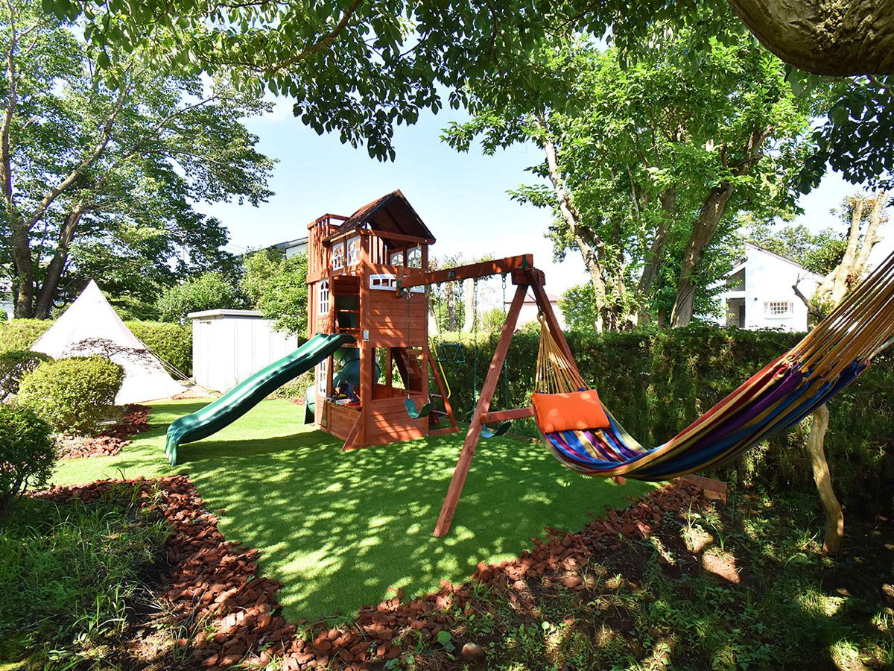
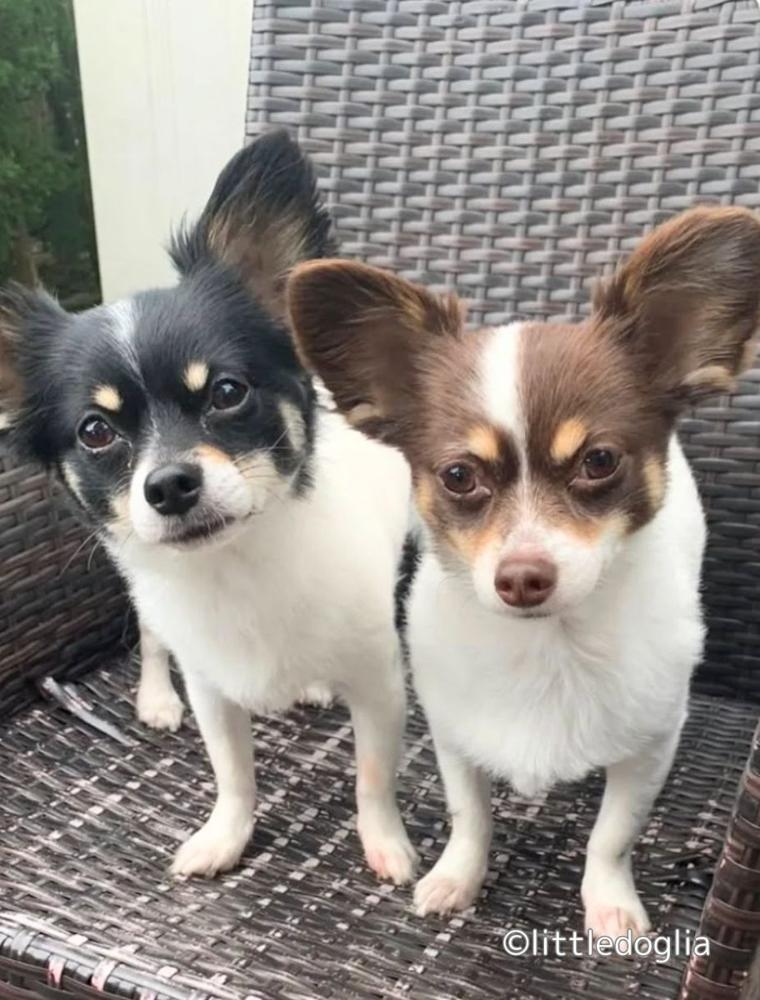
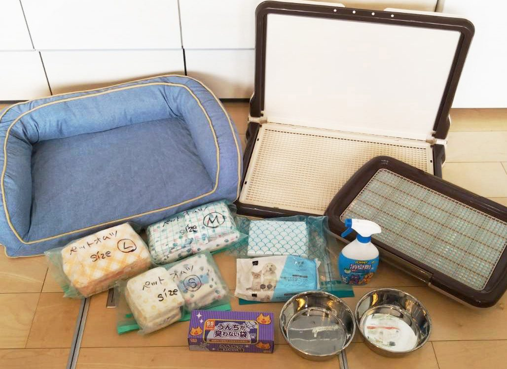
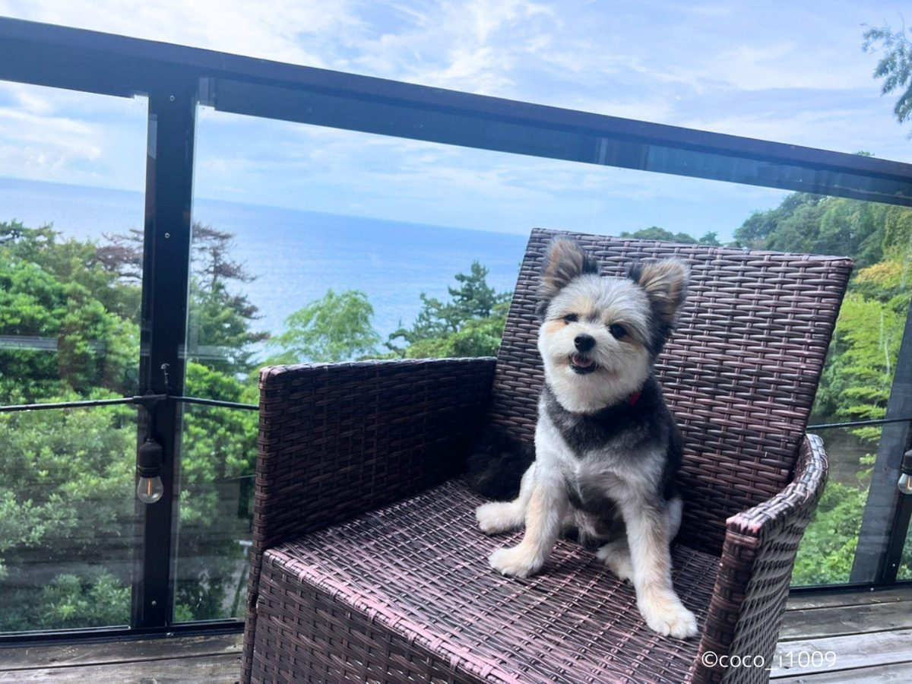
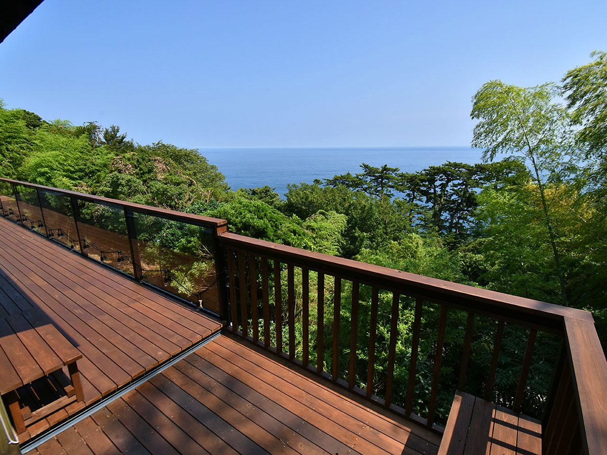
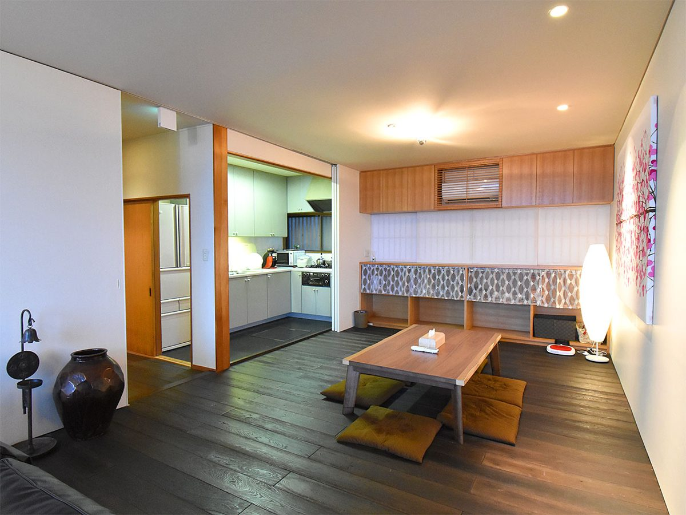
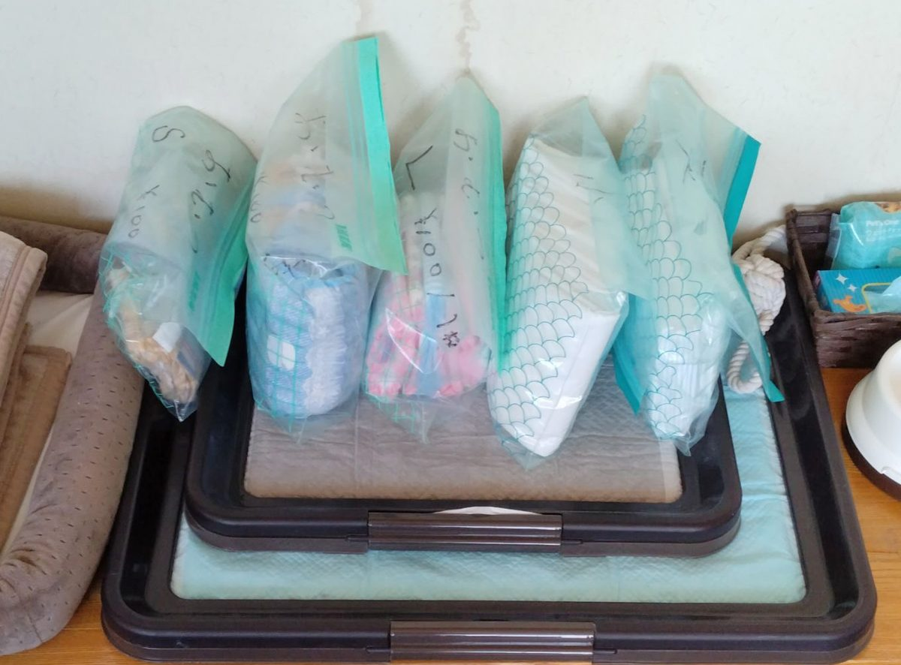

静岡県の犬と泊まれる宿 156 軒 静岡県の宿 156 軒を、すべてこのページに載せています。宿名・市町村名と、添い寝・ケージ・食事同伴などの条件で絞り込めます。犬とおでかけできる場所は 宿の一覧の下 にあります。ほかの県は 県から宿を探す から選べます。
寝る場所 犬用ベッド、クレート、床置きマットのどれか
ケージ 常設、貸出予約、持参必須を区別
添い寝 人用ベッド可否と条件を確認
アメニティ トイレ・食器・清掃・足洗いまで確認
画像提供：楽天トラベル 広告｜楽天トラベルで空室・条件を確認 写真は楽天トラベル提供(取得日 2026-10-11)。料金・空室は予約画面で確認してください。 チェックイン 15:00〜17:00 ／ チェックアウト 11:00 (楽天トラベル掲載情報・2026-10-01 時点。プランにより異なる場合があります)
楽天トラベルのクチコミ評価 ★★★★★ 4.76 / 5 ・ 81件
部屋 4.75・清潔感 4.82・サービス 4.82・風呂 4.71
最新のクチコミを読む(楽天トラベル・2026-10-31 投稿) 愛犬と露天風呂を満喫、誕生日のお祝いも感激久しぶりの旅行を愛犬と過ごさせていただきました。露天風呂付きの客室も贅沢なのに食事もとても美味しく大満足ですたまたま愛犬の誕生月でバースデイプレゼントまで…
楽天トラベルに投稿された最新の 1 件を、そのまま表示しています(犬連れの方の投稿とは限りません)。
広告｜楽天トラベルでクチコミを読む 楽天トラベル API で取得(2026-11-04)。犬連れ以外の宿泊者も含む評価です。
朝夕の部屋食と客室露天風呂で、愛犬と過ごす時間を取りやすい宿。
対象犬・頭数 小型3頭、中型・大型2頭まで。大型と小型の混在は計3頭まで。中型2頭＋小型1頭は不可。
犬の宿泊料金 通常1頭3,300円。公式予約は1頭無料、2頭目以降2,200円の案内。適用プランを確認。
ケージ・持参判断 貸出ケージ・カートあり（台数限定）。寸法と必要台数を事前予約。
夜はどこで寝る？ 公式FAQでは布団で一緒に就寝可能。粗相は清掃料金、ベッドからの転落に注意。
持ち物 フード、寝具、リード、狂犬病・混合ワクチン証明書を持参。猶予証明や抗体検査の場合はその書類を提示。
食事同伴 基本は朝夕部屋食。複数室利用ではラウンジ食の場合あり。犬用追加料理あり。ケーキは2日前までの注文。
ドッグラン 共用屋外ランは芝生100㎡とウッドチップ150㎡の2か所。1階客室には人工芝の専用ラン。
予約前の重要確認 公式の頭数案内には3頭以上は姉妹館推奨とも記載。3頭・混合サイズは予約前確認。
客室差： 1階は専用ラン付き。階数・寝具タイプを選んで予約。
ワクチン・狂犬病の証明書の提示・持参あり 主要駅から車で(目安・渋滞なし): 静岡駅 約1時間57分・100.6km、甲府駅 約2時間19分・136.7km、横浜駅 約2時間28分・107.8km
広告｜楽天トラベルで空室・条件を確認 この宿への旅行プラン →
公式情報確認日：2026-10-07。料金・条件は予約時に再確認してください。
ここへのわんこ旅行プラン
画像提供：楽天トラベル 広告｜楽天トラベルで空室・条件を確認 写真は楽天トラベル提供(取得日 2026-10-11)。料金・空室は予約画面で確認してください。 チェックイン 15:00〜17:30 ／ チェックアウト 11:00 (楽天トラベル掲載情報・2026-10-01 時点。プランにより異なる場合があります)
楽天トラベルのクチコミ評価 ★★★★★ 4.78 / 5 ・ 1,073件
部屋 4.67・清潔感 4.70・サービス 4.86・風呂 4.77
最新のクチコミを読む(楽天トラベル・2026-10-31 投稿) ペットと快適に過ごせ、食事も温泉も最高初めてペット同伴の宿泊でしたが、全てに満足でとても楽しく過ごせました。まずは、スタッフの方々が大変優しい対応かありがたかったです。ありがとうございました。…
楽天トラベルに投稿された最新の 1 件を、そのまま表示しています(犬連れの方の投稿とは限りません)。
広告｜楽天トラベルでクチコミを読む 楽天トラベル API で取得(2026-11-04)。犬連れ以外の宿泊者も含む評価です。
部屋食対応・客室露天風呂付き。多頭連れや犬以外の家族も相談できる宿。
所在地 静岡県伊東市八幡野1265-9 · 公式アクセス カーナビでは別施設へ案内される場合があります。公式アクセスの案内をご確認ください。
対象犬・頭数 小型・中型・大型犬が全室に宿泊可。一律の頭数上限は設けず、犬種と頭数の組み合わせで相談。
犬の宿泊料金 1頭目無料、2頭目2,000円、3頭目以降1,000円の公式表示。連泊時の計算は予約前確認。
ケージ・持参判断 ケージ・サークル・クレート貸出あり、事前予約推奨。粗相・損傷の恐れがあり目を離す際はケージやおむつ等で対応。
夜はどこで寝る？ 人のベッド上は犬の立入り不可。普段の寝具を持参。
持ち物 普段の食事と寝具を持参。必要な貸出用品を先に予約。
食事同伴 全室部屋食対応。レストランも犬同伴可。犬用料理は事前予約、持参食の温め対応あり。
ドッグラン 共用ラン約40坪。専用ラン付き客室は人工芝・ウッドチップの違いあり。
予約前の重要確認 多頭構成、客室の段差、犬用料理の注文期限を確認。露天風呂を含む浴室は犬立入り不可。法定等の予防接種が条件で、獣医師による免除は例外。証明書持参の要否は確認。
客室差： 別館6・8号室は大型犬の足音に配慮が必要。犬用バスタブは別館5・7号室のみ。
ワクチン接種済みが条件 主要駅から車で(目安・渋滞なし): 静岡駅 約1時間59分・101.3km、甲府駅 約2時間21分・137.5km、横浜駅 約2時間29分・108.3km
広告｜楽天トラベルで空室・条件を確認 この宿への旅行プラン →
公式情報確認日：2026-10-07。料金・条件は予約時に再確認してください。
ここへのわんこ旅行プラン
画像提供：楽天トラベル 広告｜楽天トラベルで空室・条件を確認 写真は楽天トラベル提供(取得日 2026-10-11)。料金・空室は予約画面で確認してください。 チェックイン 15:00 ／ チェックアウト 11:00 (楽天トラベル掲載情報・2026-10-01 時点。プランにより異なる場合があります)
楽天トラベルのクチコミ評価 ★★★★☆ 4.34 / 5 ・ 810件
部屋 4.48・清潔感 4.29・サービス 4.38・風呂 4.09
最新のクチコミを読む(楽天トラベル・2026-10-28 投稿) 最上階からの海景色とゆったりした時間熱川温泉に行くのは初めてでした。部屋は10階の最上階、海がきれいに見えました滞在中は、ゆったり過ごす事が出来ましたし、宿泊料金も安かったです。特に不満は…
楽天トラベルに投稿された最新の 1 件を、そのまま表示しています(犬連れの方の投稿とは限りません)。
広告｜楽天トラベルでクチコミを読む 楽天トラベル API で取得(2026-11-04)。犬連れ以外の宿泊者も含む評価です。
海を望む犬同伴客室と天然芝のドッグランを組み合わせた海辺の滞在。
対象犬・頭数 室内犬のみ、咬み癖のある犬は不可。1室小型3頭、中型2頭、大型1頭まで。超過は問い合わせ、混合サイズは予約前確認。
犬の宿泊料金 公式直接予約は小型1,100円、中・大型1,650円。他社予約は小型2,200円、中・大型3,300円の案内。泊数を含む総額を確認。
ケージ・持参判断 客室ケージあり。チェックイン時のキャリーと大型犬の入館経路を確認。
夜はどこで寝る？ 犬を人用ベッド・布団に乗せることは禁止。ケージや持参寝具を利用。
持ち物 普段の食事・寝具、リード、証明書、移動用キャリーを準備。
食事同伴 犬の利用エリアは客室(ドッグフレンドリールーム)とドッグラン(公式)。犬用食事の案内あり。レストラン同伴の可否は直接の記載がなく予約前確認。
予約前の重要確認 犬種区分、予約経路別料金、館内の同伴可能範囲を確認。各種予防接種済みが条件。客室・ラン以外はリード必須。
客室差： 必ずドッグフレンドリールームを予約。ビューバスツイン41㎡、和洋室52〜56㎡など。
ワクチン接種済みが条件 主要駅から車で(目安・渋滞なし): 静岡駅 約2時間14分・112.3km、甲府駅 約2時間36分・148.4km、横浜駅 約2時間44分・119.1km
広告｜楽天トラベルで空室・条件を確認 この宿への旅行プラン →
公式情報確認日：2026-10-07。料金・条件は予約時に再確認してください。
ここへのわんこ旅行プラン
画像提供：楽天トラベル 広告｜楽天トラベルで空室・条件を確認 写真は楽天トラベル提供(取得日 2026-10-11)。料金・空室は予約画面で確認してください。 チェックイン 15:00〜18:00 ／ チェックアウト 11:00 (楽天トラベル掲載情報・2026-10-01 時点。プランにより異なる場合があります)
楽天トラベルのクチコミ評価 ★★★★☆ 4.38 / 5 ・ 45件
部屋 4.37・清潔感 4.43・サービス 4.46・風呂 3.94
最新のクチコミを読む(楽天トラベル・2026-10-19 投稿) 施設や接客は良いが、設備や食事に不満あり全体的に普通です。価格から考えると食事の質が低いしお部屋にバスタブがないので歩いて温泉施設まで行くのですが天気が悪いと行きたくない距離です。お部屋がカビ臭い…
楽天トラベルに投稿された最新の 1 件を、そのまま表示しています(犬連れの方の投稿とは限りません)。
広告｜楽天トラベルでクチコミを読む 楽天トラベル API で取得(2026-11-04)。犬連れ以外の宿泊者も含む評価です。
所在地 静岡県静岡市駿河区丸子3344-11 · 公式アクセス
対象犬・頭数 犬種制限なし、飼い主が制御できない犬は不可。公式予約は1室3頭、他社は2頭まで。備品は2頭分。犬料金は1頭2,500円×頭数、税・泊単位は予約画面で確認。
ケージはある？ 各室に90cmケージを折りたたんで用意。大型希望は予約時申告。犬を残す外出時は必ずケージへ、長時間の外出は控える。
夜はどこで寝る？ 愛犬と同じ客室で滞在。落ち着ける寝床を準備。
持ち込み判断 普段の寝具・食事、必要なクレートは持参候補。1年以内の狂犬病・混合ワクチン証明を持参。抗体検査証明にも対応。
添い寝の条件 人用ベッド利用可否は予約前確認。客室シャワーで犬を洗うことは不可、1階セルフシャンプー室を利用。
予約前の確認 原則月・火曜休館、繁忙期・祝日は振替あり。日曜泊後は月曜11時でランを含む全サービス終了。朝夕犬同伴可、犬も1泊2食付き（3種、不要でも返金なし）。共用ランは宿泊者無料・24時間、屋根付きは15～22時／5～10時。
公式情報で確認できた設備・特徴 CHECK
犬用客室用品 ドッグラン アジリティ 犬用食事 レストラン同伴 ワクチン・狂犬病の証明書の提示・持参あり 主要駅から車で(目安・渋滞なし): 静岡駅 約8分・7.3km、浜松駅 約1時間01分・74.7km、甲府駅 約1時間27分・112.4km
広告｜楽天トラベルで空室・条件を確認 この宿への旅行プラン →
ここへのわんこ旅行プラン
画像提供：楽天トラベル 広告｜楽天トラベルで空室・条件を確認 写真は楽天トラベル提供(取得日 2026-10-11)。料金・空室は予約画面で確認してください。 チェックイン 15:00〜18:00 ／ チェックアウト 11:00 (楽天トラベル掲載情報・2026-10-01 時点。プランにより異なる場合があります)
楽天トラベルのクチコミ評価 ★★★★☆ 4.67 / 5 ・ 5件
広告｜楽天トラベルでクチコミを読む 楽天トラベル API で取得(2026-11-04)。犬連れ以外の宿泊者も含む評価です。
所在地 〒413-0232 静岡県伊東市八幡野1086-88 · 公式情報
対象犬・頭数 犬種・大きさの一律制限なし。大型犬用クレート・トイレ・食器を用意。
ケージはある？ 客室にクレート。多頭・大型犬は備品数と寸法を事前確認。
夜はどこで寝る？ 就寝時はクレート、人用ベッドは犬不可。ソファ・椅子に乗せる際は備え付けバスタオルを敷く。
持ち込み判断 慣れた寝具と食事は持参候補。階段や客室動線が犬に合うか確認。
食事・一緒に過ごせる範囲 客室に温泉露天風呂と内風呂（犬の入浴・シャンプーは不可）。食事は離れが本館個室食事処、特別室（千尋・茜）は客室内の食事処。犬用食事あり。食事処への犬同伴可否は予約前確認。
予約前の重要確認 離れ・本館等で食事場所や移動条件が変わるため同伴範囲を確認。一部客室は頭数上限に例外あり。つわぶきの離れに約50㎡専用ラン（8～21時）。
公式情報で確認できた設備・特徴 CHECK
クレート 大型犬用備品 食器 トイレ・シート エチケット袋 犬用タオル 消臭除菌スプレー 温泉露天風呂 頭数・犬料金： 小型〜中型犬6頭／室、大型犬3頭／室。公式サイト・電話予約は2頭まで無料、3頭目以降1頭あたり2,200円（税込）。その他の予約サイト経由は1頭あたり3,300円（税込）。ドッグラン： 宿泊者専用の人工芝ラン約200㎡。公式確認：2026-10-03
主要駅から車で(目安・渋滞なし): 静岡駅 約2時間03分・104.6km、甲府駅 約2時間25分・140.8km、横浜駅 約2時間29分・108.8km
広告｜楽天トラベルで空室・条件を確認 この宿への旅行プラン →
公式情報確認日：2026-10-07
ここへのわんこ旅行プラン
静岡県伊東市
わんわんパラダイス プレミア 伊豆高原（旧 Wan's Resort 城ヶ崎海岸） 添い寝 条件付き可 対象犬・頭数 犬種・大きさ・頭数制限なし。通常1頭1泊10kg未満3,300円、10～25kg未満4,400円、25kg以上5,500円（税込）。GoTo Pass会員は1アカウント・1滞在につき1頭1,000円引き。大型犬用クレート貸出あり。
ケージはある？ 客室備品にケージあり。大小クレート・折り畳みサークルも貸出、数量限定のため事前依頼。一時留守番はケージ・サークルを使用。
夜はどこで寝る？ ブランド公式案内ではマナーウェア着用でベッド・布団を一緒に利用可能。
持ち込み判断 普段の寝具・食事は持参候補。留守番はケージまたはサークル内のみ。
食事・一緒に過ごせる範囲 レストラン同伴、犬用食事、屋外DOG PARK(約390㎡の人工芝)、約300mの散歩コース、屋内プレイスペース(アジリティあり)、セルフシャンプー、時間制の犬預かりあり。2026年2月にレストラン・ラウンジを改装。
予約前の重要確認 ヒート中・生後4か月未満は不可、基本的なしつけ済みが条件。年1回の狂犬病と有効期限内の伝染病予防接種または抗体検査が必要。貸出品・預かりの数量・時間・料金を予約前確認。
公式情報で確認できた設備・特徴 CHECK
大小クレート 折り畳みサークル スタンド食器 トイレ・シート 消臭スプレー 足拭きタオル 屋外DOG PARK セルフシャンプー ワクチン接種済みが条件 主要駅から車で(目安・渋滞なし): 静岡駅 約2時間05分・104.2km、甲府駅 約2時間27分・140.3km、横浜駅 約2時間30分・109.1km
この宿への旅行プラン →
公式情報確認日：2026-10-07
ここへのわんこ旅行プラン
静岡県伊東市
CARO FORESTA 伊豆高原 Cuore 添い寝 予約前確認 外観・周辺道路：Google ストリートビュー Google ストリートビューの画像で、宿の内部や犬用設備ではありません。撮影した時期によっては、改装などで現在の外観と異なる場合があります。撮影時期は画像内の表示をご覧ください(位置は住所から43m以内)。 所在地 静岡県伊東市八幡野1131番地60 · 公式情報
対象犬・頭数 犬同伴型ホテル。犬料金は1泊 小型犬2,750円・中型犬3,300円・大型犬3,850円、小動物2,200円、2頭目以降1,100円（税込、公式宿泊料金表 2025年10月1日改定）。大型犬の料金区分あり。頭数の上限は料金表に記載がなく予約時確認。公式確認：2026-11-07
ケージはある？ ケージ（中型用）の無料貸出あり（要予約・数に限りあり）。留守番条件は客室ごとに確認。
夜はどこで寝る？ 同室滞在。人用寝具への同伴可否は規約確認。
持ち込み判断 普段の寝具、食事、坂道散歩に必要な移動用品を持参候補に。
食事・一緒に過ごせる範囲 伊豆高原の犬旅行拠点。食事同伴範囲と犬用食事を予約時確認。
予約前の重要確認 桜のドッグラン480㎡・梅のドッグラン550㎡（全面芝）と室内プレイルーム31㎡（8:00〜19:00）。宿泊・レストラン利用者は無料。系列のはんなり伊豆高原等と混同せず、Cuoreの予約ページを確認。公式確認：2026-10-03
公式情報で確認できた設備・特徴 CHECK
犬同伴客室 伊豆高原散歩 芝ドッグラン2面・室内ラン 駐車場 客室タイプ複数 主要駅から車で(目安・渋滞なし): 静岡駅 約2時間01分・102.1km、甲府駅 約2時間23分・138.3km、横浜駅 約2時間28分・108.5km
広告｜Yahoo!トラベルで空室・条件を確認 この宿への旅行プラン →
広告｜Yahoo!トラベル
Yahoo!トラベルの施設ページへ移動します(施設の同一性は名称と所在地で確認 2026-09-26)。犬の宿泊条件・料金・空室は予約画面で最新の表示を確認してください。当サイトは予約・料金の受け取りをしません。
公式情報確認日：2026-10-03（犬料金は公式宿泊料金表 PDF を 2026-11-07 に確認）
ここへのわんこ旅行プラン
画像提供：楽天トラベル 広告｜楽天トラベルで空室・条件を確認 写真は楽天トラベル提供(取得日 2026-10-11)。料金・空室は予約画面で確認してください。 チェックイン 15:00〜19:00 ／ チェックアウト 11:00 (楽天トラベル掲載情報・2026-10-01 時点。プランにより異なる場合があります)
楽天トラベルのクチコミ評価 ★★★★☆ 4.71 / 5 ・ 434件
部屋 4.67・清潔感 4.70・サービス 4.80・風呂 4.62
最新のクチコミを読む(楽天トラベル・2026-10-30 投稿) 愛犬と一緒に楽しめて大満足の休日ドックランで遊びんで。トリミングルームで綺麗になって、食事にも同席できて、とっても楽しかった。満足です。、、と愛犬が言っておりました!(多分きっと。)クチコ…
楽天トラベルに投稿された最新の 1 件を、そのまま表示しています(犬連れの方の投稿とは限りません)。
広告｜楽天トラベルでクチコミを読む 楽天トラベル API で取得(2026-11-04)。犬連れ以外の宿泊者も含む評価です。
屋外ランと屋内ラン、グルーミング設備を使い分ける温泉旅行。
所在地 静岡県伊東市富戸1007-21 · 公式情報
対象犬・頭数 本館は20kg未満、離れは30kg未満、別館グラティスは30kg以上の超大型犬にも対応。犬の大きさで予約できる客室が異なる。
犬の宿泊料金 小型犬（〜10kg）2,200円、中型犬（〜20kg）2,750円、大型犬（〜30kg）3,300円、超大型犬（30kg〜）4,400円（税込、公式FAQ）。境界体重と課金単位は予約時確認。
ケージ・持参判断 設置有無・寸法を予約前確認 ケージの有無と寸法を確認し、必要なら普段のクレートを持参。
夜はどこで寝る？ 「ご一緒のお布団でお休み頂けます」（公式FAQ）。汚損時はクリーニング代が必要で、無料のマナーパンツの利用を推奨。
食事同伴 メインダイニング「ガルーダ」で夕食・朝食とも愛犬と一緒に食事可（二部制）。
ドッグラン 屋外はウッドチップ。屋内ランは中型犬までの案内。大型犬の雨天利用は別途確認。
予約前の重要確認 犬のサイズ・頭数・料金、ケージ、寝具、食事同伴を予約する客室・棟で確認。2026年10月7日の公式案内では通常営業。公式サイトにはアクセス障害が発生。
客室差： 和洋室・洋室・離れ・スイートなど。犬と入れる内風呂は対象スイートの設備で、一般浴場とは別。
主要駅から車で(目安・渋滞なし): 静岡駅 約2時間00分・102.9km、甲府駅 約2時間22分・139.1km、横浜駅 約2時間25分・106.6km
広告｜楽天トラベルで空室・条件を確認 この宿への旅行プラン →
公式情報確認日：2026-10-07。不明な条件は予約前確認。写真の利用許諾は未確認のため未掲載。
ここへのわんこ旅行プラン
画像提供：楽天トラベル 広告｜楽天トラベルで空室・条件を確認 写真は楽天トラベル提供(取得日 2026-10-11)。料金・空室は予約画面で確認してください。 チェックイン 15:00〜19:00 ／ チェックアウト 11:00 (楽天トラベル掲載情報・2026-10-01 時点。プランにより異なる場合があります)
楽天トラベルのクチコミ評価 ★★★★☆ 4.61 / 5 ・ 751件
部屋 4.64・清潔感 4.70・サービス 4.79・風呂 4.48
最新のクチコミを読む(楽天トラベル・2026-10-30 投稿) 6回目の訪問、今回も愛犬と心地よい時間を満喫今回で6回目の宿泊です。親子3人とわんこ2匹でお世話になりました。いつもおかえりなさいと言って頂き、何とも気持ちの良い心地よさでまた是非近いうち…
楽天トラベルに投稿された最新の 1 件を、そのまま表示しています(犬連れの方の投稿とは限りません)。
広告｜楽天トラベルでクチコミを読む 楽天トラベル API で取得(2026-11-04)。犬連れ以外の宿泊者も含む評価です。
犬用備品を利用しながら伊豆高原で過ごす宿泊候補。
所在地 静岡県伊東市富戸1038-91 · 公式情報
対象犬・頭数 体重20kg未満の室内犬。頭数の宿泊制限なし。発情期など利用制限は公式規約確認。
犬の宿泊料金 小型犬（10kg未満）2,200円、中型犬（10〜20kg未満）2,750円（公式料金表。犬の朝夕食ビュッフェ付きは別料金）。泊単位は予約時確認。
ケージ・持参判断 常設のペットサークル（ケージ）はW117×D61.5×H60cm。追加はマンションボックスタイプを事前申込。
夜はどこで寝る？ 「マナーパンツ着用なら寝具に上がることも可能」（公式客室案内）。
食事同伴 レストランはリード着用で犬同伴可。愛犬用ソファ、カート貸出・パーテーション設置の対応あり。
予約前の重要確認 犬料金の課金単位、最新規約、予防接種証明、頭数・体格条件を予約前に再確認。
犬用備品・設備 CHECK
ケージ タオル ペットシート 食器 消臭剤 汚物袋 ウェットティッシュ 粘着ローラー 客室差： 人数と犬の体格に合う客室タイプを確認。備品数は頭数に合わせて確認。
主要駅から車で(目安・渋滞なし): 静岡駅 約1時間58分・101.7km、甲府駅 約2時間20分・137.8km、横浜駅 約2時間25分・106.4km
広告｜楽天トラベルで空室・条件を確認 この宿への旅行プラン →
公式情報確認日：2026-10-03。不明な条件は予約前確認。写真の利用許諾は未確認のため未掲載。
ここへのわんこ旅行プラン
画像提供：楽天トラベル 広告｜楽天トラベルで空室・条件を確認 写真は楽天トラベル提供(取得日 2026-10-11)。料金・空室は予約画面で確認してください。 チェックイン 15:00〜24:00 ／ チェックアウト 11:00 (楽天トラベル掲載情報・2026-10-01 時点。プランにより異なる場合があります)
楽天トラベルのクチコミ評価 ★★★★☆ 4.40 / 5 ・ 359件
部屋 4.39・清潔感 4.30・サービス 4.61・風呂 4.36
最新のクチコミを読む(楽天トラベル・2026-10-21 投稿) ワンコファーストで大満足、次は連泊したいペットの誕生祝いに宿泊。山の上で車でかなりの坂を登りましたが、山の中海も見えて隠れ家的な雰囲気。着いてからのおもてなしもとても良く、部屋の設備も気が利いてい…
楽天トラベルに投稿された最新の 1 件を、そのまま表示しています(犬連れの方の投稿とは限りません)。
広告｜楽天トラベルでクチコミを読む 楽天トラベル API で取得(2026-11-04)。犬連れ以外の宿泊者も含む評価です。
本館とヴィラを比較し、犬と食事を楽しむ河津の滞在。
対象犬・頭数 犬の体格・頭数上限は客室を指定して予約前確認。
犬の宿泊料金 予約前確認（犬の大きさ・頭数・泊数を伝えて確認）
ケージ・持参判断 貸出備品に「わんこサークル、ケージ」あり（常設ではなく貸出）。寸法を確認し、必要なら普段のクレートを持参。
夜はどこで寝る？ ダブルルームは「愛犬は愛犬用ベッドをご利用ください」（ベッド下に大きな愛犬用ベッド）。他の客室の寝具利用は予約前確認。
食事同伴 公式レストラン案内で犬同伴可。席・マナー・プランは予約時確認。
ドッグラン 森・ウッドデッキ・屋上・雨の日用（屋根付き人工芝）の4つのドッグラン。屋上は24時間、ウッドデッキと雨の日用は22:30まで。
予約前の重要確認 犬料金の課金単位、最新規約、予防接種証明、頭数・体格条件を予約前に再確認。
客室差： 本館とヴィラで料金・設備が異なる。寝具・段差・犬用設備は部屋単位で確認。
主要駅から車で(目安・渋滞なし): 静岡駅 約2時間17分・112.8km、甲府駅 約2時間39分・148.9km、横浜駅 約2時間57分・161.1km
広告｜楽天トラベルで空室・条件を確認 この宿への旅行プラン →
公式情報確認日：2026-10-03。不明な条件は予約前確認。写真の利用許諾は未確認のため未掲載。
ここへのわんこ旅行プラン
犬用の食事コースも選べる伊豆高原の滞在候補。
所在地 静岡県伊東市富戸965 · 公式情報
犬の宿泊料金 予約前確認（犬の大きさ・頭数・泊数を伝えて確認）
ケージ・持参判断 中型ケージの無料貸出あり（予約制・数に限りあり）。寸法を確認し、必要なら普段のクレートを持参。
夜はどこで寝る？ 犬の就寝場所・備え付け寝具は予約前確認。 人用のベッド・布団を犬が使えるか、予約前に確認してください。
食事同伴 犬用コースの案内あり。同伴する食事場所は予約プランで確認。
予約前の重要確認 犬料金の課金単位、最新規約、予防接種証明、頭数・体格条件を予約前に再確認。
犬用備品・設備 CHECK
ワイドトイレトレー ワイドシート 食器 消臭・アルコールスプレー 散歩用汚物袋 客室差： 客室ごとの料金・設備を確認。人用の客室浴槽に犬を入れない。
主要駅から車で(目安・渋滞なし): 静岡駅 約2時間04分・103.8km、甲府駅 約2時間26分・139.9km、横浜駅 約2時間30分・108.5km
この宿への旅行プラン →
公式情報確認日：2026-10-07。不明な条件は予約前確認。写真の利用許諾は未確認のため未掲載。
ここへのわんこ旅行プラン
画像提供：楽天トラベル 広告｜楽天トラベルで空室・条件を確認 写真は楽天トラベル提供(取得日 2026-10-11)。料金・空室は予約画面で確認してください。 チェックイン 15:00〜24:00 ／ チェックアウト 11:00 (楽天トラベル掲載情報・2026-10-01 時点。プランにより異なる場合があります)
楽天トラベルのクチコミ評価 ★★★★☆ 4.05 / 5 ・ 1,852件
部屋 3.99・清潔感 3.99・サービス 4.11・風呂 4.00
最新のクチコミを読む(楽天トラベル・2026-10-28 投稿) 接客と食事は最高、海も近く満足部屋の匂いが気になりましたユニットバス、トイレがいまいち、小さいですサービスや接客、食事ははなまる、犬連れでしたが海が近くてよかった!…
楽天トラベルに投稿された最新の 1 件を、そのまま表示しています(犬連れの方の投稿とは限りません)。
広告｜楽天トラベルでクチコミを読む 楽天トラベル API で取得(2026-11-04)。犬連れ以外の宿泊者も含む評価です。
白浜の海を望むホテル。2025年7月に犬連れ向けエリアが新しくなった。
対象犬・頭数 2026年秋の犬同伴プランは体重40kg未満・1室2頭まで。総合ペット案内は中・大型犬2頭／小型犬4頭（概ね40kg未満、超大型犬不可）で、プランにより条件が異なる。
犬の宿泊料金 2026年秋プランは「1泊につき1頭3,300円」。プランにより異なるため予約画面で確認。
ケージ・持参判断 客室のケージは横117cm×奥行74cm×高さ90cm。必要なら普段のクレートを持参。
夜はどこで寝る？ 客室のケージ。寝具の扱いは予約前確認。 人用ベッドを犬が使えるかは予約前に確認してください。
食事同伴 朝食のTwo Tails cafeは犬と一緒に食事可（犬用メニューあり）。夕食のダイニングルームかもめは犬同伴不可で、犬は客室で留守番。
ドッグラン 小型犬専用と全犬種用の芝生ラン2か所。シャワー・ドライルームあり。
予約前の重要確認 公式の犬同伴案内では客室・ドッグラン・カフェ等を確認。体重・頭数・料金とワクチン条件は予約前に公式プランで確認。
客室差： オーシャンビューのドッグフレンドリールーム。
主要駅から車で(目安・渋滞なし): 静岡駅 約2時間27分・126.6km、甲府駅 約2時間49分・162.8km、横浜駅 約3時間07分・175.0km
広告｜楽天トラベルで空室・条件を確認 この宿への旅行プラン →
公式情報確認日：2026-10-07。料金・犬の条件・客室差は予約前に再確認。人用の寝具を犬が使えるかは、確認できていない場合は予約前確認としています。
ここへのわんこ旅行プラン
画像提供：楽天トラベル 広告｜楽天トラベルで空室・条件を確認 写真は楽天トラベル提供(取得日 2026-10-11)。料金・空室は予約画面で確認してください。 チェックイン 15:00〜20:00 ／ チェックアウト 11:00 (楽天トラベル掲載情報・2026-10-01 時点。プランにより異なる場合があります)
楽天トラベルのクチコミ評価 ★★★★☆ 4.24 / 5 ・ 1,442件
部屋 4.21・清潔感 4.20・サービス 4.33・風呂 4.09
最新のクチコミを読む(楽天トラベル・2026-10-31 投稿) 食事と親切な接客に満足、露天風呂も綺麗食事がとても美味しく、良かったです。スタッフの方も親切で、楽しめました。露天風呂は改装、新設のため、綺麗でびっくりでした。施設自体は少し古さを感じますが、…
楽天トラベルに投稿された最新の 1 件を、そのまま表示しています(犬連れの方の投稿とは限りません)。
広告｜楽天トラベルでクチコミを読む 楽天トラベル API で取得(2026-11-04)。犬連れ以外の宿泊者も含む評価です。
伊豆高原の愛犬リゾート(旧 伊豆高原わんわんパラダイスホテル&コテージ)。海の見える芝生のドッグラン、小型犬専用と犬種フリーのラン、全天候型の屋内プレイスペースがある。
所在地 静岡県伊東市大室高原3-490 · 公式情報
対象犬・頭数 犬種・大きさ(小型〜超大型)の制限なし、頭数制限なし(運営会社の公式案内)。基本的なしつけができている犬に限る。ヒート中・生後4か月未満は不可。
犬の宿泊料金 1頭1泊 小型犬(10kg未満)3,300円・中型犬(10〜25kg未満)4,400円・大型犬(25kg以上)5,500円(税込)の案内。
ケージ・持参判断 客室のペットアメニティにケージの案内あり。
夜はどこで寝る？ 客室。一時的に部屋で留守番させるときはケージまたはサークルで。 マナーウェア着用で添い寝も可能の案内(ホテル公式)。
食事同伴 館内レストラン「花いずみ」で犬と一緒に食事できる(リードフック・愛犬用シート)。犬用メニューはオプション。
ドッグラン 屋外ドッグラン(小型犬専用・犬種フリー)、海の見える芝生のDOG PARK、屋内プレイスペース(全天候型)。
予約前の重要確認 別棟の屋内ドッグランは 2026 年 5 月 31 日で営業終了(館内の屋内プレイスペースと屋外 DOG PARK は継続。公式告知 2026-05-31)。ワクチン: 毎年1回の狂犬病予防接種と、有効期限内の混合ワクチンまたは抗体検査。GoTo Pass会員割引あり。最新料金は予約時に確認。
犬用備品・設備 CHECK
食器、トイレシート、ケージ、タオル、消臭剤、セルフグルーミングルーム、有料の預かり(1頭1時間1,100円・8〜21時) 客室差： ホテル客室と、天然温泉・プライベートドッグラン付きのコテージがある。
主要駅から車で(目安・渋滞なし): 静岡駅 約1時間57分・100.3km、甲府駅 約2時間19分・136.5km、横浜駅 約2時間25分・106.3km
広告｜楽天トラベルで空室・条件を確認 この宿への旅行プラン →
公式情報確認日：2026-09-26。料金・犬の条件・客室差は予約前に再確認。人用の寝具を犬が使えるかは、確認できていない場合は予約前確認としています。
ここへのわんこ旅行プラン
画像提供：楽天トラベル 広告｜楽天トラベルで空室・条件を確認 写真は楽天トラベル提供(取得日 2026-10-11)。料金・空室は予約画面で確認してください。 チェックイン 15:00〜21:00 ／ チェックアウト 10:00 (楽天トラベル掲載情報・2026-10-01 時点。プランにより異なる場合があります)
楽天トラベルのクチコミ評価 ★★★★☆ 4.33 / 5 ・ 201件
部屋 4.48・清潔感 4.55・サービス 4.43・風呂 4.40
最新のクチコミを読む(楽天トラベル・2026-10-25 投稿) クチコミの詳細はこちらから https://review.travel.rakuten.co.jp/hotel/voice/193293?reviewId=33123479828446
楽天トラベルに投稿された最新の 1 件を、そのまま表示しています(犬連れの方の投稿とは限りません)。
広告｜楽天トラベルでクチコミを読む 楽天トラベル API で取得(2026-11-04)。犬連れ以外の宿泊者も含む評価です。
相模湾を望む熱海の犬連れ専用の温泉旅館。屋外・屋内・ルーフトップの3つのドッグランと、犬と入れるレストランがある。
対象犬・頭数 小型・中型犬同伴専用の温泉旅館。1部屋3頭まで(洋室ツインは2頭まで)。接種後2週間以上1年以内の狂犬病ワクチンと5種以上の混合ワクチン(1年以内の抗体検査証明も可)の証明が必要。
犬の宿泊料金 1泊あたり 1頭4,400円／2頭6,600円／3頭8,800円（規約）。公式サイト経由の会員予約は2食付きで無料、朝食付きは割引（素泊まりは対象外）。
ケージ・持参判断 客室にクレートあり。犬を部屋に残して敷地外へ出ることは不可。敷地内で一時的に離れる場合はケージ・クレートへ。
夜はどこで寝る？ 客室(プライベートドッグラン・露天風呂付きの客室もある)。 犬用ベッドの用意あり。人用ベッドを犬が使えるかは予約前に確認してください。
ドッグラン 屋外ドッグラン、屋内ドッグラン、海を望むルーフトップドッグラン。トリミング&ドライルームあり。
予約前の重要確認 地図アプリでは施設名で検索。接種証明の提示がない場合、共有部・ドッグランは利用不可。予防接種ができない場合は事前連絡。
犬用備品・設備 CHECK
犬用ベッド、クレート、消臭スプレー、水飲みボウル、フードボウル、トイレ・トイレシーツ、粘着ローラー、ウェットシート 客室差： 洋室ツインは2頭まで。プライベートドッグラン付きの客室もある。
ワクチン・狂犬病の証明書の提示・持参あり 主要駅から車で(目安・渋滞なし): 静岡駅 約1時間33分・100.4km、横浜駅 約1時間39分・74.7km、新宿駅 約1時間49分・101.3km
広告｜楽天トラベルで空室・条件を確認 この宿への旅行プラン →
公式情報確認日：2026-10-07。料金・犬の条件・客室差は予約前に再確認。人用の寝具を犬が使えるかは、確認できていない場合は予約前確認としています。
ここへのわんこ旅行プラン
静岡県熱海市
エンゼルフォレスト熱海自然郷(温泉貸別荘) 添い寝 不可 画像提供：楽天トラベル 広告｜楽天トラベルで空室・条件を確認 写真は楽天トラベル提供(取得日 2026-10-11)。料金・空室は予約画面で確認してください。 チェックイン 15:00〜18:00 ／ チェックアウト 10:00 (楽天トラベル掲載情報・2026-10-01 時点。プランにより異なる場合があります)
楽天トラベルのクチコミ評価 ★★★★☆ 4.19 / 5 ・ 282件
部屋 4.22・清潔感 4.21・サービス 4.05・風呂 4.23
最新のクチコミを読む(楽天トラベル・2026-10-27 投稿) 道は複雑だが景色と岩風呂は最高貸別荘に着くまで道が入り組んでいて地図が読める人でないと難しいかと思います。外階段がハードなのですが、景色と温泉付きの岩風呂は最高です。クチコミの詳細…
楽天トラベルに投稿された最新の 1 件を、そのまま表示しています(犬連れの方の投稿とは限りません)。
広告｜楽天トラベルでクチコミを読む 楽天トラベル API で取得(2026-11-04)。犬連れ以外の宿泊者も含む評価です。
熱海の高台の温泉付き貸別荘。プライベートドッグラン付きの棟や、大型犬と中小型犬で分かれた宿泊者専用の無料ドッグランがある。
対象犬・頭数 最大10頭まで(一部の貸別荘は犬不可、小型犬のみの棟もある)。証明書の持参は不要だが、ペット同伴宿泊規約同意書への署名が必要。共用ドッグランの利用は狂犬病予防接種証明書と8種以上の混合ワクチンの確認あり。
犬の宿泊料金 3頭までは無料。4〜10頭は1頭1,000円(税込)。
ケージ・持参判断 サークルの用意あり(1頭分)。 2頭目以降の備品は持参。
夜はどこで寝る？ 貸別荘の棟(プライベートドッグラン付きの棟あり)。「ベッドや寝具へはペットをお連れいただけません」、寝室ではサークルへ（公式FAQ）。
食事同伴 自炊・プライベートBBQなど(棟による)。
ドッグラン 宿泊者専用の無料ドッグラン(大型犬・中小型犬で仕切り)、プライベートドッグラン付きの棟。
予約前の重要確認 予約する棟のペット可表示を確認。熱海Moonlight・なごみは小型室内犬2頭まで。小型室内犬限定の棟もある。
客室差： 棟ごとに犬の可否(不可・小型犬のみ・可)とドッグランの有無が違う。
主要駅から車で(目安・渋滞なし): 静岡駅 約1時間33分・98.3km、横浜駅 約1時間45分・81.2km、甲府駅 約1時間54分・123.3km
広告｜楽天トラベルで空室・条件を確認 この宿への旅行プラン →
公式情報確認日：2026-10-07。料金・犬の条件・客室差は予約前に再確認。人用の寝具を犬が使えるかは、確認できていない場合は予約前確認としています。
ここへのわんこ旅行プラン
静岡県伊豆市・中伊豆
中伊豆 EAST WINDS VILLAGE 添い寝 不可 画像提供：楽天トラベル 広告｜楽天トラベルで空室・条件を確認 写真は楽天トラベル提供(取得日 2026-10-11)。料金・空室は予約画面で確認してください。 チェックイン 15:00〜18:00 ／ チェックアウト 10:00 (楽天トラベル掲載情報・2026-10-01 時点。プランにより異なる場合があります)
楽天トラベルのクチコミ評価 ★★★★☆ 4.67 / 5 ・ 28件
清潔感 4.83
広告｜楽天トラベルでクチコミを読む 楽天トラベル API で取得(2026-11-04)。犬連れ以外の宿泊者も含む評価です。
中伊豆ワイナリーのオールインクルーシブのグランピング・ヴィラ。天然芝の広いドッグランがある。
所在地 静岡県伊豆市下白岩1431-21 · 公式アクセス
対象犬・頭数 1室2頭まで。1年以内に狂犬病と伝染病の予防接種を受け、ノミ・ダニ・寄生虫が駆除されている室内犬。秋田犬・紀州犬・土佐犬・ドーベルマンなどの受入除外犬種あり。ヒート中・妊娠中は不可。「愛犬同伴OK」と書かれた部屋を選ぶ。
犬の宿泊料金 1頭あたり5,500円(税込)/1泊。
ケージ・持参判断 犬の体に合わせたクレートを部屋に用意(レンタル)。 不要(各サイズ貸出)。
夜はどこで寝る？ 部屋に用意されたクレート。 寝るときはクレートで過ごすよう案内。
食事同伴 ワインに合わせたBBQディナーなど(犬の同席の条件は予約前確認)。
ドッグラン 天然芝の広いドッグラン(ゆるい傾斜あり)。
予約前の重要確認 ペット同伴宿泊規約に同意して予約。
犬用備品・設備 CHECK
クレート(貸出)、トイレトレー(貸出)、フードボウル、トイレシート、おむつ 客室差： 犬と泊まれるのは「愛犬同伴OK」の部屋だけ。
主要駅から車で(目安・渋滞なし): 静岡駅 約1時間32分・84.6km、甲府駅 約1時間54分・120.7km、横浜駅 約2時間12分・133.0km
広告｜楽天トラベルで空室・条件を確認 この宿への旅行プラン →
公式情報確認日：2026-10-03。料金・犬の条件・客室差は予約前に再確認。人用の寝具を犬が使えるかは、確認できていない場合は予約前確認としています。
ここへのわんこ旅行プラン
静岡県熱海市
ホテルニューアカオ ドッグフレンドリールーム 添い寝 予約前確認 画像提供：楽天トラベル 広告｜楽天トラベルで空室・条件を確認 写真は楽天トラベル提供(取得日 2026-10-11)。料金・空室は予約画面で確認してください。 チェックイン 15:00〜24:00 ／ チェックアウト 10:00 (楽天トラベル掲載情報・2026-10-01 時点。プランにより異なる場合があります)
楽天トラベルのクチコミ評価 ★★★★☆ 4.29 / 5 ・ 3,666件
部屋 4.16・清潔感 4.19・サービス 4.27・風呂 4.36
最新のクチコミを読む(楽天トラベル・2026-10-31 投稿) 絶景の散策路と海を一望できる温泉が魅力ザ昭和な巨大ホテル。よくこんな場所に建てたなと感動すら覚えます。バイキングのホールから外を散策できますが、眺めが素晴らしいのでぜひ散歩してほしいです。食事は普…
楽天トラベルに投稿された最新の 1 件を、そのまま表示しています(犬連れの方の投稿とは限りません)。
広告｜楽天トラベルでクチコミを読む 楽天トラベル API で取得(2026-11-04)。犬連れ以外の宿泊者も含む評価です。
熱海の海沿いの大型ホテル。「ホライゾン・ウイング」に犬と泊まれるドッグフレンドリールームがある。
対象犬・頭数 小型犬のみ、2頭まで(合計15kg以内)。満6か月以上、基本的なしつけができた室内犬で、妊娠中・ヒート中でないこと。毎年1回の狂犬病予防接種と有効期限内の混合ワクチンなど。わんちゃん同伴宿泊滞在同意書の提出が必要。
夜はどこで寝る？ ドッグフレンドリールーム。 人用ベッドを犬が使えるかは同意書・予約時に確認してください。
食事同伴 部屋で一緒に食事ができる案内(ルームサービス)。
予約前の重要確認 犬の料金は運営会社の案内で確認できず予約前確認。熱海駅からのシャトルバスは犬の同伴可の案内。
客室差： 犬と泊まれるのはホライゾン・ウイングのドッグフレンドリールームだけ。
主要駅から車で(目安・渋滞なし): 静岡駅 約1時間29分・95.8km、横浜駅 約1時間38分・76.9km、新宿駅 約1時間49分・103.5km
広告｜楽天トラベルで空室・条件を確認 この宿への旅行プラン →
公式情報確認日：2026-10-03。料金・犬の条件・客室差は予約前に再確認。人用の寝具を犬が使えるかは、確認できていない場合は予約前確認としています。
ここへのわんこ旅行プラン
画像提供：楽天トラベル 広告｜楽天トラベルで空室・条件を確認 写真は楽天トラベル提供(取得日 2026-10-11)。料金・空室は予約画面で確認してください。 チェックイン 15:00〜18:00 ／ チェックアウト 10:00 (楽天トラベル掲載情報・2026-10-01 時点。プランにより異なる場合があります)
楽天トラベルのクチコミ評価 ★★★★☆ 4.55 / 5 ・ 156件
部屋 4.58・清潔感 4.51・サービス 4.49・風呂 4.48
最新のクチコミを読む(楽天トラベル・2026-10-31 投稿) とても素敵でした。外でBBQをしていたら猫ちゃんがやってきて、ミャーミャー威嚇しながら、かなりしつこく居座っていたので途中から室内に切り替えましたが、トータル的にはとても満足で、次回は連泊したいな…
楽天トラベルに投稿された最新の 1 件を、そのまま表示しています(犬連れの方の投稿とは限りません)。
広告｜楽天トラベルでクチコミを読む 楽天トラベル API で取得(2026-11-04)。犬連れ以外の宿泊者も含む評価です。
中伊豆の全棟ドッグラン付きコテージ。2024年4月に共用ドッグランができた。
所在地 静岡県伊豆市上白岩2071-307 · 公式情報
対象犬・頭数 全棟ドッグラン付きの犬と泊まれるコテージ。最大10頭まで。証明書の持参は不要だが、予防接種等を定めたペット同伴宿泊規約同意書への署名が必要。大きさの条件は規約で確認。
犬の宿泊料金 3頭までは無料。4〜10頭目は1頭につき1,000円（税込）。
ケージ・持参判断 ペットシーツ・餌入れ・サークル等の備品は1頭分のみ。2頭目以降は持参。
夜はどこで寝る？ コテージ(全棟ドッグラン付き)。「ベッドや寝具へはペットをお連れいただけません」、寝室ではサークルへ（公式FAQ）。
予約前の重要確認 犬の料金・頭数は公式の予約ページと規約で確認。
主要駅から車で(目安・渋滞なし): 静岡駅 約1時間41分・88.1km、甲府駅 約2時間03分・124.2km、横浜駅 約2時間15分・98.1km
広告｜楽天トラベルで空室・条件を確認 この宿への旅行プラン →
公式情報確認日：2026-10-07。料金・犬の条件・客室差は予約前に再確認。人用の寝具を犬が使えるかは、確認できていない場合は予約前確認としています。
ここへのわんこ旅行プラン
静岡県浜松市中央区・舘山寺
KAREN 浜名湖 with Dog 添い寝 不可 画像提供：楽天トラベル 広告｜楽天トラベルで空室・条件を確認 写真は楽天トラベル提供(取得日 2026-10-11)。料金・空室は予約画面で確認してください。 チェックイン 15:00〜18:00 ／ チェックアウト 11:00 (楽天トラベル掲載情報・2026-10-01 時点。プランにより異なる場合があります)
楽天トラベルのクチコミ評価 ★★★★☆ 4.50 / 5 ・ 425件
部屋 4.38・清潔感 4.41・サービス 4.63・風呂 4.43
最新のクチコミを読む(楽天トラベル・2026-10-30 投稿) 愛犬とドッグランやビュッフェを満喫!はじめて犬と泊まりました。犬と泊まれるホテルなので、ドッグランや犬専用ビッフェが充実していました。景色もよくて部屋も和室ベッドなので、すぐにごろんとくつろげ…
楽天トラベルに投稿された最新の 1 件を、そのまま表示しています(犬連れの方の投稿とは限りません)。
広告｜楽天トラベルでクチコミを読む 楽天トラベル API で取得(2026-11-04)。犬連れ以外の宿泊者も含む評価です。
舘山寺スマートICから5分、270度の浜名湖ビューのドッグホテル。屋内の小型犬用・大型犬用ドッグランと屋外ドッグラン(夏はプール)、犬と一緒に入れる貸切風呂がある。
所在地 静岡県浜松市中央区呉松町1768-1 · 公式情報
対象犬・頭数 小型犬4頭・中型犬3頭・大型犬2頭まで（客室で異なる、和洋室・ぬくもり部屋は増頭相談可）。生後6か月以上の室内犬。狂犬病・5種以上混合の有効な証明書、ノミ・ダニ駆除が必要。ヒート中・妊娠中不可。接種困難時は1年以内の猶予・抗体検査証明で可。
犬の宿泊料金 1泊1頭につき小型犬（10kgまで）3,300円、中型犬（11〜20kg）4,400円、大型犬（21kg〜）5,500円。2頭目から各1,100円引き。
ケージ・持参判断 留守番時はフロント貸出のケージ・クレートに入れる。トイレトレー・ペットシート・フードボウル等の備品あり、入口に散歩用カートあり。
夜はどこで寝る？ 客室。「客室ベッドの上」は立入不可（同意書）。布団に粗相した場合はクリーニング代一律4,400円。
食事同伴 レストランも犬と一緒に利用可（リード着用）。犬用のごはんの案内あり。
ドッグラン 屋内の小型犬用ドッグラン約110㎡・大型犬も使えるドッグラン約150㎡、屋外ドッグラン約80㎡(宿泊者は15:00〜日没・6:00〜11:00)
予約前の重要確認 指定区域外はリード着用（伸縮式不可）、マーキング癖のある犬はマナーウェア。大浴場・脱衣所は不可。日帰りのドッグラン利用もワクチン・狂犬病の証明書の提示が必要。
犬用備品・設備 CHECK
トイレトレー、ペットシート、フードボール、ウェットティッシュ、コロコロ、ゴミ袋、散歩用カート(入口)、貸出ケージ・クレート ワクチン・狂犬病の証明書の提示・持参あり 主要駅から車で(目安・渋滞なし): 浜松駅 約22分・19.7km、静岡駅 約1時間15分・89.2km、甲府駅 約2時間20分・188.5km
広告｜楽天トラベルで空室・条件を確認 この宿への旅行プラン →
公式情報確認日：2026-10-07。料金・犬の条件・客室差は予約前に再確認。人用の寝具を犬が使えるかは、確認できていない場合は予約前確認としています。
ここへのわんこ旅行プラン
静岡県熱海市
星野リゾート リゾナーレ熱海 コーナーテラス愛犬ルーム 添い寝 予約前確認 画像提供：楽天トラベル 広告｜楽天トラベルで空室・条件を確認 写真は楽天トラベル提供(取得日 2026-10-11)。料金・空室は予約画面で確認してください。 楽天トラベルのクチコミ評価 ★★★★☆ 4.56 / 5 ・ 480件
部屋 4.76・清潔感 4.65・サービス 4.44・風呂 4.48
最新のクチコミを読む(楽天トラベル・2026-10-27 投稿) 食事も美味しく屋内施設で充実した時間ご飯がとても美味しかったです!雨でしたが、屋内で遊べるスペースが色々とあり、楽しめました!スタッフの方も皆さん対応が丁寧でした!!クチコミの詳細はこ…
楽天トラベルに投稿された最新の 1 件を、そのまま表示しています(犬連れの方の投稿とは限りません)。
広告｜楽天トラベルでクチコミを読む 楽天トラベル API で取得(2026-11-04)。犬連れ以外の宿泊者も含む評価です。
熱海の海と空を望む高台のリゾート。犬と泊まれるのは愛犬同伴専用のコーナーテラス愛犬ルーム。『森の空中基地 くすくす』にも犬と入れる(ツリーハウスは除く)。
対象犬・頭数 小型犬・中型犬のみ、1室2頭まで。噛まない・無駄吠えしない・飛びつかないなどの基本的なしつけが前提。狂犬病は毎年、5種以上混合ワクチンは接種後3年未満（検査日から1年以内の抗体検査証明で代替可）。接種免除があっても未接種の犬は宿泊不可。治療中・ヒート中・終了後2週間以内・妊娠中は不可。
犬の宿泊料金 犬1頭1泊5,093円(税込、大きさ問わず)。予約額に含まれず現地精算。
ケージ・持参判断 中型犬サイズのケージ(1部屋2台まで) 移動用のケージを持参
夜はどこで寝る？ コーナーテラス愛犬ルーム(愛犬同伴専用の客室) 愛犬用ベッド(1部屋2台まで)の用意あり。
食事同伴 『和食ダイニング 花火』の夕食は同伴可(席数限定・ケージ必須)。ビュッフェは同伴不可。レストランで犬に食事を与えるのは不可
予約前の重要確認 客室内のトイレ・バスは犬に使わせない（シャンプー・トリミング・ブラッシング不可）。犬だけを残す時はケージへ。共用スペースはケージを使う。温泉・カフェ・ショップ・プールなどは同伴不可。チェックイン時に同意書へ署名。
犬用備品・設備 CHECK
愛犬用ベッド、トイレシーツ、粘着カーペットクリーナー、消臭剤、ポリ袋、フードボウル、新聞紙、足ふきタオル、愛犬用マット、テラスのリードフック、ケージ 客室差： 犬と泊まれるのは愛犬ルームだけ(同伴者の他の客室にも犬は入れない)。
主要駅から車で(目安・渋滞なし): 静岡駅 約1時間26分・94.7km、横浜駅 約1時間40分・78.5km、甲府駅 約1時間48分・119.6km
広告｜楽天トラベルで空室・条件を確認 この宿への旅行プラン →
公式情報確認日：2026-10-03。料金・犬の条件・客室差は予約前に再確認。人用の寝具を犬が使えるかは、確認できていない場合は予約前確認としています。
ここへのわんこ旅行プラン
静岡県伊豆の国市・伊豆長岡温泉
小松家八の坊(伊豆長岡温泉・屋上ドッグランと犬の足湯) 添い寝 条件付き可 画像提供：楽天トラベル 広告｜楽天トラベルで空室・条件を確認 写真は楽天トラベル提供(取得日 2026-10-11)。料金・空室は予約画面で確認してください。 楽天トラベルのクチコミ評価 ★★★★☆ 4.52 / 5 ・ 540件
部屋 4.42・清潔感 4.54・サービス 4.72・風呂 4.49
最新のクチコミを読む(楽天トラベル・2026-10-22 投稿) 愛犬への細やかなおもてなしに感激10月始めに母の誕生日祝いで愛犬も一緒に505に一泊しました。到着後は、フロントやお部屋係の方とても感じが良い接客でした。古い旅館を部分的に順番にリニューア…
楽天トラベルに投稿された最新の 1 件を、そのまま表示しています(犬連れの方の投稿とは限りません)。
広告｜楽天トラベルでクチコミを読む 楽天トラベル API で取得(2026-11-04)。犬連れ以外の宿泊者も含む評価です。
犬好きの主人と女将が迎える温泉宿。屋上に休憩スペース併設のドッグラン(14:30〜24:00、5:30〜10:30)、犬専用の足湯、7階の貸切露天風呂。特別室は犬とベッドで添い寝OKで、犬用作務衣・バスタオル・ドライヤー、一緒に食事、プライベートドッグランなどが揃う。1日2組限定で夕食も一緒のプラン。1階ロビーに犬用アメニティコーナー。収益の一部で保護犬活動を支援。
対象犬・頭数 通常客室(露天風呂付客室・和室12.5畳)は小型犬〜中型犬、特別室(111・311・411・405・511・505・608・611・615号室)は小型犬〜大型犬まで。1頭3,300円、2頭6,600円、3頭9,900円(特別室は別料金表)。年1回の狂犬病・伝染病の予防接種または抗体検査を受けた室内犬。特別室以外では布団に乗せない。留守番はケージに(無料貸出、要予約)。リード着用で館内を一緒に歩ける。
犬の宿泊料金 1頭3,300円、2頭6,600円、3頭9,900円(特別室は別)
夜はどこで寝る？ 客室(特別室はベッドで添い寝) 特別室以外は布団に乗せない。添い寝の扱い：特別室は可、通常客室は不可。
食事同伴 特別室・限定プランは夕食も一緒。通常は予約前確認
ドッグラン あり(屋上・14:30〜24:00/5:30〜10:30)
予約前の重要確認 浴室で犬のシャンプーは不可。損傷・汚損は相当額を請求。
犬用備品・設備 CHECK
トイレシート、食器(貸出)、トイレトレー(貸出)、ケージ(貸出)、散歩用エチケット袋、犬専用バスタオル(特別室)、犬用作務衣(特別室)、犬用ドライヤー(特別室)、足湯 客室差： 通常客室は中型犬まで・布団不可。特別室は大型犬可・添い寝可・専用設備。
主要駅から車で(目安・渋滞なし): 静岡駅 約1時間11分・70.0km、甲府駅 約1時間33分・106.1km、横浜駅 約1時間51分・118.3km
広告｜楽天トラベルで空室・条件を確認 この宿への旅行プラン →
公式情報確認日：2026-09-27。料金・犬の条件・客室差は予約前に再確認。人用の寝具を犬が使えるかは、確認できていない場合は予約前確認としています。
ここへのわんこ旅行プラン
静岡県伊豆の国市・伊豆長岡温泉
福狸亭小川家(伊豆長岡温泉・小型犬と猫) 添い寝 不可 画像提供：楽天トラベル 広告｜楽天トラベルで空室・条件を確認 写真は楽天トラベル提供(取得日 2026-10-11)。料金・空室は予約画面で確認してください。 楽天トラベルのクチコミ評価 ★★★★★ 4.77 / 5 ・ 907件
部屋 4.75・清潔感 4.77・サービス 4.84・風呂 4.62
最新のクチコミを読む(楽天トラベル・2026-10-29 投稿) ありがとうございました!かれこれ数年ぶりの宿泊であったにも関わらず、女将さんもスタッフさんもよく憶えていてくれました。愛犬の名前も人懐っこいところも良く憶えていてくれて安心して宿泊する事ができまし…
楽天トラベルに投稿された最新の 1 件を、そのまま表示しています(犬連れの方の投稿とは限りません)。
広告｜楽天トラベルでクチコミを読む 楽天トラベル API で取得(2026-11-04)。犬連れ以外の宿泊者も含む評価です。
ペットも家族と考え、食事や『わんわん足湯』の温泉を一緒に楽しめる宿。周辺のペット同伴OKスポット(酪農王国オラッチェ、伊豆ゲートウェイ函南のドッグランなど)の案内も充実。
対象犬・頭数 小型犬(〜10kg程度)と猫。1グループ3匹まで。ペット衛生費1匹3,300円(税込。公式サイト予約で割引)。トイレのしつけ・予防接種済み・無駄吠えしないことが条件。客室内は放して構わないが、館内の移動は抱っこかバスケット・バギー。食事中は配膳時のみ膝の上かバスケットで待つ。客室の寝具は使用不可。
夜はどこで寝る？ 客室(持参の毛布・ケージ) 客室寝具の利用は固くお断り。
予約前の重要確認 持参: 首輪、リード、食器、フード、おやつ、おもちゃ、トイレシーツ、粘着テープ、消臭スプレー、毛布やマット、ケージ、バスケット・バギー、散歩用ビニール袋。使用済みシートは持ち帰り。
ワクチン接種済みが条件 主要駅から車で(目安・渋滞なし): 静岡駅 約1時間11分・70.0km、甲府駅 約1時間33分・106.1km、横浜駅 約1時間51分・118.3km
広告｜楽天トラベルで空室・条件を確認 この宿への旅行プラン →
公式情報確認日：2026-09-27。料金・犬の条件・客室差は予約前に再確認。人用の寝具を犬が使えるかは、確認できていない場合は予約前確認としています。
ここへのわんこ旅行プラン
画像提供：楽天トラベル 広告｜楽天トラベルで空室・条件を確認 写真は楽天トラベル提供(取得日 2026-10-11)。料金・空室は予約画面で確認してください。 チェックイン 15:00〜22:00 ／ チェックアウト 10:00 (楽天トラベル掲載情報・2026-10-01 時点。プランにより異なる場合があります)
楽天トラベルのクチコミ評価 ★★★★☆ 4.10 / 5 ・ 642件
部屋 4.21・清潔感 4.23・サービス 4.24・風呂 4.04
最新のクチコミを読む(楽天トラベル・2026-10-26 投稿) 食事は満足、スタッフの対応に感謝大人の食事は大満足ですが、幼児用の追加でデザートが無いのは残念でした。スタッフの人に問い合わせたら注文できないデザートを持ってきてくれたことが有難かったです。犬…
楽天トラベルに投稿された最新の 1 件を、そのまま表示しています(犬連れの方の投稿とは限りません)。
広告｜楽天トラベルでクチコミを読む 楽天トラベル API で取得(2026-11-04)。犬連れ以外の宿泊者も含む評価です。
滞在中ずっと愛犬と一緒にいられる温泉宿。料理長特製の愛犬用料理(野菜から肉・魚まで)、愛犬同伴可のレストラン、天候を気にせず遊べる屋内遊び場、屋内外のフォトスポット、おやつワゴン、足洗い場。客室にケージ・愛犬用ベッド(洋室ツイン)・消臭スプレー・水飲み/フードボウル・トイレ・トイレシーツ・粘着ローラー・ウェットシート・エチケット袋。露天風呂付き和室には愛犬用お風呂。肉球クリーム・歯磨きシート・イヤークリーナー・シャンプー・虫よけ・ブラシは希望者に。
対象犬・頭数 1部屋につき小型犬3頭または中型犬2頭まで。愛犬宿泊料金(2食付き) 1頭4,400円、2頭6,600円、3頭8,800円(Relo Hotels&Resorts会員は公式予約で1頭無料などの特典)。接種後2週間以上1年以内の狂犬病ワクチンと5種以上の混合ワクチン(1年以内の抗体検査証明でも可)。宿泊時に身分証のコピーと愛犬宿泊同意書。夏季(5〜11月)はノミダニ・フィラリアの薬を処方の上で来館。屋外で生活している犬・闘犬は不可。客室・ドッグラン以外はリード。
犬の宿泊料金 1頭4,400円、2頭6,600円、3頭8,800円(2食付き)
食事同伴 愛犬同伴可のレストランで一緒(犬用料理あり)
予約前の重要確認 添い寝の可否は同意書で確認(予約前確認)。
犬用備品・設備 CHECK
ケージ、愛犬用ベッド(洋室ツイン)、消臭スプレー、水飲みボウル、フードボウル、トイレ、トイレシーツ、粘着ローラー、ウェットシート、エチケット袋、愛犬用お風呂(露天風呂付き和室)、肉球クリーム、歯磨きシート、イヤークリーナー、シャンプー、虫よけスプレー、ブラシ、足洗い場、屋内遊び場 客室差： 洋室ツインは愛犬用ベッド、露天風呂付き和室は愛犬用お風呂。犬種やしつけにより共有部の利用制限あり。
主要駅から車で(目安・渋滞なし): 静岡駅 約1時間39分・103.1km、甲府駅 約2時間01分・139.2km、横浜駅 約2時間19分・151.5km
広告｜楽天トラベルで空室・条件を確認 この宿への旅行プラン →
公式情報確認日：2026-10-05。料金・犬の条件・客室差は予約前に再確認。人用の寝具を犬が使えるかは、確認できていない場合は予約前確認としています。
ここへのわんこ旅行プラン
静岡県熱海市
味と湯の宿 ニューとみよし(熱海・ペットOKジュニアスイート) 添い寝 予約前確認 画像提供：楽天トラベル 広告｜楽天トラベルで空室・条件を確認 写真は楽天トラベル提供(取得日 2026-10-11)。料金・空室は予約画面で確認してください。 楽天トラベルのクチコミ評価 ★★★★☆ 4.57 / 5 ・ 2,327件
部屋 4.55・清潔感 4.64・サービス 4.62・風呂 4.65
最新のクチコミを読む(楽天トラベル・2026-10-17 投稿) お風呂と食事が最高、また行きたくなるお宿大好きなお宿です!家族での2回目の利用です!気に入ってる点としては...【お風呂】楽しすぎます!綺麗で貸切で、フリードリンクからパウダールー…
楽天トラベルに投稿された最新の 1 件を、そのまま表示しています(犬連れの方の投稿とは限りません)。
広告｜楽天トラベルでクチコミを読む 楽天トラベル API で取得(2026-11-04)。犬連れ以外の宿泊者も含む評価です。
熱海の海側に建つ別館のジュニアスイートは、信楽焼の露天風呂(2名サイズ)、広いバルコニー、客室専用の庭と犬専用露天風呂、散歩用通路付き。犬用備品としてリード用フックやトイレ用品などを用意。犬なしでも利用可。
対象犬・頭数 別館1階の『ペットOKジュニアスイート』(58㎡・洋室・定員4名・3室)でペット同伴可。犬の料金 1匹2,000円、2匹3,000円(税別)。チェックイン時に狂犬病と混合ワクチンの予防接種証明を確認。トレーニング済みの犬で、館内は抱っこかケージで移動。不在時はケージかキャリーバッグ。客室以外のレストランなどは同伴不可(ペット専用施設ではない)。
犬の宿泊料金 1匹2,000円、2匹3,000円(税別)
ケージ・持参判断 用意なし(ケージまたはキャリーバッグを持参) 持参
予約前の重要確認 持参: リード、犬用フード、ケージまたはキャリー、食器。犬の大きさ・頭数の上限・添い寝は公式ページで確認できず予約前確認。
犬用備品・設備 CHECK
リード用フック、トイレ用品(宿の備品)、犬専用露天風呂 客室差： ペット同伴は別館1階の3室のみ(2階の和洋室は不可)。
ワクチン・狂犬病の証明書の提示・持参あり 主要駅から車で(目安・渋滞なし): 静岡駅 約1時間36分・100.1km、横浜駅 約1時間45分・81.2km、新宿駅 約1時間56分・107.8km
広告｜楽天トラベルで空室・条件を確認 この宿への旅行プラン →
公式情報確認日：2026-09-27。料金・犬の条件・客室差は予約前に再確認。人用の寝具を犬が使えるかは、確認できていない場合は予約前確認としています。
ここへのわんこ旅行プラン
静岡県西伊豆町・堂ヶ島
ペットと泊まれる宿 西伊豆 シーガル(堂ヶ島) 添い寝 可 画像提供：楽天トラベル 広告｜楽天トラベルで空室・条件を確認 写真は楽天トラベル提供(取得日 2026-10-11)。料金・空室は予約画面で確認してください。 楽天トラベルのクチコミ評価 ★★★★☆ 4.50 / 5 ・ 167件
部屋 4.21・清潔感 4.33・サービス 4.54・風呂 4.00
最新のクチコミを読む(楽天トラベル・2026-10-12 投稿) 愛犬と気兼ねなく過ごせ、食事も最高でしたとても素敵なペンションでした。わんちゃん連れでも、まったく気を使うこともなく、お部屋も、食堂も、お庭も過ごせて、くつろげました。宿の方達はとてもフレ…
楽天トラベルに投稿された最新の 1 件を、そのまま表示しています(犬連れの方の投稿とは限りません)。
広告｜楽天トラベルでクチコミを読む 楽天トラベル API で取得(2026-11-04)。犬連れ以外の宿泊者も含む評価です。
看板娘トイプードルのいる宿。玄関前の犬用足洗い場、中庭に70坪のドッグランと温水シャワー付きの犬用シャンプー台、屋根付きの大きなウッドデッキ。食堂・ラウンジには犬をつなぐ『仲良しフック』、館内要所にエチケットコーナー。犬用の牛肉サイコロステーキ(660円)や鹿肉(750円)は当日注文OK。徒歩4分の大浜海水浴場は犬ものんびり海遊び。
対象犬・頭数 愛犬同伴可。ツイン・トリプル・クワッドの客室がある。犬はベッドの上で休める。ケージの無料貸出あり（要予約）。
犬の宿泊料金 犬は1泊1,500円（税込）。2泊3食プランでは2,000円。
夜はどこで寝る？ 客室。ベッドの上も犬の利用可。必要に応じてケージの無料貸出あり（要予約）。
食事同伴 食堂・ラウンジに仲良しフックあり(同伴可)
予約前の重要確認 犬の大きさ・頭数・ワクチン証明は予約前確認。
犬用備品・設備 CHECK
タオル、食器、粘着ローラー、トイレシート(1枚)、ドライヤー、ケージ(貸出)、シャンプー台、足洗い場、足ふきタオル、犬用ステーキ・鹿肉(有料) 客室差： ペット同伴専用客室2室のみ。
主要駅から車で(目安・渋滞なし): 静岡駅 約1時間55分・125.0km、甲府駅 約2時間17分・161.2km、横浜駅 約2時間35分・173.4km
広告｜楽天トラベルで空室・条件を確認 この宿への旅行プラン →
公式情報確認日：2026-10-07。料金・犬の条件・客室差は予約前に再確認。人用の寝具を犬が使えるかは、確認できていない場合は予約前確認としています。
ここへのわんこ旅行プラン
静岡県河津町
Amis Droles アミ・ドローラ(河津・ペット専用離れ) 添い寝 不可 画像提供：楽天トラベル 広告｜楽天トラベルで空室・条件を確認 写真は楽天トラベル提供(取得日 2026-10-11)。料金・空室は予約画面で確認してください。 楽天トラベルのクチコミ評価 ★★★★☆ 4.41 / 5 ・ 115件
部屋 4.40・清潔感 4.40・サービス 4.51・風呂 4.51
最新のクチコミを読む(楽天トラベル・2026-10-12 投稿) 別館貸切で快適、ローストビーフも絶品犬連れのため、別館に宿泊しました。他の利用客がおらず、別館を貸切状態で使えて最高でした。お風呂も別館にあり、お湯も良くとても気持ち良かったです。洗い…
楽天トラベルに投稿された最新の 1 件を、そのまま表示しています(犬連れの方の投稿とは限りません)。
広告｜楽天トラベルでクチコミを読む 楽天トラベル API で取得(2026-11-04)。犬連れ以外の宿泊者も含む評価です。
伊豆最大の大滝を望む露天風呂とプールのあるリゾートの、ペット専用離れ。離れ専用の貸切露天風呂が使える(湯舟には入れない)。犬用ケージ(小型犬用)・足洗い場、消臭剤・ウェットティッシュ・食器貸出・粘着ローラー・エチケット袋・ペットシーツ・猫トイレを用意。室内のユニットバスはペットも使える。周辺の犬同伴スポットの案内も。
対象犬・頭数 ペット専用離れ3室(洋室2名/和洋室2〜4名)。小型犬・猫・小動物(うさぎ・フェレット・小鳥など)が対象で、中型犬以上や危険動物は不可。2頭まで同伴可(3匹以上は1匹2,000円)。室内飼育のみ。狂犬病・混合ワクチン接種済み、トイレなど基本的なしつけ、ヒート中は不可。ベッドの上には乗せない。部屋に残しての外出不可。パブリックスペースへの同伴は不可。
犬の宿泊料金 2頭まで無料。3匹以上は1匹2,000円。
夜はどこで寝る？ 客室(ケージなど) ベッドの上には乗せない。
食事同伴 予約前確認(パブリックスペースは同伴不可)
予約前の重要確認 持参: 普段の食事、食器、首輪、リード、臭いのついたシーツやおもちゃ。
犬用備品・設備 CHECK
犬用ケージ、足洗い場、消臭剤、ウェットティッシュ、食器(貸出)、粘着ローラー、エチケット袋、ペットシーツ、猫トイレ 客室差： ペット専用離れ3室のみ(本館5室は不可)。
ワクチン接種済みが条件 主要駅から車で(目安・渋滞なし): 静岡駅 約2時間27分・117.0km、甲府駅 約2時間49分・153.1km、横浜駅 約3時間07分・165.4km
広告｜楽天トラベルで空室・条件を確認 この宿への旅行プラン →
公式情報確認日：2026-10-07。料金・犬の条件・客室差は予約前に再確認。人用の寝具を犬が使えるかは、確認できていない場合は予約前確認としています。
ここへのわんこ旅行プラン
静岡県伊豆市・修善寺
愛犬と楽しむ温泉旅館 伊豆修善寺 絆+ 添い寝 予約前確認 日本庭園を抜けた先に、大型犬も満足の約200坪の天然芝ドッグラン(入口は二重扉)。雨や暑い日も遊べる空調完備の屋内遊び場。館内各所にエチケットコーナー、各フロアの共有スペースに電子レンジ(冷凍の犬ごはんの温めに)。荷物を減らせる充実の愛犬用アメニティセット(エチケット袋・給水ボトルなど)。犬種ふるさとイベントなどのプランも。
対象犬・頭数 『食事も寝るのもずっと一緒』がコンセプトの愛犬同伴の温泉旅館(PET FIRST)。犬の大きさ・頭数・料金・ワクチンの条件は予約前確認。
ドッグラン あり(約200坪・天然芝・二重扉)+屋内遊び場
予約前の重要確認 犬の料金・大きさ・頭数・ワクチン証明・添い寝は公式ページで確認できず予約前確認。大浴場は犬同伴不可。
犬用備品・設備 CHECK
愛犬用アメニティセット(エチケット袋・給水ボトルなど)、エチケットコーナー、電子レンジ(共有) 主要駅から車で(目安・渋滞なし): 静岡駅 約1時間25分・79.1km、甲府駅 約1時間47分・115.3km、横浜駅 約2時間05分・127.5km
この宿への旅行プラン →
広告｜Yahoo!トラベル
リンク先は Yahoo!トラベルの施設ページです。当サイトのタグ(LinkSwitch)により広告リンクとして計測されます。空室・料金・犬同伴の条件はリンク先と公式サイトで確認してください。
公式情報確認日：2026-10-07。料金・犬の条件・客室差は予約前に再確認。人用の寝具を犬が使えるかは、確認できていない場合は予約前確認としています。
ここへのわんこ旅行プラン
静岡県伊東市・伊豆高原
愛犬憩い宿 GLÜCK 伊豆高原 添い寝 可 画像提供：楽天トラベル 広告｜楽天トラベルで空室・条件を確認 写真は楽天トラベル提供(取得日 2026-10-11)。料金・空室は予約画面で確認してください。 チェックイン 15:00〜20:00 ／ チェックアウト 10:00 (楽天トラベル掲載情報・2026-10-01 時点。プランにより異なる場合があります)
楽天トラベルのクチコミ評価 ★★★★★ 5.00 / 5 ・ 69件
部屋 4.95・清潔感 5.00・サービス 5.00・風呂 4.97
最新のクチコミを読む(楽天トラベル・2026-10-25 投稿) 愛犬と楽しむ設備と美味しい食事に大満足犬用のドッグラン、プールがあり、加えてグルーミング設備が充実していて、犬をケアするための道具が全て揃っていました。部屋も綺麗で、ベッドはローベッドだったの…
楽天トラベルに投稿された最新の 1 件を、そのまま表示しています(犬連れの方の投稿とは限りません)。
広告｜楽天トラベルでクチコミを読む 楽天トラベル API で取得(2026-11-04)。犬連れ以外の宿泊者も含む評価です。
『愛犬ファースト』の宿。露天風呂・内風呂の脱衣場もダイニングも、館内どこへでも一緒。照明付きの天然芝ドッグラン(夕食後も遊べる)、温水プール(飼い主は濡れてもよい服装)、本格的なグルーミングルーム。客室のベッドは小さな犬も安心のロータイプで、いつものように家族と一緒の布団で眠れる。肉と野菜の犬ごはん(要予約)、犬用ケーキ2,000円〜をダイニングで。
対象犬・頭数 小型犬から15kgまでの中型犬(3頭以上は要相談)。犬の料金 2,500円(税込)/頭。
夜はどこで寝る？ 客室(ベッドで添い寝) ロータイプのベッドで一緒に眠れる(公式)。
犬用備品・設備 CHECK
グルーミングルーム、温水プール、犬ごはん・ケーキ(有料) 客室差： 館内はどこでも一緒に過ごせる。
主要駅から車で(目安・渋滞なし): 静岡駅 約1時間53分・98.3km、甲府駅 約2時間15分・134.4km、横浜駅 約2時間25分・105.1km
広告｜楽天トラベルで空室・条件を確認 この宿への旅行プラン →
公式情報確認日：2026-10-07。料金・犬の条件・客室差は予約前に再確認。人用の寝具を犬が使えるかは、確認できていない場合は予約前確認としています。
ここへのわんこ旅行プラン
静岡県伊東市・伊豆高原
ペットと泊まれる温泉宿 サニーのあしあと(伊豆高原・1日3組) 添い寝 不可 画像提供：楽天トラベル 広告｜楽天トラベルで空室・条件を確認 写真は楽天トラベル提供(取得日 2026-10-11)。料金・空室は予約画面で確認してください。 チェックイン 15:00〜20:30 ／ チェックアウト 10:00 (楽天トラベル掲載情報・2026-10-01 時点。プランにより異なる場合があります)
楽天トラベルのクチコミ評価 ★★★★★ 4.75 / 5 ・ 35件
部屋 4.88・清潔感 4.69・サービス 4.81・風呂 4.56
最新のクチコミを読む(楽天トラベル・2026-09-24 投稿) 全てに満足、オーナーご夫婦も素敵!全てに満足。オーナーご夫婦も素敵!朝食のハンバーガーは絶品です。また伺います!クチコミの詳細はこちらから https://review.travel.raku…
楽天トラベルに投稿された最新の 1 件を、そのまま表示しています(犬連れの方の投稿とは限りません)。
広告｜楽天トラベルでクチコミを読む 楽天トラベル API で取得(2026-11-04)。犬連れ以外の宿泊者も含む評価です。
周りの目を気にしないプライベート空間で、広いウッドテラスでグランピング気分。貸切の天然温泉はペットと一緒に楽しめる。チェックイン15:00〜、アウト〜10:00。伊豆ぐらんぱる公園のわんわんParkなど周辺の犬スポットの案内も。
対象犬・頭数 小型犬〜大型犬・猫と一緒に泊まれる1日3組限定の宿(2023年11月に『あしあとの杜』からリニューアル)。ペット宿泊料金は小型〜大型犬・猫とも1頭1,500円(税込)。ノミ・ダニ駆除済みで、前日までにシャンプー・ブラッシングした状態で来館。無駄吠え・トイレなど基本的なしつけができていること。予約時に種類と頭数を伝える。客室以外ではリード着用。
夜はどこで寝る？ 客室 衛生上、布団にペットが触れないようにという案内。
食事同伴 客室のウッドテラスでBBQ(一緒に過ごせる)
予約前の重要確認 頭数の上限は公式ページに明記なし(予約時に申告)。貸切温泉の浴室まで同伴可。犬は人用浴槽に入れず、専用バスタブを利用。
犬用備品・設備 CHECK
ペットシーツ、トイレトレー、ウェットティッシュ、ブラシ、フードボウル、コロコロ、防水シート、ポリ袋、ケージ(貸出)、クレート(貸出)、貸切温泉のペット専用バスタブ・シャンプー(浴槽には入れない) 客室差： 1日3組限定。
主要駅から車で(目安・渋滞なし): 静岡駅 約1時間57分・100.5km、甲府駅 約2時間19分・136.6km、横浜駅 約2時間28分・108.0km
広告｜楽天トラベルで空室・条件を確認 この宿への旅行プラン →
公式情報確認日：2026-10-07。料金・犬の条件・客室差は予約前に再確認。人用の寝具を犬が使えるかは、確認できていない場合は予約前確認としています。
ここへのわんこ旅行プラン
画像提供：楽天トラベル 広告｜楽天トラベルで空室・条件を確認 写真は楽天トラベル提供(取得日 2026-10-11)。料金・空室は予約画面で確認してください。 楽天トラベルのクチコミ評価 ★★★★☆ 4.21 / 5 ・ 2,341件
部屋 4.17・清潔感 4.11・サービス 4.27・風呂 4.21
最新のクチコミを読む(楽天トラベル・2026-10-22 投稿) スタッフの対応が良いスタッフさんの対応がとても良かったです。増築などで部屋までが分かりにくいのはありましたが、慣れてしまえば大丈夫でした。お風呂とても良かったです。クチコミの詳細は…
楽天トラベルに投稿された最新の 1 件を、そのまま表示しています(犬連れの方の投稿とは限りません)。
広告｜楽天トラベルでクチコミを読む 楽天トラベル API で取得(2026-11-04)。犬連れ以外の宿泊者も含む評価です。
下田の温泉ホテル。周囲に気兼ねなく過ごせるペット同伴専用室(主室10畳+副室8畳など)。留守番用のケージ、ペット用トイレ・トイレシート・エチケット袋、消臭剤、粘着ローラー、ウェットティッシュを部屋に用意。ホテル周辺は散歩に最適。
対象犬・頭数 宿泊できるペットは小型犬・うさぎ・フェレット(中型犬・大型犬・猫・その他は不可)。ペット同伴客室は『離れ』(露天風呂付き平屋)と『西館』(一般客室タイプ)の2タイプ。ペットの条件は公式の利用案内で確認。
予約前の重要確認 持参：ごはん・食器、リード、おもちゃ、タオル。2頭まで。1年以内の狂犬病・5種以上混合ワクチン接種が条件。証明書提示を求める場合あり。添い寝は予約前確認。
犬用備品・設備 CHECK
ケージ、ペット用トイレ、トイレシート、エチケット袋、消臭剤、粘着ローラー、ウェットティッシュ 客室差： 離れ(露天風呂付き平屋)と西館の2タイプ。
証明書の提示を求められる場合あり 主要駅から車で(目安・渋滞なし): 静岡駅 約2時間18分・121.6km、甲府駅 約2時間40分・157.8km、横浜駅 約2時間58分・170.0km
広告｜楽天トラベルで空室・条件を確認 この宿への旅行プラン →
公式情報確認日：2026-10-07。料金・犬の条件・客室差は予約前に再確認。人用の寝具を犬が使えるかは、確認できていない場合は予約前確認としています。
ここへのわんこ旅行プラン
静岡県伊東市・伊豆高原
東急バケーションズ伊豆高原(愛犬家族ルーム) 添い寝 予約前確認 画像提供：楽天トラベル 広告｜楽天トラベルで空室・条件を確認 写真は楽天トラベル提供(取得日 2026-10-11)。料金・空室は予約画面で確認してください。 チェックイン 15:00〜22:00 ／ チェックアウト 10:00 (楽天トラベル掲載情報・2026-10-01 時点。プランにより異なる場合があります)
楽天トラベルのクチコミ評価 ★★★★☆ 4.47 / 5 ・ 60件
部屋 4.67・清潔感 4.60・サービス 4.20・風呂 4.47
最新のクチコミを読む(楽天トラベル・2026-08-25 投稿) クワガタやカブトムシに夫も大興奮!お部屋から大浴場までの道中でクワガタやカブトムシがわんさかいて、夫が目を輝かせていました。2度目の宿泊でしたが、ワンコものんびり出来て広いお部屋を冒険していま…
楽天トラベルに投稿された最新の 1 件を、そのまま表示しています(犬連れの方の投稿とは限りません)。
広告｜楽天トラベルでクチコミを読む 楽天トラベル API で取得(2026-11-04)。犬連れ以外の宿泊者も含む評価です。
約70㎡でキッチン付きのリビングダイニングがある滞在型のリゾート。愛犬と泊まれる専用棟は一般棟と分かれ、素材や機能まで犬仕様(汚れ・臭い対策)。リードフック、散歩用ライト、食器、バスタオル、足ふきタオル、トイレシート、エチケット袋、除菌・消臭剤、オゾン脱臭機を用意し、ペットケージは無料貸出。温泉大浴場あり(館内にレストランはなし)。
対象犬・頭数 『愛犬家族』(7室)と『愛犬家族ガーデン』(庭付き2室)で犬のみ同伴可(最大6頭)。『愛犬利用規則』を読み、フロントに『愛犬同意書』を提出。通常ルーム・伊豆急ルームは不可。
夜はどこで寝る？ 愛犬家族ルーム。ベッド・寝具・浴室・トイレ・洗面台は犬に使用させない。
予約前の重要確認 体重制限なし、6頭まで。狂犬病・5種以上混合ワクチンの注射済票を装着、または証明書を持参。犬だけの留守番・ロビー同伴不可。犬の料金は予約前確認。
犬用備品・設備 CHECK
リードフック、散歩用ライト、食器、バスタオル、足ふきタオル、トイレシート、エチケット袋、除菌・消臭剤、オゾン脱臭機、ペットケージ(貸出) 客室差： 愛犬家族(7室)・愛犬家族ガーデン(2室)のみ。専用棟。
ワクチン・狂犬病の証明書の提示・持参あり 主要駅から車で(目安・渋滞なし): 静岡駅 約1時間56分・100.0km、甲府駅 約2時間18分・136.1km、横浜駅 約2時間29分・107.0km
広告｜楽天トラベルで空室・条件を確認 この宿への旅行プラン →
公式情報確認日：2026-10-07。料金・犬の条件・客室差は予約前に再確認。人用の寝具を犬が使えるかは、確認できていない場合は予約前確認としています。
ここへのわんこ旅行プラン
静岡県伊豆市・天城湯ヶ島
UFUFU VILLAGE(天城湯ヶ島・ペット同伴ドームテント) 添い寝 可 チェックイン 15:00〜18:00 ／ チェックアウト 10:00 (楽天トラベル掲載情報・2026-10-01 時点。プランにより異なる場合があります)
楽天トラベルのクチコミ評価 ★★★★☆ 4.30 / 5 ・ 140件
部屋 4.32・清潔感 4.17・サービス 4.36・風呂 4.30
最新のクチコミを読む(楽天トラベル・2026-10-11 投稿) バーベキューも朝食も大満足、量も十分バーベキューも朝食も大満足。朝食はむしろ食べ切れない量でした。お風呂も良く、設備も充実していてまた行きます!クチコミの詳細はこちらから https://re…
楽天トラベルに投稿された最新の 1 件を、そのまま表示しています(犬連れの方の投稿とは限りません)。
広告｜楽天トラベルでクチコミを読む 楽天トラベル API で取得(2026-11-04)。犬連れ以外の宿泊者も含む評価です。
犬連れで泊まった人の声
愛犬とドームテントに泊まり、敷地内のドッグランで犬を走らせた体験が、別々の宿泊者から寄せられています。
編集部が犬連れの事実を要約。良い点・注意点を対象とし、全利用者の傾向ではありません。読数 14 件／確認日 2026-10-06／出典: 楽天トラベルのクチコミ 14 件(個別の投稿・投稿者名は非掲載)。現在の同伴条件は公式をご確認ください。
BBQ夕食とアルコール込みのフリードリンクが宿泊料金に含まれるオールインクルーシブのグランピング。シモンズ製ダブルベッド2台。天然芝の広いドッグラン、犬と一緒に遊べる水遊び場、各部屋とドッグラン横にリードフック。フードボウル・水入れ・トイレトレー・ペットシート・ペット用ゴミ箱を用意。貸切風呂(有料)や大浴場、露天風呂・半露天のタイプも。
対象犬・頭数 ペット同伴タイプのドームテント(type WP・3棟・28㎡・定員4名)。用意のケージは小型犬2頭または大型犬1頭まで(幅119×奥行79×高さ71cm、天井なし。乗り越える恐れや複数頭の場合は持参)。施設内はリードを必ず付ける。ペット同伴宿泊規約書に同意。
犬の宿泊料金 大きさにより施設使用料が異なる(金額は予約時に確認・施設回答 2026-10-12)
ケージ・持参判断 用意あり(小型2頭/大型1頭まで) 複数頭や乗り越える犬は持参
夜はどこで寝る？ テント内(添い寝可・ケージも用意)
予約前の重要確認 犬の体格別の施設使用料・ワクチン証明は規約書で確認。
犬用備品・設備 CHECK
ケージ、フードボウル、水入れ、トイレトレー、ペットシート、ペット用ゴミ箱、リードフック 客室差： ペット同伴はtype WPの3棟のみ。トイレ・シャワーは共用。
主要駅から車で(目安・渋滞なし): 静岡駅 約1時間28分・85.4km、甲府駅 約1時間49分・121.5km、横浜駅 約2時間07分・133.7km
広告｜楽天トラベルで空室・条件を確認 この宿への旅行プラン →
公式情報確認日：2026-09-27、施設回答 2026-10-12。料金・犬の条件・客室差は予約前に再確認。人用の寝具を犬が使えるかは、確認できていない場合は予約前確認としています。
ここへのわんこ旅行プラン
静岡県伊東市・伊東温泉
伊東温泉 愛犬と泊まれる宿 アップルシード 添い寝 予約前確認 画像提供：楽天トラベル 広告｜楽天トラベルで空室・条件を確認 写真は楽天トラベル提供(取得日 2026-10-11)。料金・空室は予約画面で確認してください。 チェックイン 15:00〜18:00 ／ チェックアウト 10:00 (楽天トラベル掲載情報・2026-10-01 時点。プランにより異なる場合があります)
楽天トラベルのクチコミ評価 ★★★★☆ 4.44 / 5 ・ 129件
部屋 4.31・清潔感 4.40・サービス 4.44・風呂 4.38
最新のクチコミを読む(楽天トラベル・2026-09-15 投稿) 雨でも広いプレールームで愛犬が大喜び9月に入ってから雨ばかり。そろそろお日様が見れるかな?と期待したが雨。外に広いドッグランがあると思って選んだ宿、がっかりしていたが とても広いプレールームがあり…
楽天トラベルに投稿された最新の 1 件を、そのまま表示しています(犬連れの方の投稿とは限りません)。
広告｜楽天トラベルでクチコミを読む 楽天トラベル API で取得(2026-11-04)。犬連れ以外の宿泊者も含む評価です。
約300坪の天然芝ドッグラン(ボールやフリスビーで遊べる広さ)と、天気に関係なく遊べる室内約30畳のプレイルーム(誕生日バージョンもあるフォトブース)。ペット食育の資格を持つ宿ならではの犬用ごはん・アニバーサリーケーキ。
対象犬・頭数 犬・猫と泊まれる宿（20周年に「わんわんの日」を制定）。室内飼育の小型・中型犬が対象、大型犬は要相談。狂犬病ワクチン接種済み、混合ワクチンは獣医師に相談。客室以外はリード。犬だけの留守番不可。
食事同伴 食堂も犬同伴可（浴室以外は館内同伴可）。犬用ごはん・ケーキあり。
ドッグラン あり(約300坪・天然芝)+室内プレイルーム
予約前の重要確認 頭数上限・ワクチン証明書の提示・人の寝具での添い寝・アメニティは予約前確認。浴室は犬同伴不可。
犬用備品・設備 CHECK
犬用ごはん・ケーキ(有料)、プレイルーム、フォトブース ワクチン接種済みが条件 主要駅から車で(目安・渋滞なし): 静岡駅 約1時間57分・100.3km、甲府駅 約2時間18分・136.5km、横浜駅 約2時間19分・102.9km
広告｜楽天トラベルで空室・条件を確認 この宿への旅行プラン →
公式情報確認日：2026-10-07。料金・犬の条件・客室差は予約前に再確認。人用の寝具を犬が使えるかは、確認できていない場合は予約前確認としています。
ここへのわんこ旅行プラン
静岡県伊東市・富戸
ワンちゃんと一緒！海一望の宿 ピッコラルージュ(伊東・富戸) 添い寝 予約前確認 画像提供：楽天トラベル 広告｜楽天トラベルで空室・条件を確認 写真は楽天トラベル提供(取得日 2026-10-11)。料金・空室は予約画面で確認してください。 チェックイン 15:00〜17:00 ／ チェックアウト 10:00 (楽天トラベル掲載情報・2026-10-01 時点。プランにより異なる場合があります)
楽天トラベルのクチコミ評価 ★★★★★ 4.87 / 5 ・ 122件
部屋 4.73・清潔感 4.93・サービス 5.00・風呂 5.00
最新のクチコミを読む(楽天トラベル・2026-10-07 投稿) 初めての犬連れ旅行、食事も親切な対応に大満足食事も和洋で飽きずに食べられましたオーナーさんにも親切にして頂きました初めての犬連れ旅行、とても楽しめました ありがとうございましたクチコミ…
楽天トラベルに投稿された最新の 1 件を、そのまま表示しています(犬連れの方の投稿とは限りません)。
広告｜楽天トラベルでクチコミを読む 楽天トラベル API で取得(2026-11-04)。犬連れ以外の宿泊者も含む評価です。
海一望の天然温泉露天風呂と岩風呂、屋上の絶景人工芝ドッグラン(6:00〜22:00)。食事は犬を部屋に残さずレストランに一緒に(専用のドッグフックあり)。富戸漁港の新鮮な地魚の創作料理。玄関横に温水シャワー、虫よけスプレー・エチケット袋も。ペット宿グランプリ受賞。
対象犬・頭数 室内犬で15kg以下の中型犬まで(大型犬・大型犬MIXは不可。貸切プランなら大きい犬も可)。1室3頭まで。館内はどこでも一緒(必ずリード)。部屋ではリードなしOK(排泄はトイレで)。玄関は23時施錠なので散歩はその前に。
ドッグラン あり(屋上・人工芝・6:00〜22:00)
予約前の重要確認 犬の料金・ワクチン証明・添い寝は公式ページで確認できず予約前確認。
犬用備品・設備 CHECK
温水シャワー、虫よけスプレー、エチケット袋、ドッグフック(風呂・食堂) 客室差： 館内どこでも一緒(お風呂は専用フックにつなぐ)。
主要駅から車で(目安・渋滞なし): 静岡駅 約2時間05分・103.8km、甲府駅 約2時間26分・140.0km、横浜駅 約2時間30分・108.8km
広告｜楽天トラベルで空室・条件を確認 この宿への旅行プラン →
公式情報確認日：2026-09-27。料金・犬の条件・客室差は予約前に再確認。人用の寝具を犬が使えるかは、確認できていない場合は予約前確認としています。
ここへのわんこ旅行プラン
静岡県伊豆市・土肥温泉
愛犬と泊まれる海と夕陽の楽園 頬杖の刻(伊豆・土肥) 添い寝 予約前確認 画像提供：楽天トラベル 広告｜楽天トラベルで空室・条件を確認 写真は楽天トラベル提供(取得日 2026-10-11)。料金・空室は予約画面で確認してください。 チェックイン 15:00〜18:00 ／ チェックアウト 12:00 (楽天トラベル掲載情報・2026-10-01 時点。プランにより異なる場合があります)
楽天トラベルのクチコミ評価 ★★★★☆ 4.23 / 5 ・ 820件
部屋 4.12・清潔感 4.17・サービス 4.25・風呂 4.31
最新のクチコミを読む(楽天トラベル・2026-10-25 投稿) 愛犬とフレンチを堪能、記念日の思い出に結婚45周年にあわせ、愛犬2匹と楽しい旅行になりました。旅行でのフレンチ料理は初めてでしたが、とても美味しく大満足でした。また、ワンちゃんたちと一緒に…
楽天トラベルに投稿された最新の 1 件を、そのまま表示しています(犬連れの方の投稿とは限りません)。
広告｜楽天トラベルでクチコミを読む 楽天トラベル API で取得(2026-11-04)。犬連れ以外の宿泊者も含む評価です。
西伊豆随一の景勝地・旅人岬と同じ海と夕陽の景色を全客室から。愛犬と泊まれる部屋は専用の客室露天風呂(内湯も)と海を望む窓辺、テーブル・チェアと洗い場のあるテラス。『離れるのが心配』な人のためにすべての食事を部屋で用意。ドッグケージ・ペットシートなどペット用品完備で手ぶらOK。館内禁煙。
対象犬・頭数 ワクチン接種証明書を持参できる室内犬に限る。愛犬宿泊料 小型犬(10kgまで)1頭3,300円(3頭まで)、中型犬(20kgまで)1頭4,400円(2頭まで)。同意書を提出(不備があれば確認の連絡)。
犬の宿泊料金 小型犬3,300円、中型犬4,400円(1頭・税込)
ドッグラン あり(1階テラスに人工芝のドッグラン。伊豆の海を眺めながら利用できる)
予約前の重要確認 大型犬は不可(中型20kgまで)。添い寝の可否は同意書で確認(予約前確認)。
客室差： 愛犬と泊まれる客室(露天風呂付き)。
ワクチン・狂犬病の証明書の提示・持参あり 主要駅から車で(目安・渋滞なし): 静岡駅 約1時間42分・105.1km、甲府駅 約2時間03分・141.3km、横浜駅 約2時間21分・153.5km
広告｜楽天トラベルで空室・条件を確認 この宿への旅行プラン →
公式情報確認日：2026-09-27。料金・犬の条件・客室差は予約前に再確認。人用の寝具を犬が使えるかは、確認できていない場合は予約前確認としています。
ここへのわんこ旅行プラン
静岡県沼津市・戸田(西伊豆)
西伊豆グランピング 天空テラス(ペット同伴和洋室) 添い寝 可 楽天トラベルのクチコミ評価 ★★★★☆ 4.24 / 5 ・ 259件
部屋 4.30・清潔感 4.31・サービス 4.36・風呂 4.11
最新のクチコミを読む(楽天トラベル・2026-10-26 投稿) 景色と食事に大満足テントや展望風呂は経年劣化がみられますが、部屋の中や共用のトイレ、シャワー室はとてもきれいで使いやすかったです。スタッフのかたもとても親切で助けられました。食事スペースの壁が薄く…
楽天トラベルに投稿された最新の 1 件を、そのまま表示しています(犬連れの方の投稿とは限りません)。
広告｜楽天トラベルでクチコミを読む 楽天トラベル API で取得(2026-11-04)。犬連れ以外の宿泊者も含む評価です。
駿河湾越しの富士山を望む高台のグランピング＆ホテル。カウンター付きテラスの『天空バス』(湯浴み着あり)。ペットフードボウル・ペットシート・ケージ・ペット用トイレ・うんちBOXを用意。汚損はクリーニング代。
対象犬・頭数 ホテル棟の『ペット同伴和洋室(半露天風呂付き)』1室と、ペット同伴可のドームテント2室(各定員4名)。大型犬可、多頭は条件付き。ケージは和洋室が中型犬1頭まで、ドームテントが小型犬2頭・大型犬1頭まで(複数頭は持参)。場内はリード。立ち寄れない場所はフロント・レストラン・風呂・シャワー・トイレ。汚物は和洋室は玄関の汚物入れ、ドームテントはデッキシンク下の汚物入れへ。ペット同伴宿泊規約書に同意。
犬の宿泊料金 1頭 3,300円(税込・大きさ問わず一律の施設使用料。1泊ごとかは予約時に確認/施設回答 2026-10-13)
ケージ・持参判断 用意あり(和洋室 中型1頭/ドーム 小型2頭・大型1頭まで) 複数頭は持参
夜はどこで寝る？ 客室内(添い寝可・ケージも用意/施設回答 2026-10-13)
食事同伴 ドームテント泊は可、半露天風呂付き和洋室泊は不可(施設回答 2026-10-12)
予約前の重要確認 多頭の条件・犬料金が1泊ごとか・ワクチン証明は規約書と予約時に確認。
犬用備品・設備 CHECK
フードボウル、ペットシート、ケージ、ペット用トイレ、うんちBOX、リードフック(場内) 客室差： ペット同伴和洋室(半露天風呂付き)1室、ペット同伴可ドームテント2室(各定員4名)。食事同伴はドームテントのみ。
主要駅から車で(目安・渋滞なし): 静岡駅 約1時間38分・94.2km、甲府駅 約2時間03分・135.4km、横浜駅 約2時間21分・147.7km
広告｜楽天トラベルで空室・条件を確認 この宿への旅行プラン →
公式情報確認日：2026-09-27、施設回答 2026-10-12・10-13。料金・犬の条件・客室差は予約前に再確認。人用の寝具を犬が使えるかは、確認できていない場合は予約前確認としています。
ここへのわんこ旅行プラン
静岡県沼津市
ペットと泊まれる ファームガーデンホテル(沼津) 添い寝 予約前確認 画像提供：楽天トラベル 広告｜楽天トラベルで空室・条件を確認 写真は楽天トラベル提供(取得日 2026-10-11)。料金・空室は予約画面で確認してください。 チェックイン 15:00〜20:00 ／ チェックアウト 10:00 (楽天トラベル掲載情報・2026-10-01 時点。プランにより異なる場合があります)
楽天トラベルのクチコミ評価 ★★★★☆ 4.15 / 5 ・ 93件
清潔感 4.33
広告｜楽天トラベルでクチコミを読む 楽天トラベル API で取得(2026-11-04)。犬連れ以外の宿泊者も含む評価です。
伊豆・沼津の観光拠点にできるホテルで、ペットの預かりサービスもある。周辺のペット同伴OKの施設や動物病院の案内、割引マップも用意。
対象犬・頭数 全室ペット宿泊可。ペット料金 1匹1,000円。条件はトイレのしつけ・予防接種・無駄吠えしないこと。ペットの食事は用意がないので持参。汚損はクリーニング代などの実費。
予約前の重要確認 持参: リード、食器、フード、バスタオル、毛布やマット、足拭きタオル、トイレシーツ、ケージ、予防接種証明書。犬の大きさ・頭数の上限は公式ページで確認できず予約前確認。
客室差： 全室可。
主要駅から車で(目安・渋滞なし): 静岡駅 約1時間12分・68.9km、甲府駅 約1時間35分・107.8km、横浜駅 約1時間53分・120.0km
広告｜楽天トラベルで空室・条件を確認 この宿への旅行プラン →
公式情報確認日：2026-09-27。料金・犬の条件・客室差は予約前に再確認。人用の寝具を犬が使えるかは、確認できていない場合は予約前確認としています。
ここへのわんこ旅行プラン
静岡県西伊豆町・堂ヶ島温泉
il azzurri(イル・アズーリ・堂ヶ島温泉 ドッグフレンドリー客室) 添い寝 予約前確認 画像提供：楽天トラベル 広告｜楽天トラベルで空室・条件を確認 写真は楽天トラベル提供(取得日 2026-10-11)。料金・空室は予約画面で確認してください。 チェックイン 15:00〜22:00 ／ チェックアウト 11:00 (楽天トラベル掲載情報・2026-10-01 時点。プランにより異なる場合があります)
楽天トラベルのクチコミ評価 ★★★★☆ 4.48 / 5 ・ 337件
部屋 4.53・清潔感 4.48・サービス 4.50・風呂 4.34
最新のクチコミを読む(楽天トラベル・2026-10-22 投稿) 眺望と食事は最高!部屋からの眺望が最高でした。食事も朝夕とも大満足でした。部屋についている露天風呂も良かったのですが、湯浴み着が常に不足していて、自分たちが入りたい時間に入れませんでした。でき…
楽天トラベルに投稿された最新の 1 件を、そのまま表示しています(犬連れの方の投稿とは限りません)。
広告｜楽天トラベルでクチコミを読む 楽天トラベル API で取得(2026-11-04)。犬連れ以外の宿泊者も含む評価です。
堂ヶ島のオーシャンフロントホテル。露天マイクロバブルバス付きの客室に、大きなペットケージ、ペットシーツ、脱臭ゴミ箱、コロコロ、ウェットティッシュ。折りたたみサークルとペット用カートの貸出、マナーウェア販売(3個300円)。
対象犬・頭数 畜犬登録済みの約8kg以下の小型犬、合計2頭まで(ドッグフレンドリー デラックスオーシャンビューツイン44㎡+テラス、定員4名)。ノミ・マダニ対策済み、感染症・体調不良・ヒート中でないこと、室内犬で無駄吠えしないこと。狂犬病ワクチン(または猶予証明)と5種以上混合ワクチン(または抗体検査)の有効期限内の証明書を専用フォームで事前登録し、『愛犬同伴宿泊規約』に同意(未提出は宿泊不可)。館内で同伴できるのは客室内のみ(ロビー・レストラン不可)。館内移動はクレートかペット用カート(リード移動不可)。客室露天風呂は犬不可。
予約前の重要確認 犬の料金・添い寝は規約で確認(予約前確認)。
犬用備品・設備 CHECK
ペットケージ(大)、ペットシーツ、脱臭ゴミ箱、コロコロ、ウェットティッシュ、折りたたみサークル(貸出)、ペット用カート(貸出)、マナーウェア(販売) 客室差： ドッグフレンドリー客室のみ。客室露天風呂は犬不可。
主要駅から車で(目安・渋滞なし): 静岡駅 約1時間53分・122.6km、甲府駅 約2時間15分・158.8km、横浜駅 約2時間33分・171.0km
広告｜楽天トラベルで空室・条件を確認 この宿への旅行プラン →
公式情報確認日：2026-09-27。料金・犬の条件・客室差は予約前に再確認。人用の寝具を犬が使えるかは、確認できていない場合は予約前確認としています。
ここへのわんこ旅行プラン
静岡県伊東市
奏の森リゾート フォレストグランピング(伊東) 添い寝 予約前確認 画像提供：楽天トラベル 広告｜楽天トラベルで空室・条件を確認 写真は楽天トラベル提供(取得日 2026-10-11)。料金・空室は予約画面で確認してください。 チェックイン 15:00〜18:30 ／ チェックアウト 10:00 (楽天トラベル掲載情報・2026-10-01 時点。プランにより異なる場合があります)
楽天トラベルのクチコミ評価 ★★★★☆ 4.35 / 5 ・ 83件
部屋 4.57・清潔感 4.48・サービス 4.37・風呂 4.02
最新のクチコミを読む(楽天トラベル・2026-10-06 投稿) クチコミの詳細はこちらから https://review.travel.rakuten.co.jp/hotel/voice/189199?reviewId=33123479642775
楽天トラベルに投稿された最新の 1 件を、そのまま表示しています(犬連れの方の投稿とは限りません)。
広告｜楽天トラベルでクチコミを読む 楽天トラベル API で取得(2026-11-04)。犬連れ以外の宿泊者も含む評価です。
『わんわんテント』は占有ドッグラン付きのドームテント。食事は和食『遥』、STEAK HOUSE AGED、CALMの各テラス席と、Premium Seafood BBQのわんちゃんスペース・プライベートBBQサイト(限定3区画・要予約)で犬と一緒に。トランプ・オセロなどの無料貸出、コーヒーセットや冬のブランケットも。
対象犬・頭数 ドームテント脇に占有の芝ドッグランが付き、ゲート付きのウッドデッキ内ではノーリードで過ごせる。施設内はリードを必ず着用して短く持つ。店舗の中への同伴は不可(補助犬を除く)。糞は持ち帰り、店舗の入口や柱へのつなぎ止め不可。犬の大きさ・頭数・料金は予約前確認。
食事同伴 各店舗のテラス席・BBQデッキで一緒(席数限定)
予約前の重要確認 犬の料金・大きさ・頭数・ワクチン証明・添い寝は公式ページで確認できず予約前確認。トイレ・授乳室は犬同伴不可。犬を放置しない。
客室差： ペット同伴はわんわんテント(占有ドッグラン付き)。
主要駅から車で(目安・渋滞なし): 静岡駅 約1時間54分・98.8km、甲府駅 約2時間16分・134.9km、横浜駅 約2時間24分・104.5km
広告｜楽天トラベルで空室・条件を確認 この宿への旅行プラン →
公式情報確認日：2026-10-07。料金・犬の条件・客室差は予約前に再確認。人用の寝具を犬が使えるかは、確認できていない場合は予約前確認としています。
ここへのわんこ旅行プラン
静岡県伊東市・赤沢
離れのプレミアムコテージ ルネッサ赤沢(伊東・愛犬同宿コテージ) 添い寝 予約前確認 画像提供：楽天トラベル 広告｜楽天トラベルで空室・条件を確認 写真は楽天トラベル提供(取得日 2026-10-11)。料金・空室は予約画面で確認してください。 楽天トラベルのクチコミ評価 ★★★★☆ 4.15 / 5 ・ 496件
部屋 4.03・清潔感 4.01・サービス 4.10・風呂 4.11
最新のクチコミを読む(楽天トラベル・2026-10-19 投稿) 紅葉のドッグランと温泉で人も愛犬も大満足7月に続いて利用して来ました。フロントスタッフの対応も大変丁寧で良かったです。温泉もセンターハウスの露天風呂付き大浴場と、各ハウスの風呂も温泉と一般…
楽天トラベルに投稿された最新の 1 件を、そのまま表示しています(犬連れの方の投稿とは限りません)。
広告｜楽天トラベルでクチコミを読む 楽天トラベル API で取得(2026-11-04)。犬連れ以外の宿泊者も含む評価です。
森にたたずむ62室のコテージリゾート。センターハウスにレストラン、サウナ付きかけ流しの温泉大浴場(6:00〜9:00/15:00〜23:00)、売店。愛犬が喜ぶドッグランがある。夕食は18:00〜(部屋食は現在対応なし)、朝食7:30〜9:00。伊豆高原駅から送迎(要電話)。
対象犬・頭数 小・中型の室内犬、最大1室3匹まで同宿できるコテージあり。1匹目3,300円、2匹目以降1,650円(繁忙期は1匹目5,500円、2匹目以降2,750円・税込)。レストランへの持ち込みは不可。
犬の宿泊料金 1匹目3,300円、2匹目以降1,650円(繁忙期は5,500円/2,750円)
予約前の重要確認 ワクチン証明・添い寝・アメニティは公式ページで確認できず予約前確認。
客室差： 愛犬同宿はペット可コテージのみ。
主要駅から車で(目安・渋滞なし): 静岡駅 約2時間04分・105.2km、甲府駅 約2時間26分・141.4km、横浜駅 約2時間33分・112.1km
広告｜楽天トラベルで空室・条件を確認 この宿への旅行プラン →
公式情報確認日：2026-09-27。料金・犬の条件・客室差は予約前に再確認。人用の寝具を犬が使えるかは、確認できていない場合は予約前確認としています。
ここへのわんこ旅行プラン
静岡県南伊豆町
愛犬と癒しのアジアンリゾート 海宿 太陽人(南伊豆) 添い寝 予約前確認 画像提供：楽天トラベル 広告｜楽天トラベルで空室・条件を確認 写真は楽天トラベル提供(取得日 2026-10-11)。料金・空室は予約画面で確認してください。 チェックイン 15:00〜18:00 ／ チェックアウト 10:00 (楽天トラベル掲載情報・2026-10-01 時点。プランにより異なる場合があります)
楽天トラベルのクチコミ評価 ★★★★★ 4.87 / 5 ・ 153件
部屋 4.80・清潔感 4.80・サービス 4.87・風呂 4.73
最新のクチコミを読む(楽天トラベル・2026-08-18 投稿) 15年通い続けるペットフレンドリーな常宿ここ15年ずっとお世話になっている常宿で、本当にペットフレンドリーで素敵な宿です。クチコミの詳細はこちらから https://review.travel…
楽天トラベルに投稿された最新の 1 件を、そのまま表示しています(犬連れの方の投稿とは限りません)。
広告｜楽天トラベルでクチコミを読む 楽天トラベル API で取得(2026-11-04)。犬連れ以外の宿泊者も含む評価です。
全室ベッドルーム+和室の広々とした客室のアジアンリゾート。屋内と屋外の2つのドッグランとプールなど遊べる施設が充実。看板犬はみんな元保護犬。伊豆の海の幸と地元野菜の食事。
対象犬・頭数 小型犬から大型犬まで、サイズ・犬種の制限なしで歓迎。ダイニングにも犬と一緒に入れる。犬の料金・頭数・ワクチンの条件は予約前確認。
予約前の重要確認 犬の料金・頭数・ワクチン証明・添い寝・アメニティは公式ページで確認できず予約前確認。
客室差： 全室ペット同伴可(公式トップの案内)。
主要駅から車で(目安・渋滞なし): 静岡駅 約2時間29分・156.7km、甲府駅 約2時間51分・192.9km、横浜駅 約3時間09分・205.1km
広告｜楽天トラベルで空室・条件を確認 この宿への旅行プラン →
公式情報確認日：2026-09-27。料金・犬の条件・客室差は予約前に再確認。人用の寝具を犬が使えるかは、確認できていない場合は予約前確認としています。
ここへのわんこ旅行プラン
静岡県浮山温泉
ABBA RESORTS IZU - 坐漁荘 添い寝 予約前確認 画像提供：楽天トラベル 広告｜楽天トラベルで空室・条件を確認 写真は楽天トラベル提供(取得日 2026-10-11)。料金・空室は予約画面で確認してください。 チェックイン 15:00〜18:00 ／ チェックアウト 11:00 (楽天トラベル掲載情報・2026-10-01 時点。プランにより異なる場合があります)
本館離れの一戸建てまたは別荘風のプライベート空間で、他のお客様との接触を最小限に抑えられます。ウッドチップを敷き詰めた専用ドックラン付きの庭があり、愛犬が自由に遊べます。露天風呂から庭で遊ぶ愛犬の姿を眺めながら寛ぐことができます。
対象犬・頭数 ペット同伴は「松琴亭ペットルーム」および「露天風呂付ヴィラペットルーム」の専用客室に限定されています。2019年のプレスリリースでは体重制限の明記はありませんが、料金区分として10kg未満と10kg以上が存在します。ワクチンやしつけに関する具体的な条件は本文に記載がなく、同意書の署名が必要です。
犬の宿泊料金 1頭目は宿泊料金に含まれる（または記載なし）、2頭目からは体重10kg未満で5,500円(税込)、10kg以上で11,000円(税込)。※2019年プレスリリースでは1泊あたり小型犬5,000円(税別)、中大型犬10,000円(税別)と記載あり
ケージ・持参判断 あり。ケージ、マットレス、食器、ウェットテッシュ、消臭除菌スプレー、粘着ローラー、専用ゴミ箱、トイレ、トイレシート、散歩用エチケット袋を完備しています。
夜はどこで寝る？ 客室内（ベッドルームまたはリビングルーム）。ケージの用意はありますが、必ずケージ内で寝るという強制規定の記載はありません。
ドッグラン あり。ウッドチップを敷き詰めた専用ドックランが庭に完備されています（松琴亭ペットルームのみと明記されている箇所もありますが、ヴィラにも庭があるため同伴可能）。
予約前の重要確認 1頭目の犬の宿泊料金（記載がないため無料か含まれているか不明）、同伴可能な犬の頭数上限（2頭目からの料金が記載されているが、最大頭数の明記なし）、添い寝の可否（客室内での寝場所の詳細規定なし）、食事時の同伴可否（レストランでのルール記載なし）、ワクチン証明書の提出義務（同意書署名は必要だが、書類提出の有無不明）は公式ページで確認できず予約前確認。
犬用備品・設備 CHECK
ケージ、マットレス、食器、ウェットテッシュ、消臭除菌スプレー、粘着ローラー、専用ゴミ箱、トイレ、トイレシート、散歩用エチケット袋 客室差： 「松琴亭ペットルーム」と「露天風呂付ヴィラペットルーム」の2種類があります。どちらも一戸建てまたは別荘風の離れで、専用アプローチと庭（ドックラン）を備えています。バリアフリーではありません。
ワクチン接種済みが条件 主要駅から車で(目安・渋滞なし): 静岡駅 約2時間03分・104.6km、甲府駅 約2時間25分・140.7km、横浜駅 約2時間33分・111.4km
広告｜楽天トラベルで空室・条件を確認 この宿への旅行プラン →
公式情報確認日：2026-09-27。料金・犬の条件・客室差は予約前に再確認。人用の寝具を犬が使えるかは、確認できていない場合は予約前確認としています。
ここへのわんこ旅行プラン
画像提供：楽天トラベル 広告｜楽天トラベルで空室・条件を確認 写真は楽天トラベル提供(取得日 2026-10-11)。料金・空室は予約画面で確認してください。 チェックイン 15:00〜18:00 ／ チェックアウト 10:00 (楽天トラベル掲載情報・2026-10-01 時点。プランにより異なる場合があります)
楽天トラベルのクチコミ評価 ★★★★★ 4.89 / 5 ・ 101件
清潔感 5.00
広告｜楽天トラベルでクチコミを読む 楽天トラベル API で取得(2026-11-04)。犬連れ以外の宿泊者も含む評価です。
日本百景の弓ヶ浜海岸から徒歩30秒という立地で、人工芝張りの専用ドッグランやペット用乾燥施設を完備しています。カナダ直輸入のログハウスで、客室前のスペースにはくつろぎ用の人工芝生も増設されています。
対象犬・頭数 全長50cm、8kg未満の屋内犬のみ同伴可能です。1棟あたり最大2匹までで、トイレのしつけ・予防接種済み・無駄吠えなし・留守番ができることが条件です。また、発情中の犬は宿泊不可となります。
ケージ・持参判断 あり(就寝時必須)。就寝時のみケージにてお願いします。
夜はどこで寝る？ 客室のケージ内 就寝時はケージ内で過ごしていただく必要があります。
食事同伴 条件付き可。隣接の「居酒屋・食事処 かしま」で夕食をご利用いただけますが、宿泊者向け予約受付は17時30分〜18時30時までです。18時30分以降は入店者順となります。
予約前の重要確認 ケージの貸出有無(持参か備え付けか)、食事処での犬同伴の詳細条件(店内带入可否など)は公式ページで確認できず予約前確認。
客室差： 全棟がペット同伴OKです。4棟すべてがロフト付きで、定員6名まで宿泊可能です。
ワクチン接種済みが条件 主要駅から車で(目安・渋滞なし): 静岡駅 約2時間28分・154.0km、甲府駅 約2時間49分・190.1km、横浜駅 約3時間07分・202.3km
広告｜楽天トラベルで空室・条件を確認 この宿への旅行プラン →
公式情報確認日：2026-09-27。料金・犬の条件・客室差は予約前に再確認。人用の寝具を犬が使えるかは、確認できていない場合は予約前確認としています。
ここへのわんこ旅行プラン
画像提供：楽天トラベル 広告｜楽天トラベルで空室・条件を確認 写真は楽天トラベル提供(取得日 2026-10-11)。料金・空室は予約画面で確認してください。 楽天トラベルのクチコミ評価 ★★★★☆ 3.99 / 5 ・ 750件
部屋 4.02・清潔感 3.98・サービス 4.16・風呂 4.22
最新のクチコミを読む(楽天トラベル・2026-10-20 投稿) 夜中の温泉と飲泉を満喫、接客も丁寧温泉に夜中に入れるのが良く、また飲泉もできてよかったです。古いですが掃除等も行き届いていたと思います。また日本人従業員さんたちの接客は申し分ないです。伊東駅からは…
楽天トラベルに投稿された最新の 1 件を、そのまま表示しています(犬連れの方の投稿とは限りません)。
広告｜楽天トラベルでクチコミを読む 楽天トラベル API で取得(2026-11-04)。犬連れ以外の宿泊者も含む評価です。
かけ流し温泉や飲泉処を備えた和室（15畳）で、家族そろって寛ぐことができます。近郊には犬専用足湯やドッグラン付き施設があり、車でアクセス可能です。
対象犬・頭数 室内飼いの小型犬のみで、1部屋につき1匹、体重8kgまでが条件です。法律に基づいた予防接種を受けていること、および「ペット同伴宿泊利用規約兼同意書」の提出とワクチン接種証明書のご持参が必要です。
ケージ・持参判断 あり(持参必須)。必ず移動用ケージ、クレートをお持ちください。ロビーや廊下での直接抱っこは遠慮されます。 必ず移動用ケージ、クレートをお持ちください。
食事同伴 条件付き可。夕朝食は特別重のお部屋食となりますが、ワンちゃんのお食事は各自ご持参ください。
予約前の重要確認 犬の宿泊料金、添い寝の可否、犬同伴可能な客室の具体的な部屋番号や限定条件は公式ページで確認できず予約前確認。
犬用備品・設備 CHECK
ドッグサークル、フードボウル、トイレトレイ＆シート、ダストボックス、粘着クリーナー、ウェットティッシュ ワクチン・狂犬病の証明書の提示・持参あり 主要駅から車で(目安・渋滞なし): 静岡駅 約1時間51分・95.0km、横浜駅 約2時間09分・96.2km、甲府駅 約2時間12分・132.1km
広告｜楽天トラベルで空室・条件を確認 この宿への旅行プラン →
公式情報確認日：2026-09-27。料金・犬の条件・客室差は予約前に再確認。人用の寝具を犬が使えるかは、確認できていない場合は予約前確認としています。
ここへのわんこ旅行プラン
画像提供：楽天トラベル 広告｜楽天トラベルで空室・条件を確認 写真は楽天トラベル提供(取得日 2026-10-11)。料金・空室は予約画面で確認してください。 チェックイン 16:00〜22:00 ／ チェックアウト 10:00 (楽天トラベル掲載情報・2026-10-01 時点。プランにより異なる場合があります)
3棟のうち1棟全体をわんちゃん専用棟とし、全室78㎡以上の広々とした客室で大型犬もゆったり過ごせます。床はクッションフロアを採用しており、壁や天井には消臭機能付きです。敷地内にはノーリードで遊べる人工芝のドッグランが完備されています。
対象犬・頭数 頭数制限なし。超大型犬は条件により受け入れできない場合があるため事前相談。
犬の宿泊料金 2頭まで宿泊料金に含む。3頭目から5,000円/頭、事前連絡が必要。
ケージ・持参判断 クレート持参。60cm×180cmのペットフェンスを用意。
夜はどこで寝る？ ベッド利用可。粗相が心配な場合はマナーウェア着用。
食事同伴 貸別荘のダイニング・リビング・テラスで愛犬と一緒に過ごせる。
予約前の重要確認 犬の宿泊料金、ワクチン接種証明書の具体的な提出方法(チェックイン時提示とあるが詳細)は公式ページで確認できず予約前確認。
犬用備品・設備 CHECK
食器、水飲器、消臭剤、トイレシート、エチケット袋、粘着ロール、ケージ 主要駅から車で(目安・渋滞なし): 静岡駅 約1時間53分・98.3km、甲府駅 約2時間15分・134.4km、横浜駅 約2時間25分・105.1km
広告｜楽天トラベルで空室・条件を確認 この宿への旅行プラン →
公式情報確認日：2026-10-05。料金・犬の条件・客室差は予約前に再確認。人用の寝具を犬が使えるかは、確認できていない場合は予約前確認としています。
ここへのわんこ旅行プラン
画像提供：楽天トラベル 広告｜楽天トラベルで空室・条件を確認 写真は楽天トラベル提供(取得日 2026-09-30)。料金・空室は予約画面で確認してください。 チェックイン 16:00〜22:00 ／ チェックアウト 10:00 (楽天トラベル掲載情報・2026-10-01 時点。プランにより異なる場合があります)
伊豆高原・城ヶ崎に佇む一棟貸しの別荘で、天然温泉の岩風呂やホームシアター完備のリビングがあります。100坪の敷地内に完全貸切のドッグランとBBQテラスがあり、室内も滑りにくい床材や段差のない設計で愛犬が安心です。
対象犬・頭数 犬種制限はなく、超大型犬も基本的には受け入れ可能ですが、条件によっては断られる場合があります。頭数制限は設けていませんが、3頭目からは追加料金がかかります。ワクチンやしつけに関する明記はありませんが、粗相防止のためマナーウェアの着用を推奨しています。
犬の宿泊料金 2頭まで無料、3頭目以降は5,000円/頭
ケージ・持参判断 クレートのご持参が必要です（ペットフェンスは施設側で用意）。
夜はどこで寝る？ 客室（ベッド上） ベッドでの利用は可能ですが、粗相があった場合は必ずご連絡ください。粗相が心配な場合はマナーウェアを着用してください。
ドッグラン あり(完全貸切のドッグランを敷地内に設置)
予約前の重要確認 食事同伴可否、ワクチン証明書の提出義務、超大型犬の具体的な受け入れ条件は公式ページで確認できず予約前確認。
犬用備品・設備 CHECK
ペットシート、トイレ、ペットおむつ、ペットボウル、ペットフェンス、ボールなどのおもちゃ 主要駅から車で(目安・渋滞なし): 静岡駅 約2時間03分・103.6km、甲府駅 約2時間25分・139.7km、横浜駅 約2時間29分・108.5km
広告｜楽天トラベルで空室・条件を確認 この宿への旅行プラン →
公式情報確認日：2026-09-27。料金・犬の条件・客室差は予約前に再確認。人用の寝具を犬が使えるかは、確認できていない場合は予約前確認としています。
ここへのわんこ旅行プラン
画像提供：楽天トラベル 広告｜楽天トラベルで空室・条件を確認 写真は楽天トラベル提供(取得日 2026-10-11)。料金・空室は予約画面で確認してください。 チェックイン 16:00〜23:00 ／ チェックアウト 11:00 (楽天トラベル掲載情報・2026-10-01 時点。プランにより異なる場合があります)
完全プライベート空間のため、他のお客様に気兼ねなく愛犬と過ごせます。24時間利用可能な絶景温泉露天風呂や、屋根付きデッキでのBBQ設備が充実しています。周辺にはペット同伴可のカフェやショップ、動物病院も点在しています。
対象犬・頭数 小型犬から大型犬まで宿泊可能です。最大3頭まで同伴できますが、3匹以上の場合は事前にお問い合わせが必要です。ワンちゃん以外の動物のご宿泊は事前にご相談ください。
夜はどこで寝る？ 客室（ベッド・ソファ・畳など全スペース同伴可） マナーウェア（オムツ）を着用し、ペットシートを敷いてのご利用となります。ベッドやソファを汚した場合、別途実費が請求されます。畳の上に乗る場合は犬用シーツを敷いてください。
予約前の重要確認 ケージの用意の有無、食事時の同伴可否、ワクチン証明書の提出義務、マナーウェア・シート以外の備品詳細は公式ページで確認できず予約前確認。
客室差： 全てのお部屋でペット同伴可能
主要駅から車で(目安・渋滞なし): 静岡駅 約2時間03分・104.3km、甲府駅 約2時間25分・140.4km、横浜駅 約2時間30分・109.4km
広告｜楽天トラベルで空室・条件を確認 この宿への旅行プラン →
公式情報確認日：2026-09-27。料金・犬の条件・客室差は予約前に再確認。人用の寝具を犬が使えるかは、確認できていない場合は予約前確認としています。
ここへのわんこ旅行プラン
静岡県伊豆急行伊豆高原駅より車で8分
ヴィラージュ伊豆高原 添い寝 不可 画像提供：楽天トラベル 広告｜楽天トラベルで空室・条件を確認 写真は楽天トラベル提供(取得日 2026-10-11)。料金・空室は予約画面で確認してください。 チェックイン 15:00〜26:00 ／ チェックアウト 11:00 (楽天トラベル掲載情報・2026-10-01 時点。プランにより異なる場合があります)
楽天トラベルのクチコミ評価 ★★★★☆ 4.48 / 5 ・ 1,433件
部屋 4.60・清潔感 4.42・サービス 4.51・風呂 4.41
最新のクチコミを読む(楽天トラベル・2026-10-30 投稿) 温泉と夕陽、夜景を独り占めして大満足東京で木枯らし一号が吹き温泉に浸かるには最高のタイミングで宿泊できました。湯上りには部屋のベランダで夕陽が沈むのを見送りながらお酒を頂き、陽が沈んでからはイヤホ…
楽天トラベルに投稿された最新の 1 件を、そのまま表示しています(犬連れの方の投稿とは限りません)。
広告｜楽天トラベルでクチコミを読む 楽天トラベル API で取得(2026-11-04)。犬連れ以外の宿泊者も含む評価です。
3棟のうち1棟がわんちゃん専用棟となっており、全室78㎡以上の広々とした客室で大型犬も快適に過ごせます。床はクッションフロアを採用し、壁や天井には消臭機能付きです。敷地内にはノーリードで遊べる人工芝のドッグランがあり、緑豊かな環境でお散歩にも適しています。
対象犬・頭数 小型犬から大型犬まで同伴可能ですが、1室あたり最大2頭までです。闘犬を目的とした犬種、感染病の持病がある犬、ヒート中や興奮気味の犬は宿泊できません。毎年狂犬病および5種以上の混合ワクチンの接種を受けており、チェックイン時に1年以内の接種証明書の提示が必要です。
ケージ・持参判断 あり(客室に備え付け)。サイズは750×540×600です。お留守番させる場合は必ずケージまたは専用ルームに入れる必要があります。
夜はどこで寝る？ 客室(ケージ内または床) お布団、ベッド、浴室へは入れないでください。
食事同伴 条件付き。夕食はお部屋食プランを選択すれば同伴可能ですが、レストランでの食事は同伴できません。朝食はレストランのみであり、わんちゃんの立ち入りはできません。
ドッグラン あり。敷地内に人工芝のドッグランを完備しており、ノーリードで利用できます。入るときは必ずリードをつけ、慣れてから外してください。ご利用時は常に大人が同伴し、排泄物は持ち帰る必要があります。
予約前の重要確認 犬の宿泊料金、ワクチン接種証明書の具体的な提出方法(フロント提示のみか)は公式ページで確認できず予約前確認。
犬用備品・設備 CHECK
食器、水飲器、消臭剤、トイレシート、エチケット袋、粘着ロール、ケージ ワクチン・狂犬病の証明書の提示・持参あり 主要駅から車で(目安・渋滞なし): 静岡駅 約1時間57分・100.7km、甲府駅 約2時間19分・136.9km、横浜駅 約2時間26分・107.0km
広告｜楽天トラベルで空室・条件を確認 この宿への旅行プラン →
公式情報確認日：2026-09-27。料金・犬の条件・客室差は予約前に再確認。人用の寝具を犬が使えるかは、確認できていない場合は予約前確認としています。
ここへのわんこ旅行プラン
画像提供：楽天トラベル 広告｜楽天トラベルで空室・条件を確認 写真は楽天トラベル提供(取得日 2026-10-11)。料金・空室は予約画面で確認してください。 チェックイン 15:00〜17:30 ／ チェックアウト 10:00 (楽天トラベル掲載情報・2026-10-01 時点。プランにより異なる場合があります)
楽天トラベルのクチコミ評価 ★★★★☆ 4.32 / 5 ・ 254件
部屋 4.32・清潔感 4.36・サービス 4.36・風呂 4.59
最新のクチコミを読む(楽天トラベル・2026-10-03 投稿) 愛犬と温泉を満喫、また泊まりたい穴場ワンちゃん連れで行きました岩風呂付きの部屋でしたが、温泉は最高でした。また次回泊まりたいと思う穴場の宿ですクチコミの詳細はこちらから https:/…
楽天トラベルに投稿された最新の 1 件を、そのまま表示しています(犬連れの方の投稿とは限りません)。
広告｜楽天トラベルでクチコミを読む 楽天トラベル API で取得(2026-11-04)。犬連れ以外の宿泊者も含む評価です。
河津川の両岸が散歩コースになっており、愛犬と桜を満喫しながら旅行できます。露天風呂付き客室や内湯温泉付き客室があり、源泉掛け流しの温泉三昧を楽しめます。大浴場は部屋ごとに無料貸切可能で、アットホームな和風旅館です。
対象犬・頭数 小型犬(7kg程度まで)。頭数の上限はプラン・客室により異なる(公式ページ間で2〜3匹の記載差)ため予約前確認。
ケージ・持参判断 あり(備え付け)。客室にはペットサークルが用意されています。
食事同伴 条件付き可(食事処はカゴ・キャリーに入れて同伴)
予約前の重要確認 ワクチン証明書の提出義務の有無、食事時の具体的な同伴ルール（部屋食の場合の扱いなど）は公式ページで確認できず予約前確認。
犬用備品・設備 CHECK
ペットサークル、トイレシート、ゴミ入れ、タオル、消臭スプレー、コロコロ、トイレットペーパー 客室差： 予約前確認(プランにより受け入れ頭数が異なる)
広告｜楽天トラベルで空室・条件を確認 この宿への旅行プラン →
公式情報確認日：2026-09-27。料金・犬の条件・客室差は予約前に再確認。人用の寝具を犬が使えるかは、確認できていない場合は予約前確認としています。
ここへのわんこ旅行プラン
画像提供：楽天トラベル 広告｜楽天トラベルで空室・条件を確認 写真は楽天トラベル提供(取得日 2026-10-11)。料金・空室は予約画面で確認してください。 チェックイン 15:00〜21:00 ／ チェックアウト 10:00 (楽天トラベル掲載情報・2026-10-01 時点。プランにより異なる場合があります)
楽天トラベルのクチコミ評価 ★★★★☆ 4.33 / 5 ・ 27件
清潔感 4.67
広告｜楽天トラベルでクチコミを読む 楽天トラベル API で取得(2026-11-04)。犬連れ以外の宿泊者も含む評価です。
伊豆の自然豊かなリゾート地に位置し、静かで落ち着いた環境が整っています。ペット同伴専用の出入口があり、他客との接触を避けられるプライバシー重視の設計です。源泉かけ流しの天然温泉やサウナなど、リラクゼーション設備も充実しています。
対象犬・頭数 大型犬同伴可能です。ペット同伴専用の出入口からお部屋に直行するため、他のお客様と接することなくプライベート空間で過ごせます。事前に他のペットホテルなどに預けなくても、長期間離れることなく一緒に過ごせる体制です。
ケージ・持参判断 あり(備え付け)。ペット用のベッド、サークルがご用意されています。
夜はどこで寝る？ 客室（ペット用ベッド・サークル利用）
予約前の重要確認 添い寝の可否、食事時の同伴可否、ワクチン証明などの健康条件、犬の頭数制限は公式ページで確認できず予約前確認。
客室差： 「ペットルーム（106号室）」のみ同伴可能。1日限定1組です。
主要駅から車で(目安・渋滞なし): 静岡駅 約2時間00分・103.2km、甲府駅 約2時間22分・139.3km、横浜駅 約2時間30分・110.0km
広告｜楽天トラベルで空室・条件を確認 この宿への旅行プラン →
公式情報確認日：2026-09-27。料金・犬の条件・客室差は予約前に再確認。人用の寝具を犬が使えるかは、確認できていない場合は予約前確認としています。
ここへのわんこ旅行プラン
画像提供：楽天トラベル 広告｜楽天トラベルで空室・条件を確認 写真は楽天トラベル提供(取得日 2026-10-11)。料金・空室は予約画面で確認してください。 チェックイン 15:00〜18:00 ／ チェックアウト 11:00 (楽天トラベル掲載情報・2026-10-01 時点。プランにより異なる場合があります)
楽天トラベルのクチコミ評価 ★★★★☆ 4.51 / 5 ・ 126件
部屋 4.40・清潔感 4.33・サービス 4.32・風呂 4.09
最新のクチコミを読む(楽天トラベル・2026-10-25 投稿) 受付の方は無愛想でしたが子連れだったのでチェックイン時間前でも入れてくださいました。ドリンクバーやフロントから毎回歩かなきゃ行けないので大変でしたがBBQは大満足の量でしたし初のグランピングだったので…
楽天トラベルに投稿された最新の 1 件を、そのまま表示しています(犬連れの方の投稿とは限りません)。
広告｜楽天トラベルでクチコミを読む 楽天トラベル API で取得(2026-11-04)。犬連れ以外の宿泊者も含む評価です。
完全プライベートなドッグランを併設しており、他の宿泊客を気にせず愛犬が走り回れる空間を提供しています。手ぶらで泊まれるようマナーウェアやトイレシートなどのペット専用アメニティも完備されています。
対象犬・頭数 小型犬から中型犬までで、体重15kg以下の愛犬が対象です。狂犬病予防接種および混合ワクチンの接種済みであることが必須条件となります。1部屋あたり最大2頭までの同伴が可能です。
夜はどこで寝る？ 客室。ベッド・寝具の上に犬を乗せることは禁止(同意書)。
食事同伴 食事会場へはリードを短く持って同伴(同意書)。
予約前の重要確認 犬対応は「Dog tent style」1日3部屋限定。マナーパンツまたはおむつの着用必須。犬だけを客室に残して外出しない(同意書)。ケージの用意は予約前確認。
犬用備品・設備 CHECK
マナーウェア、トイレシート、足拭きタオル、食器、消臭スプレー 客室差： 犬同伴はDog tent style(1日3部屋限定)。
ワクチン接種済みが条件 主要駅から車で(目安・渋滞なし): 静岡駅 約1時間58分・101.7km、甲府駅 約2時間20分・137.8km、横浜駅 約2時間25分・106.4km
広告｜楽天トラベルで空室・条件を確認 この宿への旅行プラン →
公式情報確認日：2026-10-01。料金・犬の条件・客室差は予約前に再確認。人用の寝具を犬が使えるかは、確認できていない場合は予約前確認としています。
ここへのわんこ旅行プラン
静岡県伊東市
ペットとのんびり過ごす温泉宿 FukuFuku－ふくふく－ 添い寝 不可 画像提供：楽天トラベル 広告｜楽天トラベルで空室・条件を確認 写真は楽天トラベル提供(取得日 2026-10-11)。料金・空室は予約画面で確認してください。 チェックイン 15:00〜17:30 ／ チェックアウト 10:00 (楽天トラベル掲載情報・2026-10-01 時点。プランにより異なる場合があります)
楽天トラベルのクチコミ評価 ★★★★★ 4.81 / 5 ・ 67件
部屋 4.66・清潔感 4.69・サービス 4.88・風呂 4.78
最新のクチコミを読む(楽天トラベル・2026-10-14 投稿) 料理は絶品だが部屋の清掃状況が残念他の口コミでも沢山書いてある通り、食事はとても美味しかったですが、部屋が埃っぽく、部屋に入ってから鼻水が止まらず、目も痒くなってしまいました。カーテンを開けると太…
楽天トラベルに投稿された最新の 1 件を、そのまま表示しています(犬連れの方の投稿とは限りません)。
広告｜楽天トラベルでクチコミを読む 楽天トラベル API で取得(2026-11-04)。犬連れ以外の宿泊者も含む評価です。
伊豆高原の自然に包まれた立地で、人工芝を採用した広々としたドッグランが自由に利用できます。ペット用のアメニティや各部屋に設置されたリードフックなど、ペットと快適に過ごせる設備が整っています。
対象犬・頭数 小型犬・中型犬の同伴が可能です。狂犬病および混合ワクチンの接種証（コピーや写真でも可）を持参する必要があります。館内ではお部屋以外でリード着用、粗相防止のためオムツ着用を推奨しています。
夜はどこで寝る？ 予約前確認(人用ベッドでの添い寝は不可と公式に記載) 就寝時のベッドでの添い寝はご遠慮ください。ペットがベッドに上がる際は、各部屋に1枚備え付けのペットマットを敷いてください。
ドッグラン あり(人工芝の広々としたドッグランが滞在中自由にお使いいただけます)
予約前の重要確認 大型犬の同伴可否、ケージの貸出有無・持参義務の有無、犬同伴可能な客室の限定・違い、小動物以外のペット（フェレット等）の詳細な同伴条件は公式ページで確認できず予約前確認。
ワクチン接種済みが条件 主要駅から車で(目安・渋滞なし): 静岡駅 約1時間59分・101.0km、甲府駅 約2時間21分・137.1km、横浜駅 約2時間24分・105.8km
広告｜楽天トラベルで空室・条件を確認 この宿への旅行プラン →
公式情報確認日：2026-09-27。料金・犬の条件・客室差は予約前に再確認。人用の寝具を犬が使えるかは、確認できていない場合は予約前確認としています。
ここへのわんこ旅行プラン
画像提供：楽天トラベル 広告｜楽天トラベルで空室・条件を確認 写真は楽天トラベル提供(取得日 2026-10-11)。料金・空室は予約画面で確認してください。 チェックイン 15:00〜18:00 ／ チェックアウト 10:00 (楽天トラベル掲載情報・2026-10-01 時点。プランにより異なる場合があります)
楽天トラベルのクチコミ評価 ★★★★★ 4.75 / 5 ・ 9件
広告｜楽天トラベルでクチコミを読む 楽天トラベル API で取得(2026-11-04)。犬連れ以外の宿泊者も含む評価です。
那賀川と岩科川の汽水域に位置し、カヤックやSUPなどのアクティビティに適した立地です。松崎海水浴場まで徒歩5分とアクセスが良く、施設内には露天風呂や貸切風呂も備わっています。
対象犬・頭数 ワクチン接種済みの室内犬で、小型犬のみ同伴可能です（1頭8kg以内、2頭の場合総重量15kg以内）。盲導犬は大きさを問わず同伴できます。しつけが行き届いていること、噛み癖や攻撃的な性格がないことが条件です。
ケージ・持参判断 あり(1ゲージのみ用意)。テント内ではケージ内での宿泊となります。
夜はどこで寝る？ 客室(テント)内のケージ内 テント内ではゲージ内での宿泊となるため、人の寝具での添い寝はできません。
ドッグラン あり。ドッグラン以外の敷地内では必ずリードをつける必要があります。
予約前の重要確認 食事同伴の可否、犬同伴可能な客室(テント)の限定有無は公式ページで確認できず予約前確認。
ワクチン接種済みが条件 主要駅から車で(目安・渋滞なし): 静岡駅 約1時間58分・127.7km、甲府駅 約2時間19分・163.8km、横浜駅 約2時間37分・176.1km
広告｜楽天トラベルで空室・条件を確認 この宿への旅行プラン →
公式情報確認日：2026-09-27。料金・犬の条件・客室差は予約前に再確認。人用の寝具を犬が使えるかは、確認できていない場合は予約前確認としています。
ここへのわんこ旅行プラン
画像提供：楽天トラベル 広告｜楽天トラベルで空室・条件を確認 写真は楽天トラベル提供(取得日 2026-10-11)。料金・空室は予約画面で確認してください。 楽天トラベルのクチコミ評価 ★★★★☆ 4.00 / 5 ・ 55件
清潔感 4.08
広告｜楽天トラベルでクチコミを読む 楽天トラベル API で取得(2026-11-04)。犬連れ以外の宿泊者も含む評価です。
伊豆下田の吉佐美大浜海岸から徒歩300mと海に近く、水着のままアクセスできるビーチリゾートです。施設内にはジャグジーやガーデンカフェ、無料洗濯機などを備えています。ただし、ペットに特化した宿ではなく、マナーウェア着用などのルールが厳格です。
対象犬・頭数 8kgまでの小型犬限定で、1室あたり最大2匹まで同伴可能です。健康状態が良好であり、無駄吠えや排泄などのしつけがしっかりとされていることが条件です。補助犬以外のペットに適用されます。
ケージ・持参判断 あり(持参必須)。客室内に愛犬を置いてお出かけする際は、必ずご持参したケージの中にお入れ頂く必要があります。 外出時はケージ持参必須です。
食事同伴 条件付き可。BBQ夕食やカフェでのお夕食での愛犬同席は可能ですが、リードとエチケットウェアの着用が必須です。シート着席の場合は愛犬用ブランケットを持参してください。他のお客様やワンちゃんに吠える場合はお部屋でお留守番となります。
予約前の重要確認 1日あたりの受け入れ可能なわんちゃんの総数制限の詳細、マナーウェアのサイズ適合性（販売ありだがサイズが合わない場合がある）、特定の部屋タイプにおけるペット同伴の可否確認は公式ページで確認できず予約前確認。
犬用備品・設備 CHECK
外に足洗い場、水・食事用容器、取替え用おしっこパッド、ビニール袋、ウンチ取り袋 客室差： ペット同伴可能な部屋は限定されています。Aタイプ(Qベッド)、B-1タイプ(ツイン)、Sタイプ(テラス付)がペット可ですが、B-2タイプ(ツイン)は不可です。また、同宿不可のお部屋もございます。
主要駅から車で(目安・渋滞なし): 静岡駅 約2時間23分・125.4km、甲府駅 約2時間44分・161.6km、横浜駅 約3時間02分・173.8km
広告｜楽天トラベルで空室・条件を確認 この宿への旅行プラン →
公式情報確認日：2026-09-27。料金・犬の条件・客室差は予約前に再確認。人用の寝具を犬が使えるかは、確認できていない場合は予約前確認としています。
ここへのわんこ旅行プラン
画像提供：楽天トラベル 広告｜楽天トラベルで空室・条件を確認 写真は楽天トラベル提供(取得日 2026-10-11)。料金・空室は予約画面で確認してください。 チェックイン 15:00〜18:00 ／ チェックアウト 10:00 (楽天トラベル掲載情報・2026-10-01 時点。プランにより異なる場合があります)
楽天トラベルのクチコミ評価 ★★★★☆ 4.40 / 5 ・ 52件
清潔感 4.00
広告｜楽天トラベルでクチコミを読む 楽天トラベル API で取得(2026-11-04)。犬連れ以外の宿泊者も含む評価です。
伊豆高原の自然に囲まれた静かな環境で、オーナーは現役トリマーであり犬のケアアドバイスやアロマオイルマッサージなどの特別サービスを提供します。館内には24時間利用可能な檜風呂（貸切り）があり、レストランスペースではお酒を味わいながらくつろげます。
対象犬・頭数 宿泊できるのは10kg前後の小型犬（生後4ヶ月以上）です。予防接種済みで、室内犬かつ最低限のしつけ（無駄吠えなしなど）が完了している必要があります。他の人や犬に危害を与える恐れがある場合はご利用いただけません。
ケージ・持参判断 あり(備え付け)。コロコロ・ペットシーツ・消臭剤・エチケット袋・水飲みお椀・飲み水・虫よけ・マナーパッド・ウンチ取り・サークルなどが完備されており、ご自由にお使いいただけます。
夜はどこで寝る？ 客室（ただしベッドでの添い寝は不可） ワンちゃんの「浴室内への進入＆ベッドでの添い寝」はダメです。
予約前の重要確認 犬の宿泊料金、食事同伴可否の詳細条件、犬同伴可能な客室の限定・違いは公式ページで確認できず予約前確認。
犬用備品・設備 CHECK
コロコロ、ペットシーツ、消臭剤、エチケット袋、水飲みお椀、飲み水、虫よけ、マナーパッド、ウンチ取り、サークル ワクチン接種済みが条件 主要駅から車で(目安・渋滞なし): 静岡駅 約1時間59分・101.8km、甲府駅 約2時間21分・137.9km、横浜駅 約2時間31分・108.8km
広告｜楽天トラベルで空室・条件を確認 この宿への旅行プラン →
公式情報確認日：2026-09-29。料金・犬の条件・客室差は予約前に再確認。人用の寝具を犬が使えるかは、確認できていない場合は予約前確認としています。
ここへのわんこ旅行プラン
静岡県下田
Sea Shell Vacation House 添い寝 予約前確認 画像提供：楽天トラベル 広告｜楽天トラベルで空室・条件を確認 写真は楽天トラベル提供(取得日 2026-10-11)。料金・空室は予約画面で確認してください。 チェックイン 14:30〜22:00 ／ チェックアウト 10:00 (楽天トラベル掲載情報・2026-10-01 時点。プランにより異なる場合があります)
楽天トラベルのクチコミ評価 ★★★★★ 5.00 / 5 ・ 8件
広告｜楽天トラベルでクチコミを読む 楽天トラベル API で取得(2026-11-04)。犬連れ以外の宿泊者も含む評価です。
一日一組限定のオーシャンビュー貸別荘であり、雨天時でも利用できるBBQ専用小屋を備えています。海一望の主寝室やテラスがあり、ペット同伴での静かな滞在が可能です。
対象犬・頭数 全犬種の受け入れが可能ですが、大型犬は3匹まで、中型犬までは5匹までの制限があります。室内で清潔に飼育されており、おしっこのしつけ済みかつ無駄吠えをしないことが条件です。狂犬病及び混合ワクチンの接種が完了している必要があります。
犬の宿泊料金 超小型犬(4kg未満)1,540円/頭・泊、小型犬(10kg未満)2,200円/頭・泊、中型犬(25kg未満)2,750円/頭・泊、大型犬(25kg以上)3,850円/頭・泊
ケージ・持参判断 あり(備え付け)。ペットゲージが備品として用意されています。
夜はどこで寝る？ 客室（ケージの指定や寝室での寝かせ方の詳細な記載はないため、一般的な貸別荘の形態から推測されますが、本文には明記なし）
予約前の重要確認 添い寝の可否、食事同伴の可否、犬同伴可能な客室の限定・違いは公式ページで確認できず予約前確認。
犬用備品・設備 CHECK
ペットゲージ、お皿、おしっこシート、おしっこトレイ、消臭スプレー、犬用毛布（小）、コロコロ、フン袋、フン専用ゴミ箱 ワクチン接種済みが条件 主要駅から車で(目安・渋滞なし): 静岡駅 約2時間20分・122.8km、甲府駅 約2時間41分・159.0km、横浜駅 約2時間59分・171.2km
広告｜楽天トラベルで空室・条件を確認 この宿への旅行プラン →
公式情報確認日：2026-09-29。料金・犬の条件・客室差は予約前に再確認。人用の寝具を犬が使えるかは、確認できていない場合は予約前確認としています。
ここへのわんこ旅行プラン
南熱海に位置し、相模湾のパノラマビューや日の出を眺められる立地です。別邸はラグジュアリーヴィラ、本館はプライベートハウスとして1日1組限定でご利用でき、敷地内にドッグランやプールガーデンも備えています。
対象犬・頭数 大型犬まで同伴可能で、別邸は小型3頭・中型2頭・大型1頭まで（それ以上は相談）、本館は小型・中型とも2頭まで。狂犬病及び混合ワクチン接種（抗体検査証明書でも可）と、トイレ・無駄吠え・興奮のしつけが完了していることが必須条件です。
犬の宿泊料金 小型犬2,200円/匹、中型犬3,300円/匹、大型犬5,500円/匹（別邸の場合）。本館は小型・中型とも2,200円/匹。
夜はどこで寝る？ 客室（ベッド上は条件付きで可能） ベッドの上は原則ご遠慮ですが、添い寝する場合は必ずペット用クッションまたはタオルケットを使用し、利用後はコロコロなどで抜け毛の簡易清掃が必要です。
予約前の重要確認 ケージの用意の有無、食事時の同伴可否の詳細条件、犬同伴可能な客室の具体的な限定・違いは公式ページで確認できず予約前確認。
主要駅から車で(目安・渋滞なし): 静岡駅 約1時間45分・105.4km、横浜駅 約1時間53分・86.5km、新宿駅 約2時間04分・113.1km
広告｜Yahoo!トラベルで空室・条件を確認 この宿への旅行プラン →
広告｜Yahoo!トラベル
リンク先は Yahoo!トラベルの施設ページです。当サイトのタグ(LinkSwitch)により広告リンクとして計測されます。空室・料金・犬同伴の条件はリンク先と公式サイトで確認してください。
公式情報確認日：2026-09-29。料金・犬の条件・客室差は予約前に再確認。人用の寝具を犬が使えるかは、確認できていない場合は予約前確認としています。
ここへのわんこ旅行プラン
静岡県熱海市
THE BASE GLAMPING ATAMI PREMIER 添い寝 不可 画像提供：楽天トラベル 広告｜楽天トラベルで空室・条件を確認 写真は楽天トラベル提供(取得日 2026-10-11)。料金・空室は予約画面で確認してください。 チェックイン 15:00〜18:00 ／ チェックアウト 11:00 (楽天トラベル掲載情報・2026-10-01 時点。プランにより異なる場合があります)
熱海駅前から送迎サービスがあり、東京方面から約120分のアクセスです。全5棟中1棟のみが愛犬同伴可能で、完全貸切のプライベート空間を提供します。愛犬専用の露天風呂や室内用ケージなど、犬連れに配慮した設備が整っています。
対象犬・頭数 愛犬同伴は「DOG PREMIER SUITE BASE」の専用棟のみ可能です。1部屋あたり最大2頭までで、大きさには制限がありませんが、闘犬を目的とした犬種は宿泊できません。チェックイン時に1年以内に狂犬病予防および混合ワクチン接種を受けた旨の署名が必要です。
夜はどこで寝る？ 客室のケージ内 ベッドに犬を上げることはお断りしています。ゲージをご用意しておりますのでご利用ください。
予約前の重要確認 犬の宿泊料金、食事時の同伴可否の詳細条件は公式ページで確認できず予約前確認。
犬用備品・設備 CHECK
愛犬用露天風呂、室内用ケージ、犬用食器、ペットシート、クッションベッド、ノンアルコール除菌シート、ノンアルコール除菌スプレー、ビニール袋、犬用ゴミ箱、タオル、わんちゃん用アウトドアスプレー、ドライヤー ワクチン接種済みが条件 主要駅から車で(目安・渋滞なし): 静岡駅 約1時間24分・93.1km、横浜駅 約1時間39分・77.3km、甲府駅 約1時間45分・118.1km
広告｜楽天トラベルで空室・条件を確認 この宿への旅行プラン →
公式情報確認日：2026-09-29。料金・犬の条件・客室差は予約前に再確認。人用の寝具を犬が使えるかは、確認できていない場合は予約前確認としています。
ここへのわんこ旅行プラン
画像提供：楽天トラベル 広告｜楽天トラベルで空室・条件を確認 写真は楽天トラベル提供(取得日 2026-10-11)。料金・空室は予約画面で確認してください。 チェックイン 15:00〜23:00 ／ チェックアウト 10:00 (楽天トラベル掲載情報・2026-10-01 時点。プランにより異なる場合があります)
楽天トラベルのクチコミ評価 ★★★★☆ 4.14 / 5 ・ 2,020件
部屋 4.13・清潔感 4.15・サービス 4.18・風呂 4.33
最新のクチコミを読む(楽天トラベル・2026-10-30 投稿) リーズナブルな露天風呂と和の雰囲気に満足部屋付き露天風呂に泊まりましたが、他の旅館の部屋付き露天風呂より値段がリーズナブルで、良かった。大浴場も熱めのお風呂と、ぬるめのお風呂が分かれてるのが良かっ…
楽天トラベルに投稿された最新の 1 件を、そのまま表示しています(犬連れの方の投稿とは限りません)。
広告｜楽天トラベルでクチコミを読む 楽天トラベル API で取得(2026-11-04)。犬連れ以外の宿泊者も含む評価です。
デッキスペースから直接出入りできる専用ドッグランを併設しており、旅先でも愛犬とのびのびと遊ぶことができます。室内にはペット用トイレ・ハウス・食器類などの備品もご用意されており、初めての方でも安心です。
対象犬・頭数 全4棟のうち1棟（Siki -秋-）がペット同伴専用ヴィラとして提供されています。愛犬と一緒に宿泊できる環境が整っています。
予約前の重要確認 犬の宿泊料金、ケージの用意・持参の有無、添い寝の可否、食事同伴の可否、ワクチン証明などの条件は公式ページで確認できず予約前確認。
客室差： 全4棟のうち1棟（Siki -秋-）がペット同伴専用ヴィラです。
主要駅から車で(目安・渋滞なし): 静岡駅 約1時間11分・70.0km、甲府駅 約1時間33分・106.1km、横浜駅 約1時間51分・118.3km
広告｜楽天トラベルで空室・条件を確認 この宿への旅行プラン →
公式情報確認日：2026-09-29。料金・犬の条件・客室差は予約前に再確認。人用の寝具を犬が使えるかは、確認できていない場合は予約前確認としています。
ここへのわんこ旅行プラン
画像提供：楽天トラベル 広告｜楽天トラベルで空室・条件を確認 写真は楽天トラベル提供(取得日 2026-10-11)。料金・空室は予約画面で確認してください。 チェックイン 15:00〜21:00 ／ チェックアウト 10:00 (楽天トラベル掲載情報・2026-10-01 時点。プランにより異なる場合があります)
楽天トラベルのクチコミ評価 ★★★★☆ 4.67 / 5 ・ 160件
部屋 4.51・清潔感 4.70・サービス 4.74・風呂 4.71
最新のクチコミを読む(楽天トラベル・2026-10-31 投稿) 源泉掛け流しの温泉が最高源泉掛け流し!クチコミの詳細はこちらから https://review.travel.rakuten.co.jp/hotel/voice/166021?reviewId…
楽天トラベルに投稿された最新の 1 件を、そのまま表示しています(犬連れの方の投稿とは限りません)。
広告｜楽天トラベルでクチコミを読む 楽天トラベル API で取得(2026-11-04)。犬連れ以外の宿泊者も含む評価です。
伊東の丘の上に位置し、24時間入浴可能な源泉掛け流しの温泉が自慢のゲストハウスです。ペット同伴プラン専用のお部屋には大きめのケージとセミダブルベッド2つが備わっており、ペット用アメニティも完備されています。
対象犬・頭数 小型犬または中型犬の同伴が可能で、頭数は1頭までです。大型犬は対象外となります。
ケージ・持参判断 あり(大き目のケージが1つのご用意となります)
夜はどこで寝る？ 客室(セミダブルベッド2つをご用意)
予約前の重要確認 犬の宿泊料金、添い寝可否、食事同伴可否、ワクチン証明等の健康条件は公式ページで確認できず予約前確認。
犬用備品・設備 CHECK
消臭スプレー、水飲みボウル、フードボウル、ペット用トイレ、ペットシーツ、粘着ローラー、ウェットシート、お散歩用エチケット袋 主要駅から車で(目安・渋滞なし): 静岡駅 約1時間52分・95.3km、横浜駅 約2時間10分・96.5km、甲府駅 約2時間13分・132.4km
広告｜楽天トラベルで空室・条件を確認 この宿への旅行プラン →
公式情報確認日：2026-09-29。料金・犬の条件・客室差は予約前に再確認。人用の寝具を犬が使えるかは、確認できていない場合は予約前確認としています。
ここへのわんこ旅行プラン
画像提供：楽天トラベル 広告｜楽天トラベルで空室・条件を確認 写真は楽天トラベル提供(取得日 2026-10-11)。料金・空室は予約画面で確認してください。 チェックイン 15:00〜20:00 ／ チェックアウト 10:00 (楽天トラベル掲載情報・2026-10-01 時点。プランにより異なる場合があります)
楽天トラベルのクチコミ評価 ★★★★☆ 4.60 / 5 ・ 624件
部屋 4.58・清潔感 4.58・サービス 4.42・風呂 4.65
最新のクチコミを読む(楽天トラベル・2026-10-28 投稿) 部屋付き温泉が最高、森の中の隠れ家で快適初めてで一泊の滞在でしたが、非常にリーズナブルで大満足でした。何よりも部屋付きの温泉が最高です。いつでも入れるし、泉質も肌にきつすぎず快適です。部屋…
楽天トラベルに投稿された最新の 1 件を、そのまま表示しています(犬連れの方の投稿とは限りません)。
広告｜楽天トラベルでクチコミを読む 楽天トラベル API で取得(2026-11-04)。犬連れ以外の宿泊者も含む評価です。
城ヶ崎海岸や灯台まで徒歩約5分と自然豊かな立地にあり、全コテージに温泉かけ流しの個室風呂が備わっています。敷地内にはプールやフリーラウンジがあり、リゾートライフを楽しめます。
対象犬・頭数 愛犬のみ同伴可能で、猫などの他のペットは不可です。対象となるのは小・中型の室内犬であり、1室あたり最大3匹まで宿泊できます。
犬の宿泊料金 1匹目3,300円（税込）、2匹目以降1,650円（税込）。繁忙期は1匹目5,500円（税込）、2匹目以降2,750円（税込）
予約前の重要確認 ケージの用意や持参の有無、添い寝の可否と条件、犬の就寝場所の詳細、食事同伴の可否（レストラン営業終了のため不明）、ワクチン証明などの健康確認書類の必要性は公式ページで確認できず予約前確認。
客室差： 愛犬と同宿できるコテージ（小・中型の室内犬、最大１室３匹まで）があります。
ワクチン接種済みが条件 主要駅から車で(目安・渋滞なし): 静岡駅 約2時間06分・104.7km、甲府駅 約2時間28分・140.8km、横浜駅 約2時間31分・109.6km
広告｜楽天トラベルで空室・条件を確認 この宿への旅行プラン →
公式情報確認日：2026-09-29。料金・犬の条件・客室差は予約前に再確認。人用の寝具を犬が使えるかは、確認できていない場合は予約前確認としています。
ここへのわんこ旅行プラン
画像提供：楽天トラベル 広告｜楽天トラベルで空室・条件を確認 写真は楽天トラベル提供(取得日 2026-10-11)。料金・空室は予約画面で確認してください。 チェックイン 16:00〜18:00 ／ チェックアウト 10:30 (楽天トラベル掲載情報・2026-10-01 時点。プランにより異なる場合があります)
楽天トラベルのクチコミ評価 ★★★★★ 4.80 / 5 ・ 99件
清潔感 5.00
広告｜楽天トラベルでクチコミを読む 楽天トラベル API で取得(2026-11-04)。犬連れ以外の宿泊者も含む評価です。
1日1組限定の全館完全貸切であり、他のお客様を気にせずリラックスできます。浴室以外ではリード不要で愛犬と自由に過ごせ、食事中もそばにいられる安心感があります。天然温泉や炉ばた焼など、隠れ家的な贅沢な空間を提供しています。
対象犬・頭数 10kg以下の小型犬が対象で、1組あたり最大5匹まで同伴可能です。狂犬病および混合ワクチンの接種が必須ですが、獣医の判断で接種できない場合は事前相談により対応可能です。盲導犬や介助犬などは条件付きで中型・大型犬も宿泊可能となります。
ケージ・持参判断 用意なし(持参)。ケージの備え付けはございませんのでご注意ください。 ケージの備え付けはございませんのでご注意ください。
予約前の重要確認 犬の宿泊料金、客室の限定・違い（どの部屋が犬同伴可か）、添い寝の具体的な許可範囲（オムツ着用で同室ならOKか、別寝具が必要かなど）は公式ページで確認できず予約前確認。
犬用備品・設備 CHECK
トイレトレー、ペットシート、オムツ（M・S・SS・SSS）、消臭剤、粘着ローラー、ウェットシート、フード・お水用の器 ワクチン接種済みが条件 主要駅から車で(目安・渋滞なし): 静岡駅 約1時間48分・96.1km、甲府駅 約2時間10分・132.3km、横浜駅 約2時間14分・98.9km
広告｜楽天トラベルで空室・条件を確認 この宿への旅行プラン →
公式情報確認日：2026-09-29。料金・犬の条件・客室差は予約前に再確認。人用の寝具を犬が使えるかは、確認できていない場合は予約前確認としています。
ここへのわんこ旅行プラン
静岡県伊東市
KandoStay 伊豆高原パークガーデン 添い寝 不可 
人工芝のお庭 お庭で過ごすわんちゃん 
椅子の上でひと休み 
ペット用の備品 写真提供：KandoStay 伊豆高原パークガーデン 写真は施設の許諾を得て掲載しています。写真の中の © 表記は撮影者のクレジットです。
チェックイン 15:00〜24:00 ／ チェックアウト 10:00 (楽天トラベル掲載情報・2026-10-01 時点。プランにより異なる場合があります)
楽天トラベルのクチコミ評価 ★★★★☆ 3.92 / 5 ・ 19件
清潔感 3.92
広告｜楽天トラベルでクチコミを読む 楽天トラベル API で取得(2026-11-04)。犬連れ以外の宿泊者も含む評価です。
伊豆高原の閑静な別荘地にあり、海を遠望できる立地です。30㎡の広いウッドデッキや遊具・ハンモック付きのお庭があり、バーベキューや自然の中で朝食を楽しむことができます。大室山や伊豆ぐらんぱる公園など観光施設にもアクセス良好です。
対象犬・頭数 大きさは問わず、大型犬も可(施設への確認 2026-10-31)。犬とウサギの同伴が可能で、宿泊料金は無料。トイレのしつけ済みで、1年以内に狂犬病と混合ワクチンの接種を受けていることが条件(公式ペットページ)。頭数は制限なし(施設への確認 2026-10-31)。
ケージ・持参判断 屋外用のペットサークルが1台あり(公式ペットページ)。室内用ケージの用意はなし。必要な場合は持参(施設への確認 2026-10-31)。
夜はどこで寝る？ 客室の中は条件付きでリードを外して自由に過ごせる(施設への確認 2026-10-31)。犬が過ごせるのはフローリングのみで、布団やベッドの上は不可。トイレが心配な犬はおむつ着用が必須(S・M・L 各100円で販売あり)。ペットベッド1つの用意あり。
食事同伴 飼い主の食事のあいだも室内・屋外で一緒に過ごせる(施設への確認 2026-10-31)。屋外はリード(ウッドテラスにリードフック2か所)かペットサークルの中で。犬の食事は持参。
ドッグラン なし(人工芝のお庭に囲いはなく、リードが必要。公式ペットページ)
予約前の重要確認 ワクチン証明書の提示方法。室内用ケージは持参(施設への確認 2026-10-31)。室内やお庭の破損・汚れ・糞尿があった場合は弁償か追加清掃費(2万円)の規定あり。
犬用備品・設備 CHECK
ペットトイレ(大・小)、ペットシート、ペット用ウェットティッシュ、ペットベッド1つ、食器2つ、消臭スプレー、消臭袋、屋外用ペットサークル1台、ウッドテラスにリードフック2か所とペット用の洗い場(公式ペットページ 2026-10-31 確認)。おむつはS・M・L 各100円で販売。 主要駅から車で(目安・渋滞なし): 静岡駅 約1時間57分・100.4km、甲府駅 約2時間19分・136.6km、横浜駅 約2時間27分・106.9km
広告｜楽天トラベルで空室・条件を確認 この宿への旅行プラン →
公式情報確認日：2026-09-29(犬用備品・ワクチン条件は公式ペットページ 2026-10-31)。受け入れの大きさ・客室内の過ごし方・食事中の過ごし方は施設への確認(2026-10-31)。料金・犬の条件・客室差は予約前に再確認。人用の寝具を犬が使えるかは、確認できていない場合は予約前確認としています。
ここへのわんこ旅行プラン
画像提供：楽天トラベル 広告｜楽天トラベルで空室・条件を確認 写真は楽天トラベル提供(取得日 2026-10-11)。料金・空室は予約画面で確認してください。 チェックイン 15:00〜21:00 ／ チェックアウト 10:00 (楽天トラベル掲載情報・2026-10-01 時点。プランにより異なる場合があります)
楽天トラベルのクチコミ評価 ★★★★★ 4.75 / 5 ・ 70件
部屋 4.70・清潔感 4.75・サービス 4.70・風呂 4.60
最新のクチコミを読む(楽天トラベル・2026-10-21 投稿) 品数豊富で大満足、オーナーの心遣いも最高夕飯がとても品数が量が多く、貴重な金目鯛を残してしまいました。残念。でもみんな美味しかったです。オーナーの心遣いも最高でした。クチコミの詳細はこちらから…
楽天トラベルに投稿された最新の 1 件を、そのまま表示しています(犬連れの方の投稿とは限りません)。
広告｜楽天トラベルでクチコミを読む 楽天トラベル API で取得(2026-11-04)。犬連れ以外の宿泊者も含む評価です。
伊豆高原の静かな環境にあり、露天風呂を貸し切りで利用できます。宿内にはペット用の足洗い場があり、周辺には愛犬の駅や伊豆ぐらんぱる公園などのドッグラン施設が点在しています。オーナー自慢の料理を提供し、リードフックやペット用椅子を用意して食事同伴を楽しめます。
対象犬・頭数 小型から大型の犬、猫やうさぎなどの小動物も同伴可能です。狂犬病・混合ワクチンの接種、ノミ・ダニ駆除済み、前日までのシャンプー・ブラッシングが必須です。無駄吠えやトイレ等の基本的なしつけができていることが条件となります。
食事同伴 可。リードフックとペットちゃん用椅子のご用意がありますので一緒にお食事も楽しめます。
予約前の重要確認 添い寝の可否、ケージ持参の必要性、犬同伴可能な客室の限定・違い、宿泊可能頭数の上限は公式ページで確認できず予約前確認。
犬用備品・設備 CHECK
ケージ、フードボール、ウェットティッシュ、ビニール袋、粘着ローラー、ペットシーツ、トレー、消臭スプレー、リードフック、ペット用アイス（夏期限定）、ワンちゃんイス ワクチン接種済みが条件 主要駅から車で(目安・渋滞なし): 静岡駅 約2時間00分・102.2km、甲府駅 約2時間22分・138.3km、横浜駅 約2時間32分・109.2km
広告｜楽天トラベルで空室・条件を確認 この宿への旅行プラン →
公式情報確認日：2026-09-29。料金・犬の条件・客室差は予約前に再確認。人用の寝具を犬が使えるかは、確認できていない場合は予約前確認としています。
ここへのわんこ旅行プラン
画像提供：楽天トラベル 広告｜楽天トラベルで空室・条件を確認 写真は楽天トラベル提供(取得日 2026-10-11)。料金・空室は予約画面で確認してください。 チェックイン 15:00〜24:00 ／ チェックアウト 10:00 (楽天トラベル掲載情報・2026-10-01 時点。プランにより異なる場合があります)
楽天トラベルのクチコミ評価 ★★★★☆ 4.33 / 5 ・ 16件
清潔感 4.33
広告｜楽天トラベルでクチコミを読む 楽天トラベル API で取得(2026-11-04)。犬連れ以外の宿泊者も含む評価です。
伊豆高原に位置し、天然温泉のかけ流し貸切風呂や創作イタリアン料理が楽しめます。客室にはわんこ用のサークルやグッズが常備されており、木々に囲まれたドッグランも完備しています。
対象犬・頭数 予防接種、ワクチンが済んでいて、無駄吠え、トイレのしつけが出来ている室内犬であれば全犬種ＯＫです。
ケージ・持参判断 あり。客室にはわんこ用のサークルやケージが完備されています。また、貸切風呂の脱衣所にもケージが完備されています。
夜はどこで寝る？ 客室（お布団で添い寝可） わんこと一緒のお布団でおやすみいただけますが、粗相をして寝具を汚してしまった場合は別途クリーニング代を頂戴いたします。
食事同伴 可。わんこは貸切風呂内以外すべて同伴可能です。
ドッグラン あり。木々に囲まれたドッグランでノーリードで遊べます。他のわんこがいる場合はご注意ください。
予約前の重要確認 犬の宿泊料金、同伴可能な頭数の上限、ワクチン証明書の提出義務の有無
犬用備品・設備 CHECK
足拭きタオル、粘着ローラー、食器、消臭スプレー、トイレシート、ケージ、サークル 客室差： 全室がわんこ同伴可であり、客室にはわんこ用のサークルやわんこグッズが常備されています。
ワクチン接種済みが条件 主要駅から車で(目安・渋滞なし): 静岡駅 約2時間03分・104.4km、甲府駅 約2時間25分・140.5km、横浜駅 約2時間30分・109.5km
広告｜楽天トラベルで空室・条件を確認 この宿への旅行プラン →
公式情報確認日：2026-09-29。料金・犬の条件・客室差は予約前に再確認。人用の寝具を犬が使えるかは、確認できていない場合は予約前確認としています。
ここへのわんこ旅行プラン
画像提供：楽天トラベル 広告｜楽天トラベルで空室・条件を確認 写真は楽天トラベル提供(取得日 2026-10-11)。料金・空室は予約画面で確認してください。 チェックイン 16:00〜23:00 ／ チェックアウト 10:00 (楽天トラベル掲載情報・2026-10-01 時点。プランにより異なる場合があります)
楽天トラベルのクチコミ評価 ★★★★★ 5.00 / 5 ・ 35件
広告｜楽天トラベルでクチコミを読む 楽天トラベル API で取得(2026-11-04)。犬連れ以外の宿泊者も含む評価です。
一棟貸しの別荘であり、他の宿泊客とすれ違うことがないため、ペットとの滞在に適しています。玄関にワンちゃん専用（蓋つき）のごみ箱が設置されており、ゲージやウェットティッシュ、トイレトレー（シート付）、散歩用うんち袋、消臭剤、粘着ローラー、食器などの備品が用意されています。
対象犬・頭数 日常的に飼われている小型犬（体重8kg未満、2匹まで）が同伴可能です。トイレのしつけ、無駄吠え・鳴き、ノミ・ダニ・寄生虫などの駆除対策等、他人に迷惑をかけないしつけ、対策がされていることが条件です。狂犬病予防注射済票または狂犬病予防注射済証、および5種混合以上のワクチン接種証明書（接種後3年以内のもの）の提出が必要です。
ケージ・持参判断 あり。ゲージがございますのでご利用ください。
夜はどこで寝る？ 客室（ゲージ内または室内、ただし寝室・浴室への入室は不可）
予約前の重要確認 犬の宿泊料金、犬が人の寝具（布団等）で一緒に寝てよいか（添い寝）、食事の場に犬を同伴できるか、具体的な客室の制限（どの部屋が同伴可か）
犬用備品・設備 CHECK
ゲージ、ウェットティッシュ、トイレトレー（シート付）、散歩用うんち袋、消臭剤、粘着ローラー、食器、ワンちゃん専用（蓋つき）のごみ箱 客室差： ワンちゃん・ネコちゃんの各寝室・浴室・浴槽への入室はご遠慮ください。
ワクチン・狂犬病の証明書の提示・持参あり 主要駅から車で(目安・渋滞なし): 静岡駅 約1時間32分・96.7km、横浜駅 約1時間41分・78.7km、新宿駅 約1時間52分・105.3km
広告｜楽天トラベルで空室・条件を確認 この宿への旅行プラン →
公式情報確認日：2026-09-29。料金・犬の条件・客室差は予約前に再確認。人用の寝具を犬が使えるかは、確認できていない場合は予約前確認としています。
ここへのわんこ旅行プラン
下田の森に佇み、緑に囲まれたリトリート体験ができるホテルです。別館の2室のみ犬同伴が可能で、屋外には広々としたドッグランが完備されています。足洗い用のシャワーも設置されており、自然の中で快適に過ごせます。
対象犬・頭数 小型犬2頭まで受入れ可能です。基本的なしつけがされており、各種ワクチンを受けている必要があります。ヒート中を避けてご予約ください。
ケージ・持参判断 あり。小型犬用のケージが備え付けられています。
夜はどこで寝る？ 客室（ケージ内または客室内、詳細は記載なし）
ドッグラン あり。屋外に広々としたドッグランがございます。足洗い用のシャワーも完備しております。
予約前の重要確認 犬の宿泊料金、犬が人の寝具で一緒に寝てよいか（添い寝の可否）、食事の場で犬を同伴できるか、ワクチン証明書の提出義務の有無
犬用備品・設備 CHECK
ケージ（小型犬用）、消臭剤、ウエットティッシュ、粘着ローラー、エチケット袋（散歩用）、シーツ、トイレ、ごはんボウル 客室差： 別館の2室（琥珀、翡翠）のみワンちゃんも一緒に滞在していただけます。
ワクチン接種済みが条件 主要駅から車で(目安・渋滞なし): 静岡駅 約2時間24分・152.5km、甲府駅 約2時間46分・188.7km、横浜駅 約3時間04分・200.9km
広告｜Yahoo!トラベルで空室・条件を確認 この宿への旅行プラン →
広告｜Yahoo!トラベル
リンク先は Yahoo!トラベルの施設ページです。当サイトのタグ(LinkSwitch)により広告リンクとして計測されます。空室・料金・犬同伴の条件はリンク先と公式サイトで確認してください。
公式情報確認日：2026-09-29。料金・犬の条件・客室差は予約前に再確認。人用の寝具を犬が使えるかは、確認できていない場合は予約前確認としています。
ここへのわんこ旅行プラン
静岡県伊東市
伊東温泉 源泉かけ流し貸切風呂 伊豆Cocoグランピングリゾート 添い寝 予約前確認 画像提供：楽天トラベル 広告｜楽天トラベルで空室・条件を確認 写真は楽天トラベル提供(取得日 2026-10-11)。料金・空室は予約画面で確認してください。 楽天トラベルのクチコミ評価 ★★★★☆ 4.40 / 5 ・ 35件
部屋 4.48・清潔感 4.28・サービス 4.32・風呂 4.29
最新のクチコミを読む(楽天トラベル・2026-10-29 投稿) グランピングならここ以外考えられない2回目です。グランピングなら伊豆cocoしか行かないくらい良いです。クチコミの詳細はこちらから https://review.travel.rakuten.…
楽天トラベルに投稿された最新の 1 件を、そのまま表示しています(犬連れの方の投稿とは限りません)。
広告｜楽天トラベルでクチコミを読む 楽天トラベル API で取得(2026-11-04)。犬連れ以外の宿泊者も含む評価です。
Eテントにドッグランを併設しており、ワンちゃんと共にゆったりお寛ぎいただけます。トレーラーハウスも併設されています。
対象犬・頭数 小型犬、中型犬のみ宿泊が可能です。ご予約時、ペット数をお知らせくださいませ。
予約前の重要確認 犬の宿泊料金、ケージの用意有無、添い寝の可否、食事時の同伴可否、ワクチン等の詳細なペット利用規則
客室差： 現在、ドームテント【E】のみペットと宿泊・同伴が可能なテントとなります。
主要駅から車で(目安・渋滞なし): 静岡駅 約2時間05分・103.7km、横浜駅 約2時間23分・105.0km、甲府駅 約2時間26分・140.9km
広告｜楽天トラベルで空室・条件を確認 この宿への旅行プラン →
公式情報確認日：2026-09-29。料金・犬の条件・客室差は予約前に再確認。人用の寝具を犬が使えるかは、確認できていない場合は予約前確認としています。
ここへのわんこ旅行プラン
画像提供：楽天トラベル 広告｜楽天トラベルで空室・条件を確認 写真は楽天トラベル提供(取得日 2026-10-11)。料金・空室は予約画面で確認してください。 チェックイン 15:30〜23:00 ／ チェックアウト 10:00 (楽天トラベル掲載情報・2026-10-01 時点。プランにより異なる場合があります)
楽天トラベルのクチコミ評価 ★★★★★ 5.00 / 5 ・ 5件
広告｜楽天トラベルでクチコミを読む 楽天トラベル API で取得(2026-11-04)。犬連れ以外の宿泊者も含む評価です。
ペット同伴可で人数課金なしの一棟貸し貸別荘です。バーベキューが楽しめる設備や、柵で囲まれたお庭（ドッグラン代わり）を備えた物件もあります。
対象犬・頭数 2頭まで。犬が利用できるのは10畳の土間までで、居室内は入室不可。
ケージ・持参判断 食器・トイレシート・ベッドなど必要な犬用品はすべて持参。
夜はどこで寝る？ 10畳の土間。人用の寝具・浴室は利用不可。
ドッグラン 伊東瓶山の公式物件ページでは確認できない。
予約前の重要確認 犬の宿泊料金、ケージの用意、食事の場での同伴可否、犬同伴可能な客室の具体的な限定
主要駅から車で(目安・渋滞なし): 静岡駅 約1時間52分・95.6km、横浜駅 約2時間10分・96.8km、甲府駅 約2時間13分・132.7km
広告｜楽天トラベルで空室・条件を確認 この宿への旅行プラン →
公式情報確認日：2026-10-05。料金・犬の条件・客室差は予約前に再確認。人用の寝具を犬が使えるかは、確認できていない場合は予約前確認としています。
ここへのわんこ旅行プラン
画像提供：楽天トラベル 広告｜楽天トラベルで空室・条件を確認 写真は楽天トラベル提供(取得日 2026-10-11)。料金・空室は予約画面で確認してください。 チェックイン 15:00〜24:00 ／ チェックアウト 11:00 (楽天トラベル掲載情報・2026-10-01 時点。プランにより異なる場合があります)
楽天トラベルのクチコミ評価 ★★★★★ 4.79 / 5 ・ 14件
広告｜楽天トラベルでクチコミを読む 楽天トラベル API で取得(2026-11-04)。犬連れ以外の宿泊者も含む評価です。
各部屋の目の前に100センチ高の仕切り網で区切られたプライベートドッグランがあり、リードを外して思い切り走り回ることができます。ワンちゃん用の水洗い場やアメニティが完備されており、敷地外でのお散歩後の手入れも可能です。
対象犬・頭数 狂犬病予防接種、混合ワクチン接種を済ませているワンコに限ります。トイレの躾が出来ていないワンちゃん、飼い主様の制止がきかない、無駄吠え癖、脱走癖、引っ掻き癖、噛み癖のあるワンちゃんはご宿泊できません。小型犬から大型犬まで、すべてのワンちゃんにご宿泊いただけます。
夜はどこで寝る？ 客室(ベッド・マットレス・ソファベッド等)
ドッグラン あり(各部屋の目の前にプライベートドッグラン)
予約前の重要確認 犬が人の寝具(ベッド・ソファ)で一緒に寝てよいか、食事の場に犬を同伴できるか
犬用備品・設備 CHECK
トイレトレー/トイレシート、犬用虫よけミスト、水に流せるウェットティッシュ、濡らさずに体を洗えるウェットタオル、防臭袋、ワンちゃん用食器2つ、ペットのお掃除スプレー、犬用シャンプーリンス、ブラシ、粘着ローラー、歯磨きシート、ゲージ、ごはん・おやつ、ベッドやブランケット・おもちゃ等、タオル・ウェットティッシュ、うんち袋・ビニール袋、マナーベル・おむつ、首輪・リード・迷子札・鑑札、服用しているお薬 客室差： 全室が1棟貸しで、各部屋の目の前にプライベートドッグランが付属しています。
ワクチン接種済みが条件 主要駅から車で(目安・渋滞なし): 静岡駅 約1時間53分・98.3km、甲府駅 約2時間15分・134.4km、横浜駅 約2時間25分・105.1km
広告｜楽天トラベルで空室・条件を確認 この宿への旅行プラン →
公式情報確認日：2026-09-29。料金・犬の条件・客室差は予約前に再確認。人用の寝具を犬が使えるかは、確認できていない場合は予約前確認としています。
ここへのわんこ旅行プラン
静岡県下田市
Tiny Base The Irita-hama 添い寝 不可 画像提供：楽天トラベル 広告｜楽天トラベルで空室・条件を確認 写真は楽天トラベル提供(取得日 2026-10-11)。料金・空室は予約画面で確認してください。 チェックイン 15:00〜19:00 ／ チェックアウト 10:00 (楽天トラベル掲載情報・2026-10-01 時点。プランにより異なる場合があります)
The Irita-hamaは電気式サウナと屋外暖炉を備えた施設です。住宅街に位置しており、近隣への配慮として鳴き声や火器の使用に注意が必要です。ペット用品は施設側で用意されていないため、ご持参が必要です。
対象犬・頭数 生後5ヶ月以上で、基本的なしつけ（噛まない・無駄吠えしない・飛びつかない・排泄）がなされている犬に限ります。狂犬病予防接種と5種以上の混合ワクチン（接種後1年未満）の証明書を持参する必要があります。同伴できる頭数は最大3頭までです。
ケージ・持参判断 用意なし(持参)。粗相や排泄をした場合、お客様ご用意のケージをお使いください。 ペット用品（ケージ含む）はご持参ください。当施設ではご用意しておりません。
夜はどこで寝る？ 客室内（ベッド・布団上は不可） お布団・ベッド・バスルーム・サウナ室・樽風呂へは入れないでください。
予約前の重要確認 食事の場での同伴可否、具体的な犬の寝場所（ベッド以外での指定場所など）、ドッグランの有無
客室差： The Irita-hamaのみ愛犬の同伴が可能です。
ワクチン・狂犬病の証明書の提示・持参あり 主要駅から車で(目安・渋滞なし): 静岡駅 約2時間21分・124.1km、甲府駅 約2時間42分・160.2km、横浜駅 約3時間00分・172.4km
広告｜楽天トラベルで空室・条件を確認 この宿への旅行プラン →
公式情報確認日：2026-09-29。料金・犬の条件・客室差は予約前に再確認。人用の寝具を犬が使えるかは、確認できていない場合は予約前確認としています。
ここへのわんこ旅行プラン
画像提供：楽天トラベル 広告｜楽天トラベルで空室・条件を確認 写真は楽天トラベル提供(取得日 2026-10-11)。料金・空室は予約画面で確認してください。 チェックイン 15:00〜18:00 ／ チェックアウト 10:00 (楽天トラベル掲載情報・2026-10-01 時点。プランにより異なる場合があります)
楽天トラベルのクチコミ評価 ★★★★★ 4.96 / 5 ・ 28件
部屋 4.96・清潔感 5.00・サービス 5.00・風呂 4.89
最新のクチコミを読む(楽天トラベル・2026-09-24 投稿) お食事と心温まるおもてなしに大満足GWに伺い、強風で大室山に登れず、シルバーウィークにリベンジと思ったのに、今度は台風が......でも、今回はホテルを満喫したくて連泊にしておいたおかげで、帰…
楽天トラベルに投稿された最新の 1 件を、そのまま表示しています(犬連れの方の投稿とは限りません)。
広告｜楽天トラベルでクチコミを読む 楽天トラベル API で取得(2026-11-04)。犬連れ以外の宿泊者も含む評価です。
伊豆高原の自然に囲まれた立地で、海や星空を望む客室が1日5組限定で用意されています。屋外には小さなドッグランと足洗い場を備え、周辺にはペット同伴OKの施設が点在しています。
対象犬・頭数 小型犬から超大型犬まで宿泊可能で、上限は2頭までです。狂犬病の予防接種および伝染病の混合ワクチン接種を1年以内に受けていること、トイレなどの基本的なしつけが身についていること、噛みぐせや吠えぐせがないことが条件です。
ケージ・持参判断 あり（犬用ケージが設備として記載されている）
夜はどこで寝る？ 客室（ペット用ベッドがご用意されている）
食事同伴 可（広々としたダイニングは、ペットと一緒にお食事を楽しんでいただける環境を整えております）
ドッグラン あり（屋外に小さなドッグランを備えている）
予約前の重要確認 犬が人の寝具で一緒に寝てよいか（添い寝の可否）、犬同伴できる客室の限定・違い
犬用備品・設備 CHECK
ペット用ベッド、消臭スプレー、ペット用ウエットティッシュ、ペット用食器洗剤、スポンジ、ペット用食器の貸出し、粘着ローラー、トイレシート、トイレマット、ペット用タオル ワクチン接種済みが条件 主要駅から車で(目安・渋滞なし): 静岡駅 約2時間01分・103.3km、横浜駅 約2時間23分・104.9km、甲府駅 約2時間23分・139.5km
広告｜楽天トラベルで空室・条件を確認 この宿への旅行プラン →
公式情報確認日：2026-09-29。料金・犬の条件・客室差は予約前に再確認。人用の寝具を犬が使えるかは、確認できていない場合は予約前確認としています。
ここへのわんこ旅行プラン
画像提供：楽天トラベル 広告｜楽天トラベルで空室・条件を確認 写真は楽天トラベル提供(取得日 2026-10-11)。料金・空室は予約画面で確認してください。 チェックイン 15:00〜17:00 ／ チェックアウト 11:00 (楽天トラベル掲載情報・2026-10-01 時点。プランにより異なる場合があります)
楽天トラベルのクチコミ評価 ★★★★☆ 4.72 / 5 ・ 50件
部屋 4.68・清潔感 4.72・サービス 4.66・風呂 4.48
最新のクチコミを読む(楽天トラベル・2026-10-30 投稿) 日頃の疲れが取れてリピート確定!控えめに言って最高です!リピート確定です!今まで旅行で日頃の疲れやストレスを完全に取ることができなかったのですが、ここに来て初めてそれを実感しました!!!…
楽天トラベルに投稿された最新の 1 件を、そのまま表示しています(犬連れの方の投稿とは限りません)。
広告｜楽天トラベルでクチコミを読む 楽天トラベル API で取得(2026-11-04)。犬連れ以外の宿泊者も含む評価です。
愛犬と一緒にご滞在頂けるプライベートドッグラン付きの客室をご用意しています。360°パノラマビューの天空の展望グランピングで、大自然と非日常を愛犬と共にお過ごしいただけます。
対象犬・頭数 日常的に室内で飼われている室内犬に限ります。宿泊可能な愛犬は小型犬、中型犬で、20kg以上の愛犬のご宿泊はご遠慮ください。狂犬病予防注射済証または混合ワクチン予防接種証明書の提示が必要です。
夜はどこで寝る？ 客室内（愛犬用ベッドをご持参の場合） 愛犬との同室宿泊は可能ですが、添い寝はできません。必要に応じて、愛犬用ベッドをご持参下さい。
食事同伴 不可（わんちゃんの食事のご用意はございません）
ドッグラン あり。愛犬と泊まれるプランの客室にはプライベートドッグランが付属しています。また、山頂には小型犬専用と犬種フリーの2エリアからなる「天空のドッグラン」があり、宿泊者は利用可能です。
予約前の重要確認 犬の宿泊料金、ケージの用意有無、食事の場での同伴可否（客室内BBQ時の詳細）、ワクチン証明書の具体的な提出方法（コピーの提出先など）
客室差： 愛犬と泊まれるプランは「スカイデッキヴィラ with Dog」の客室限定です。
ワクチン・狂犬病の証明書の提示・持参あり 主要駅から車で(目安・渋滞なし): 静岡駅 約1時間22分・90.2km、甲府駅 約1時間42分・115.5km、横浜駅 約1時間44分・79.9km
広告｜楽天トラベルで空室・条件を確認 この宿への旅行プラン →
公式情報確認日：2026-09-29。料金・犬の条件・客室差は予約前に再確認。人用の寝具を犬が使えるかは、確認できていない場合は予約前確認としています。
ここへのわんこ旅行プラン
静岡県下田市
AMMOS PET FRIENDLY HOTEL 添い寝 予約前確認 画像提供：楽天トラベル 広告｜楽天トラベルで空室・条件を確認 写真は楽天トラベル提供(取得日 2026-10-11)。料金・空室は予約画面で確認してください。 チェックイン 15:00〜18:00 ／ チェックアウト 10:00 (楽天トラベル掲載情報・2026-10-01 時点。プランにより異なる場合があります)
楽天トラベルのクチコミ評価 ★★★★★ 4.80 / 5 ・ 78件
部屋 4.80・清潔感 4.82・サービス 4.80・風呂 4.70
最新のクチコミを読む(楽天トラベル・2026-10-30 投稿) 愛犬とリラックス、食事も温泉も大満足もうすっかり常宿になっているAmmosさんに今回もお世話になりました。お部屋もいつも通り清潔で、愛犬はスタッフの方に懐いているのでリラックスして過ごせま…
楽天トラベルに投稿された最新の 1 件を、そのまま表示しています(犬連れの方の投稿とは限りません)。
広告｜楽天トラベルでクチコミを読む 楽天トラベル API で取得(2026-11-04)。犬連れ以外の宿泊者も含む評価です。
全6室に天然温泉露天風呂とサウナを完備し、海まで徒歩1分の立地です。館内には愛犬専用プールやトリミングコーナーがあり、目の前の外浦海岸が天然のドッグランとして利用できます。
対象犬・頭数 生後1年以上で、トイレのしつけができていること、無駄吠えをしないしつけがなされていることが条件です。過去1年以内に狂犬病及び「5種混合」以上の予防接種を受けた証明書の持参が必要です。
ケージ・持参判断 あり。お部屋に愛犬用のケージ（ゲージ）を用意しています。
ドッグラン あり。目の前に広がる外浦海岸が天然のドッグランとして利用できます。また、小型犬用屋上ドッグランが間もなく完成予定です。
予約前の重要確認 犬の宿泊料金、犬の頭数制限、添い寝の可否、食事時の同伴可否、ワクチン証明書の具体的な提出方法
犬用備品・設備 CHECK
愛犬用のケージ、ペット用ドライヤー、ペット用プール、トリミングコーナー 客室差： 全6室がペット同伴可能で、露天風呂付です。
ワクチン・狂犬病の証明書の提示・持参あり 主要駅から車で(目安・渋滞なし): 静岡駅 約2時間22分・123.9km、甲府駅 約2時間44分・160.1km、横浜駅 約3時間02分・172.3km
広告｜楽天トラベルで空室・条件を確認 この宿への旅行プラン →
公式情報確認日：2026-09-29。料金・犬の条件・客室差は予約前に再確認。人用の寝具を犬が使えるかは、確認できていない場合は予約前確認としています。
ここへのわんこ旅行プラン
外観・周辺道路：Google ストリートビュー Google ストリートビューの画像で、宿の内部や犬用設備ではありません。撮影した時期によっては、改装などで現在の外観と異なる場合があります。撮影時期は画像内の表示をご覧ください(位置は住所から14m以内)。 WITH SEA 伊東 C棟は、伊東の海を目の前に望む贅沢なロケーションに佇むトレーラーハウスです。海岸沿いの散策路やビーチがすぐ近くにあり、愛犬との散歩やアウトドア体験を楽しめます。施設内には食器・防臭ボックス・犬用ベッド・消臭スプレー・足ふきシート・粘着ローラーなど各種ペット用品がご用意されています。
対象犬・頭数 同伴宿泊ができるのは愛犬のみで、1組につき最大2頭までです。1年以内に狂犬病予防接種および5種以上の混合ワクチン接種を受け、接種後7日以上経過していること、ノミ・ダニ等の寄生虫駆除を実施していること、72時間以内に体調不良がないこと、妊娠中又は発情期ではないことが必要です。攻撃性がないこと、無駄吠え・遠吠えの習慣がないこと、決められた場所での排泄ができること、室内でのマーキングの習慣がないこと、極度の分離不安がないことなどの基本的なしつけがなされていることが必要です。
ケージ・持参判断 ケージのご持参は必須です。お留守番や就寝時には、愛犬をケージに入れてください。 ケージのご持参は必須です。
夜はどこで寝る？ ケージ内 愛犬をベッドやソファ、テーブルの上に乗せないでください。
犬用備品・設備 CHECK
食器、防臭ボックス、犬用ベッド、消臭スプレー、足ふきシート、粘着ローラー 客室差： C棟のみ愛犬同伴でのご宿泊が可能です。
ワクチン接種済みが条件 主要駅から車で(目安・渋滞なし): 静岡駅 約1時間48分・93.7km、横浜駅 約2時間06分・94.9km、甲府駅 約2時間09分・130.8km
広告｜Yahoo!トラベルで空室・条件を確認 この宿への旅行プラン →
広告｜Yahoo!トラベル
リンク先は Yahoo!トラベルの施設ページです。当サイトのタグ(LinkSwitch)により広告リンクとして計測されます。空室・料金・犬同伴の条件はリンク先と公式サイトで確認してください。
公式情報確認日：2026-09-29。料金・犬の条件・客室差は予約前に再確認。人用の寝具を犬が使えるかは、確認できていない場合は予約前確認としています。
ここへのわんこ旅行プラン
静岡県伊東市
リブマックスリゾート伊豆高原テラス＆スパ 添い寝 予約前確認 画像提供：楽天トラベル 広告｜楽天トラベルで空室・条件を確認 写真は楽天トラベル提供(取得日 2026-10-11)。料金・空室は予約画面で確認してください。 チェックイン 15:00〜18:00 ／ チェックアウト 11:00 (楽天トラベル掲載情報・2026-10-01 時点。プランにより異なる場合があります)
楽天トラベルのクチコミ評価 ★★★★☆ 4.29 / 5 ・ 361件
部屋 4.26・清潔感 4.15・サービス 4.35・風呂 3.90
最新のクチコミを読む(楽天トラベル・2026-10-29 投稿) 居心地が良く食事も大満足、親切な対応居心地良い良い宿でした お食事は量が多いくらいでとても満足ですスタッフの方も親切な感じです他の画像やクチコミの詳細はこちらから https://revi…
楽天トラベルに投稿された最新の 1 件を、そのまま表示しています(犬連れの方の投稿とは限りません)。
広告｜楽天トラベルでクチコミを読む 楽天トラベル API で取得(2026-11-04)。犬連れ以外の宿泊者も含む評価です。
全12室の小さなホテルで、屋外に2つ、室内に1つの愛犬コミュニティー広場（ドッグラン）を備えています。愛犬と一緒にお食事を楽しめるレストランや、かけ流しの温泉大浴場などの施設があります。
対象犬・頭数 小型犬用ケージが用意されており、レストランでは小型犬用のバスケットが備え付けられています。ワクチン証明書（混合・狂犬病）の持参が求められています。
ケージ・持参判断 あり（小型犬用ケージが全客室に完備）
夜はどこで寝る？ 客室（小型犬用ケージ内または客室内、詳細は記載なし）
食事同伴 可（リードフックや小型犬用バスケットを備えたレストランで同伴可能）
ドッグラン あり（屋外2つ、室内1つのドッグラン/コミュニティー広場）
予約前の重要確認 犬の宿泊料金、大型犬・中型犬の受入れ可否、頭数制限、添い寝の可否、ワクチン証明書の具体的な提出方法
犬用備品・設備 CHECK
小型犬用ケージ、トイレ用シーツ、食事容器、飲用水容器、コロコロ、ウェットティッシュ ワクチン・狂犬病の証明書の提示・持参あり 主要駅から車で(目安・渋滞なし): 静岡駅 約1時間57分・100.8km、甲府駅 約2時間19分・136.9km、横浜駅 約2時間29分・107.8km
広告｜楽天トラベルで空室・条件を確認 この宿への旅行プラン →
公式情報確認日：2026-09-29。料金・犬の条件・客室差は予約前に再確認。人用の寝具を犬が使えるかは、確認できていない場合は予約前確認としています。
ここへのわんこ旅行プラン
静岡県伊東市
リブマックスリゾート伊豆高原ANNEX 添い寝 予約前確認 画像提供：楽天トラベル 広告｜楽天トラベルで空室・条件を確認 写真は楽天トラベル提供(取得日 2026-10-11)。料金・空室は予約画面で確認してください。 チェックイン 15:00〜18:00 ／ チェックアウト 11:00 (楽天トラベル掲載情報・2026-10-01 時点。プランにより異なる場合があります)
楽天トラベルのクチコミ評価 ★★★★☆ 4.33 / 5 ・ 221件
部屋 4.06・清潔感 4.13・サービス 4.38・風呂 4.06
最新のクチコミを読む(楽天トラベル・2026-10-29 投稿) 食事は満足だが、設備と料金説明に不満あり食事は朝夕共に大満足です。残念だったのは、部屋にお風呂が無い事と、ペットの料金説明が、ホテルの紹介に明記されていなかったので、不満が残った旅行になってしまい…
楽天トラベルに投稿された最新の 1 件を、そのまま表示しています(犬連れの方の投稿とは限りません)。
広告｜楽天トラベルでクチコミを読む 楽天トラベル API で取得(2026-11-04)。犬連れ以外の宿泊者も含む評価です。
天然温泉と広々ドッグランを備えたリゾートホテルです。屋外・屋内ドッグラン、愛犬同伴可能なレストラン、専用アメニティ完備の客室があります。
対象犬・頭数 小型犬用ケージが用意されており、小型犬向けの滞在を想定しています。ワクチン証明書（混合・狂犬病）の持参が求められています。
夜はどこで寝る？ 客室（小型犬用ケージ内または客室内）
食事同伴 可（リードフックや小型犬用バスケットを備えたレストランで同伴可能）
予約前の重要確認 犬の宿泊料金、大型犬・中型犬の受入れ可否、頭数制限、添い寝の可否、ワクチン証明書の具体的な提出方法
犬用備品・設備 CHECK
小型犬用ケージ、トイレ用シーツ、食事容器、飲用水容器、コロコロ、ウェットティッシュ ワクチン・狂犬病の証明書の提示・持参あり 主要駅から車で(目安・渋滞なし): 静岡駅 約2時間00分・101.8km、甲府駅 約2時間22分・137.9km、横浜駅 約2時間30分・109.1km
広告｜楽天トラベルで空室・条件を確認 この宿への旅行プラン →
公式情報確認日：2026-09-29。料金・犬の条件・客室差は予約前に再確認。人用の寝具を犬が使えるかは、確認できていない場合は予約前確認としています。
ここへのわんこ旅行プラン
画像提供：楽天トラベル 広告｜楽天トラベルで空室・条件を確認 写真は楽天トラベル提供(取得日 2026-10-11)。料金・空室は予約画面で確認してください。 楽天トラベルのクチコミ評価 ★★★★☆ 4.67 / 5 ・ 107件
清潔感 4.67
広告｜楽天トラベルでクチコミを読む 楽天トラベル API で取得(2026-11-04)。犬連れ以外の宿泊者も含む評価です。
伊東市の宿で、公式サイトに犬連れ宿泊の条件が載っています。
対象犬・頭数 室内飼育40kg以内（40kg以上は事前相談）。頭数：4頭以上は事前相談。
予約前の重要確認 犬の料金、添い寝、食事の場への同伴、ドッグランは公式で確認できておらず予約前確認。
主要駅から車で(目安・渋滞なし): 静岡駅 約2時間04分・103.8km、甲府駅 約2時間26分・139.9km、横浜駅 約2時間30分・108.5km
広告｜楽天トラベルで空室・条件を確認 この宿への旅行プラン →
公式情報確認日：2026-10-03。料金・犬の条件・客室差は予約前に再確認。人用の寝具を犬が使えるかは、確認できていない場合は予約前確認としています。
ここへのわんこ旅行プラン
静岡県下田市
愛犬と過ごす海辺の温泉宿 ムーンリバージュ963ステージ 添い寝 予約前確認 画像提供：楽天トラベル 広告｜楽天トラベルで空室・条件を確認 写真は楽天トラベル提供(取得日 2026-10-11)。料金・空室は予約画面で確認してください。 楽天トラベルのクチコミ評価 ★★★★★ 4.89 / 5 ・ 177件
部屋 4.75・清潔感 4.85・サービス 4.93・風呂 4.86
最新のクチコミを読む(楽天トラベル・2026-10-14 投稿) 初めての利用でした目の前が海、料理も美味しく、お部屋に半露天風のお風呂もあってよかったです!お夕飯のメインを選べるので、主人と2品ずつ選んでシェアして食べれて、そして2人共お酒好きなのでオール…
楽天トラベルに投稿された最新の 1 件を、そのまま表示しています(犬連れの方の投稿とは限りません)。
広告｜楽天トラベルでクチコミを読む 楽天トラベル API で取得(2026-11-04)。犬連れ以外の宿泊者も含む評価です。
下田市の宿で、公式サイトに犬連れ宿泊の条件（室内小型～大型犬）が載っています。
対象犬・頭数 室内小型～大型犬。頭数：頭数制限なし、飼い主管理必須。
犬の宿泊料金 1頭3,300円（税込。泊単位未確認）
ケージ・持参判断 各室備付け。留守番はケージまたはクレート
予約前の重要確認 添い寝、食事の場への同伴、ドッグランは公式で確認できておらず予約前確認。
主要駅から車で(目安・渋滞なし): 静岡駅 約2時間22分・123.9km、甲府駅 約2時間44分・160.1km、横浜駅 約3時間02分・172.3km
広告｜楽天トラベルで空室・条件を確認 この宿への旅行プラン →
公式情報確認日：2026-10-03。料金・犬の条件・客室差は予約前に再確認。人用の寝具を犬が使えるかは、確認できていない場合は予約前確認としています。
ここへのわんこ旅行プラン
静岡県伊東市
愛犬と泊まれるペンション ハッピーちっぴー 添い寝 予約前確認 外観・周辺道路：Google ストリートビュー Google ストリートビューの画像で、宿の内部や犬用設備ではありません。撮影した時期によっては、改装などで現在の外観と異なる場合があります。撮影時期は画像内の表示をご覧ください(位置は住所から8m以内)。 伊東市の宿で、公式サイトに犬連れ宿泊の条件（室内犬、12kgくらいの中型犬まで）が載っています。
対象犬・頭数 室内犬、12kgくらいの中型犬まで。頭数：小型1室2～3頭／中型2頭。
予約前の重要確認 犬の料金、添い寝、食事の場への同伴、ドッグランは公式で確認できておらず予約前確認。
主要駅から車で(目安・渋滞なし): 静岡駅 約1時間59分・102.0km、甲府駅 約2時間21分・138.2km、横浜駅 約2時間31分・110.0km
この宿への旅行プラン →
公式情報確認日：2026-10-03。料金・犬の条件・客室差は予約前に再確認。人用の寝具を犬が使えるかは、確認できていない場合は予約前確認としています。
ここへのわんこ旅行プラン
画像提供：楽天トラベル 広告｜楽天トラベルで空室・条件を確認 写真は楽天トラベル提供(取得日 2026-10-11)。料金・空室は予約画面で確認してください。 楽天トラベルのクチコミ評価 ★★★★☆ 4.47 / 5 ・ 116件
部屋 4.47・清潔感 4.53・サービス 4.47・風呂 4.06
最新のクチコミを読む(楽天トラベル・2026-09-25 投稿) 愛犬とドッグランやプールを満喫、食事も最高ゴールデンレトリバーと一緒の家族旅行でしたが、ドッグランもプールもあり大はしゅぎしていました。夕食も朝食もボリュームがあり又とても美味しかったです。…
楽天トラベルに投稿された最新の 1 件を、そのまま表示しています(犬連れの方の投稿とは限りません)。
広告｜楽天トラベルでクチコミを読む 楽天トラベル API で取得(2026-11-04)。犬連れ以外の宿泊者も含む評価です。
湖西市の宿で、公式サイトに犬連れ宿泊の条件（生後6か月以上、小型～超大型犬）が載っています。
対象犬・頭数 生後6か月以上、小型～超大型犬。頭数は予約前確認。
犬の宿泊料金 1頭1泊：8kg未満2,000円／8～20kg未満2,500円／20～40kg未満3,000円。40kg以上の金額未確認
ケージ・持参判断 生後6か月～1歳未満は就寝時ケージ必須。貸出あり
予約前の重要確認 頭数、添い寝、食事の場への同伴、ドッグランは公式で確認できておらず予約前確認。
主要駅から車で(目安・渋滞なし): 浜松駅 約35分・26.3km、静岡駅 約1時間33分・106.4km、甲府駅 約2時間38分・205.7km
広告｜楽天トラベルで空室・条件を確認 この宿への旅行プラン →
公式情報確認日：2026-10-03。料金・犬の条件・客室差は予約前に再確認。人用の寝具を犬が使えるかは、確認できていない場合は予約前確認としています。
ここへのわんこ旅行プラン
画像提供：楽天トラベル 広告｜楽天トラベルで空室・条件を確認 写真は楽天トラベル提供(取得日 2026-10-11)。料金・空室は予約画面で確認してください。 楽天トラベルのクチコミ評価 ★★★★☆ 4.67 / 5 ・ 190件
清潔感 4.67
広告｜楽天トラベルでクチコミを読む 楽天トラベル API で取得(2026-11-04)。犬連れ以外の宿泊者も含む評価です。
南伊豆町の宿で、公式サイトに犬連れ宿泊の条件（小型～超大型犬）が載っています。
犬の宿泊料金 1頭1,100円（税込。泊単位未確認）
ケージ・持参判断 必要用品持参。食事・入浴時に待たせる場合リードかケージ
夜はどこで寝る？ 布団に乗せる場合は持参シーツ等を敷く。添い寝の明示は未確認
予約前の重要確認 頭数、添い寝、食事の場への同伴、ドッグランは公式で確認できておらず予約前確認。
主要駅から車で(目安・渋滞なし): 静岡駅 約2時間24分・151.1km、甲府駅 約2時間46分・187.3km、横浜駅 約3時間03分・199.5km
広告｜楽天トラベルで空室・条件を確認 この宿への旅行プラン →
公式情報確認日：2026-10-03。料金・犬の条件・客室差は予約前に再確認。人用の寝具を犬が使えるかは、確認できていない場合は予約前確認としています。
ここへのわんこ旅行プラン
画像提供：楽天トラベル 広告｜楽天トラベルで空室・条件を確認 写真は楽天トラベル提供(取得日 2026-10-11)。料金・空室は予約画面で確認してください。 楽天トラベルのクチコミ評価 ★★★★★ 4.76 / 5 ・ 120件
部屋 4.74・清潔感 4.76・サービス 4.79・風呂 4.79
最新のクチコミを読む(楽天トラベル・2026-10-12 投稿) オーナーご夫妻が優しく接して下さいました。うちのワンコ2匹が食事中に吠えても優しく接してくださいました。なかなか希望日に予約が取れませんでしたが、頑張って予約を取り、リピートしたいと思います。…
楽天トラベルに投稿された最新の 1 件を、そのまま表示しています(犬連れの方の投稿とは限りません)。
広告｜楽天トラベルでクチコミを読む 楽天トラベル API で取得(2026-11-04)。犬連れ以外の宿泊者も含む評価です。
伊東市の宿で、公式サイトに犬連れ宿泊の条件（大型犬対応客室あり）が載っています。
所在地 静岡県伊東市八幡野1276-19 · 公式情報
対象犬・頭数 大型犬対応客室あり。頭数は予約前確認。
予約前の重要確認 頭数、犬の料金、添い寝、食事の場への同伴、ドッグランは公式で確認できておらず予約前確認。
主要駅から車で(目安・渋滞なし): 静岡駅 約1時間59分・100.8km、甲府駅 約2時間21分・137.0km、横浜駅 約2時間30分・108.7km
広告｜楽天トラベルで空室・条件を確認 この宿への旅行プラン →
公式情報確認日：2026-10-03。料金・犬の条件・客室差は予約前に再確認。人用の寝具を犬が使えるかは、確認できていない場合は予約前確認としています。
ここへのわんこ旅行プラン
画像提供：楽天トラベル 広告｜楽天トラベルで空室・条件を確認 写真は楽天トラベル提供(取得日 2026-10-11)。料金・空室は予約画面で確認してください。 楽天トラベルのクチコミ評価 ★★★★☆ 4.60 / 5 ・ 57件
清潔感 4.33
広告｜楽天トラベルでクチコミを読む 楽天トラベル API で取得(2026-11-04)。犬連れ以外の宿泊者も含む評価です。
伊東市の宿で、公式サイトに犬連れ宿泊の条件（小型・中型犬）が載っています。
所在地 静岡県伊東市十足610-197 · 公式情報
予約前の重要確認 頭数、添い寝、食事の場への同伴、ドッグランは公式で確認できておらず予約前確認。
主要駅から車で(目安・渋滞なし): 静岡駅 約1時間57分・100.0km、甲府駅 約2時間18分・136.1km、横浜駅 約2時間22分・103.1km
広告｜楽天トラベルで空室・条件を確認 この宿への旅行プラン →
公式情報確認日：2026-10-03。料金・犬の条件・客室差は予約前に再確認。人用の寝具を犬が使えるかは、確認できていない場合は予約前確認としています。
ここへのわんこ旅行プラン
画像提供：楽天トラベル 広告｜楽天トラベルで空室・条件を確認 写真は楽天トラベル提供(取得日 2026-10-11)。料金・空室は予約画面で確認してください。 楽天トラベルのクチコミ評価 ★★★★★ 4.76 / 5 ・ 100件
部屋 4.76・清潔感 4.63・サービス 4.76・風呂 4.76
最新のクチコミを読む(楽天トラベル・2026-10-16 投稿) 料理も温泉も最高、ワンコと寛げるお気に入り今回で3回目の宿泊になります!何度訪れても、本当に居心地の良いお気に入りの宿です。まず、何と言ってもお料理がとにかく美味しい!毎回楽し…
楽天トラベルに投稿された最新の 1 件を、そのまま表示しています(犬連れの方の投稿とは限りません)。
広告｜楽天トラベルでクチコミを読む 楽天トラベル API で取得(2026-11-04)。犬連れ以外の宿泊者も含む評価です。
南伊豆町の宿で、公式サイトに犬連れ宿泊の条件（大型犬も受入）が載っています。
対象犬・頭数 大型犬も受入。頭数：一律制限なし、3頭以上は事前相談。
犬の宿泊料金 1頭目2,200円／2頭目から1,650円（泊単位未確認）
予約前の重要確認 添い寝、食事の場への同伴、ドッグランは公式で確認できておらず予約前確認。
主要駅から車で(目安・渋滞なし): 静岡駅 約2時間23分・151.1km、甲府駅 約2時間45分・187.3km、横浜駅 約3時間03分・199.5km
広告｜楽天トラベルで空室・条件を確認 この宿への旅行プラン →
公式情報確認日：2026-10-03。料金・犬の条件・客室差は予約前に再確認。人用の寝具を犬が使えるかは、確認できていない場合は予約前確認としています。
ここへのわんこ旅行プラン
静岡県浜松市浜名区
UMI&mikkabi（ウミト ミッカビ） 添い寝 不可 画像提供：楽天トラベル 広告｜楽天トラベルで空室・条件を確認 写真は楽天トラベル提供(取得日 2026-10-11)。料金・空室は予約画面で確認してください。 浜松市浜名区の宿で、公式サイトに犬連れ宿泊の条件（大型犬を含む）が載っています。
所在地 静岡県浜松市浜名区三ヶ日町都筑623-14 · 公式情報
対象犬・頭数 大型犬を含む。頭数：3頭。4頭以上は事前相談。
ケージ・持参判断 ケージ・犬用寝具・おむつ等持参。室内おむつ必須
夜はどこで寝る？ 犬は1階リビング・BBQデッキのみ。2階寝室不可
予約前の重要確認 食事の場への同伴、ドッグランは公式で確認できておらず予約前確認。
主要駅から車で(目安・渋滞なし): 浜松駅 約5分・2.7km、静岡駅 約1時間04分・79.3km、甲府駅 約2時間09分・178.6km
広告｜楽天トラベルで空室・条件を確認 この宿への旅行プラン →
公式情報確認日：2026-10-03。料金・犬の条件・客室差は予約前に再確認。人用の寝具を犬が使えるかは、確認できていない場合は予約前確認としています。
ここへのわんこ旅行プラン
静岡県浜松市中央区・舘山寺
わんわんパラダイス 浜名湖 添い寝 条件付き可 画像提供：楽天トラベル 広告｜楽天トラベルで空室・条件を確認 写真は楽天トラベル提供(取得日 2026-10-11)。料金・空室は予約画面で確認してください。 楽天トラベルのクチコミ評価 ★★★★☆ 4.34 / 5 ・ 2,075件
部屋 4.23・清潔感 4.31・サービス 4.40・風呂 4.41
最新のクチコミを読む(楽天トラベル・2026-10-26 投稿) 古い設備だがペット可で清潔感あり古い設備なうえにペット可なのにきれいにされていて良かったです。クチコミの詳細はこちらから https://review.travel.rakuten.co.jp…
楽天トラベルに投稿された最新の 1 件を、そのまま表示しています(犬連れの方の投稿とは限りません)。
広告｜楽天トラベルでクチコミを読む 楽天トラベル API で取得(2026-11-04)。犬連れ以外の宿泊者も含む評価です。
浜名湖畔・舘山寺の犬と泊まるホテル(2026年2月11日に旧 浜名湖わんわんパラダイスホテルから改名)。屋外ドッグラン2か所と屋内プレイスペースがある。
所在地 静岡県浜松市中央区舘山寺町260-1 · 公式情報
対象犬・頭数 犬種・大きさ(小型〜超大型)・頭数の制限なし。基本的なしつけができている犬に限る。生後4か月未満とヒート中は不可。
犬の宿泊料金 1頭1泊 小型犬(10kg未満)3,300円・中型犬(10kg以上25kg未満)4,400円・大型犬(25kg以上)5,500円(税込)。GoTo Pass 会員は1滞在1頭1,000円引き。
ケージ・持参判断 ケージ・食器・トイレシート・タオル・消臭剤を用意。一時的な部屋での留守番はケージかサークルの中なら可。
夜はどこで寝る？ 犬と同じ客室(レイクビューの洋室・和洋室)。ブランドの案内ではマナーウェアを着ればベッド・布団で一緒に寝られる。
ドッグラン 青い人工芝の屋外 DOG PARK と中庭の人工芝ドッグラン(夏はミスト)、フロント前の屋内プレイスペース(冬は床暖房)。
予約前の重要確認 持ち物: 毎年1回の狂犬病予防接種と、有効期限内の混合ワクチンまたは抗体検査の証明。 有料のセルフシャンプールーム、有料の預かり(8〜21時、1頭1時間1,100円)、フォトサービスあり。最新料金は予約画面で確認。
広告｜楽天トラベルで空室・条件を確認 この宿への旅行プラン →
公式情報確認日：2026-10-06。料金・犬の条件・客室差は予約前に再確認。人用の寝具を犬が使えるかは、確認できていない場合は予約前確認としています。
ここへのわんこ旅行プラン
静岡県牧之原市
海まで0分の宿 ペットも泊まれる 海岸通り 添い寝 予約前確認 画像提供：楽天トラベル 広告｜楽天トラベルで空室・条件を確認 写真は楽天トラベル提供(取得日 2026-10-11)。料金・空室は予約画面で確認してください。 楽天トラベルのクチコミ評価 ★★★★☆ 4.00 / 5 ・ 240件
部屋 3.92・清潔感 3.79・サービス 4.04・風呂 3.52
最新のクチコミを読む(楽天トラベル・2026-10-10 投稿) 冷蔵庫の冷えが悪く食材が溶けてしまった愛犬と二回目の利用愛犬が手作り食なので旅行や外出には冷蔵冷凍品を持参しますが春に利用した際も今回も冷蔵庫の冷えがとても悪く冷凍に入れた愛犬用の冷凍肉と…
楽天トラベルに投稿された最新の 1 件を、そのまま表示しています(犬連れの方の投稿とは限りません)。
広告｜楽天トラベルでクチコミを読む 楽天トラベル API で取得(2026-11-04)。犬連れ以外の宿泊者も含む評価です。
海の近くの犬同伴可能な宿。共用部と食事会場ではリードが必要です。
対象犬・頭数 大型犬も含め幅広く受け入れており、30kg以上の超大型犬は事前にご相談ください。基本的なしつけ（無駄吠えなし・トイレ済み）、狂犬病および混合ワクチン接種済み、ヒート中でないこと、ノミ・ダニ予防を行っていることが条件です。1室あたり2頭まで（応相談）です。
犬の宿泊料金 電話・公式予約の犬料金は小型・中型1,000円、大型3,000円、30kg以上4,500円。楽天経由は予約前確認。
ケージ・持参判断 あり（ペット用設備としてケージが用意されている）
夜はどこで寝る？ 予約前確認。犬用寝具を持参。 布団へ直接乗せず、マットなどを持参。添い寝の許可は予約前確認。
食事同伴 条件付き可（リード着用・衛生管理にご配慮、無駄吠えや他のお客様へのご迷惑となる場合はご退席）
予約前の重要確認 犬同伴できる客室の限定・違い、具体的な宿泊プランとの組み合わせ、30kg以上の大型犬の最終的な受け入れ可否
犬用備品・設備 CHECK
トイレシート、消臭スプレー、ケージ、食器、足ふきタオル ワクチン接種済みが条件
広告｜楽天トラベルで空室・条件を確認 この宿への旅行プラン →
公式情報確認日：2026-10-07。料金・犬の条件・客室差は予約前に再確認。人用の寝具を犬が使えるかは、確認できていない場合は予約前確認としています。
ここへのわんこ旅行プラン
画像提供：楽天トラベル 広告｜楽天トラベルで空室・条件を確認 写真は楽天トラベル提供(取得日 2026-10-11)。料金・空室は予約画面で確認してください。 楽天トラベルのクチコミ評価 ★★★★☆ 4.68 / 5 ・ 105件
部屋 4.68・清潔感 4.84・サービス 4.89・風呂 4.67
最新のクチコミを読む(楽天トラベル・2026-05-19 投稿) ありがとうございました。ご飯が美味しかったです。宿の方も親切丁寧でした。お部屋はとても清潔で、ワンコのためにおいてくださっているタオルも綺麗でフワフワでした。ワンコ2人もぐっすり眠れて…
楽天トラベルに投稿された最新の 1 件を、そのまま表示しています(犬連れの方の投稿とは限りません)。
広告｜楽天トラベルでクチコミを読む 楽天トラベル API で取得(2026-11-04)。犬連れ以外の宿泊者も含む評価です。
海の目の前の犬同伴温泉宿。掛け流しの貸切風呂は24時間利用できます。
対象犬・頭数 犬同伴宿泊可。サイズ・頭数・予防接種などの条件は予約前確認。
予約前の重要確認 犬の宿泊料金、ケージの用意、添い寝の可否、食事時の同伴可否、同伴できる犬の条件（大きさ・頭数・ワクチン等）、犬が夜どこで寝るか、犬同伴できる客室の限定
広告｜楽天トラベルで空室・条件を確認 この宿への旅行プラン →
公式情報確認日：2026-10-07。料金・犬の条件・客室差は予約前に再確認。人用の寝具を犬が使えるかは、確認できていない場合は予約前確認としています。
ここへのわんこ旅行プラン
白浜海岸から徒歩5～6分。キッチン付きコテージで犬と宿泊できます。
対象犬・頭数 コテージは小型犬から大型犬、別館は小型犬に対応。受入可能な部屋を事前に確認してください。
夜はどこで寝る？ 予約前確認 同室宿泊の案内のみで、人の寝具での添い寝は未確認。
予約前の重要確認 頭数・接種条件、ケージ、添い寝、寝場所、食事同伴は予約前確認。
客室差： コテージと別館の一部客室。別館は小型犬のみ。
公式情報確認日：2026-10-16。料金・犬の条件・客室差は予約前に再確認。人用の寝具を犬が使えるかは、確認できていない場合は予約前確認としています。
ここへのわんこ旅行プラン
犬と泊まれるプランあり。犬用浴槽付き貸切風呂は有料・予約制。
対象犬・頭数 予防接種と排泄・吠えのしつけが必要。犬種・体重・頭数は予約前確認。
夜はどこで寝る？ 客室(布団での添い寝は不可) 人の布団で犬と一緒に寝ることはできません。
予約前の重要確認 ケージの用意、食事の場での同伴可否、犬同伴可能な客室の限定、具体的な犬種・体重の制限
公式情報確認日：2026-10-16。料金・犬の条件・客室差は予約前に再確認。人用の寝具を犬が使えるかは、確認できていない場合は予約前確認としています。
ここへのわんこ旅行プラン
犬同伴プランで利用できる貸別荘。室内はマナーベルトと犬用靴下を着用し、夜はケージで過ごします。
対象犬・頭数 小型犬2頭まで。体重は公式内に13kg以下・13kg未満の両表記があり、13kgの場合は予約前確認。室内飼育・しつけ・予防接種証明・寄生虫対策が必要。
犬の宿泊料金 1頭3,300円追加。連泊時の総額は予約前確認。
ケージ・持参判断 あり。ゲージ等犬用品は1頭分のみ常備していますので、追加で必要な場合はお客様でご用意ください。 ゲージ等犬用品は1頭分のみ常備していますので追加で必要な場合はお客様でご用意ください
夜はどこで寝る？ 夜はゲージ内で寝ることができることといたします。 ベッドや布団、ソファの上には、ワンちゃんを直接乗せないようご配慮をお願いいたします。
予約前の重要確認 体重13kgちょうどの受入れ、連泊料金、食事場所、備品の不足分は予約前確認。
犬用備品・設備 CHECK
ケージ1頭分・トイレシートなどの備品案内あり。食器等は持参とも記載されるため、備品の内訳は予約前確認。 客室差： 犬同伴プランで予約。カントリーサイドでの立入り範囲は予約前確認。
公式情報確認日：2026-10-16。料金・犬の条件・客室差は予約前に再確認。人用の寝具を犬が使えるかは、確認できていない場合は予約前確認としています。
ここへのわんこ旅行プラン
海岸遊歩道まで徒歩約2分。犬は客室内で過ごせますが、留守番・就寝時はケージを使用。
対象犬・頭数 お連れできるペットは小型犬（7kgまで）のみとなります。トイレ・無駄吠えなどの基本的なしつけができていることが条件です。
犬の宿泊料金 1頭2,200円（税込）。連泊時の計算は予約前確認。
ケージ・持参判断 留守番・就寝時はケージ必須。貸出は予約前確認。 ケージの持参要否は予約前確認。
夜はどこで寝る？ 客室のケージ内 飼い主様が就寝時の際には必ずケージにお入れください。
予約前の重要確認 ワクチン証明の有無、複数頭同伴時の料金詳細、ケージの貸出有無
客室差： ペット同宿をご希望のお客様は、『ペット同宿専用プラン』よりご予約ください。
公式情報確認日：2026-10-16。料金・犬の条件・客室差は予約前に再確認。人用の寝具を犬が使えるかは、確認できていない場合は予約前確認としています。
ここへのわんこ旅行プラン
犬同伴を相談できる一棟貸しのガーデンヴィラ。キッチンと屋根付きデッキがあります。
対象犬・頭数 ペットもご家族とご一緒に宿泊することができます。詳細な条件（大きさ・頭数・ワクチン等）は記載がないため、お問い合わせください。
ケージ・持参判断 客室内はケージで過ごす必要あり。貸出の有無は予約前確認。
夜はどこで寝る？ 客室のケージ内 ペット同伴の場合は、お部屋の中で、ケージに入れてお過ごしください。
予約前の重要確認 ペット料金、同伴できる犬の具体的な条件(大きさ・頭数・ワクチン等)、食事時の同伴可否、犬用備品の有無
客室差： 確認できた対象はガーデンヴィラ。予約前に犬同伴を申告。
公式情報確認日：2026-10-16。料金・犬の条件・客室差は予約前に再確認。人用の寝具を犬が使えるかは、確認できていない場合は予約前確認としています。
ここへのわんこ旅行プラン
一日一組の貸切宿。犬は全室に同伴でき、人のベッドの利用も認められています。屋内・屋外ドッグランあり。
対象犬・頭数 わんちゃんも利用可能なインテリアを導入しており、どのお部屋でも一緒にくつろげます。リードと遊び道具はご持参ください。
ケージ・持参判断 あり(クレート・犬小屋・ペットフェンスが備え付け)
夜はどこで寝る？ 客室(ベッド利用可)または犬専用のお部屋 愛犬のベッド利用も可能ですが、粗相があった場合には必ずご連絡をお願いします。粗相が心配な場合にはマナーウェアを着用くださいませ。
予約前の重要確認 犬の宿泊料金、食事の場での同伴可否、ワクチン証明の有無、大型犬等のサイズ制限
犬用備品・設備 CHECK
リードフック、ペットシーツ、ペットボウル、ペットフェンス、クレート 客室差： わんちゃん専用のお部屋も用意されています。
公式情報確認日：2026-10-16。料金・犬の条件・客室差は予約前に再確認。人用の寝具を犬が使えるかは、確認できていない場合は予約前確認としています。
ここへのわんこ旅行プラン
静岡県沼津市
SPRINGS VILLAGE 伊豆クラブリゾート 添い寝 予約前確認 戸田の一棟貸し施設。屋上にグランピングドームがあり、犬と無料で宿泊できます。
対象犬・頭数 小型犬2頭または中型犬1頭まで。予防接種などの細則は予約前確認。
予約前の重要確認 犬用品、ケージ、添い寝、寝場所、食事同伴、ドッグラン、予防接種条件は予約前確認。
客室差： 伊豆の一棟貸し施設が対象。丹沢のドッグドーム・ヴィラ区分は適用しない。
公式情報確認日：2026-10-16。料金・犬の条件・客室差は予約前に再確認。人用の寝具を犬が使えるかは、確認できていない場合は予約前確認としています。
ここへのわんこ旅行プラン
犬同伴用のドーム2棟はプライベートドッグラン付き。各サイトに食事スペースがあります。
対象犬・頭数 犬同伴は2棟限定。ペット愛鷹は犬種を問わず3頭まで、ペット十里木は小型・中型犬2頭まで。室内はケージを使用。予防接種・寄生虫対策などの規約を確認。
ケージ・持参判断 あり。ドーム内にはケージ（中型犬2頭までのサイズ）が備わっています。中型犬3頭、大型犬2頭を同伴の場合は追加ケージのご持参をお願いします。 中型犬3頭、大型犬2頭を同伴の場合は追加ケージのご持参をお願いします。
夜はどこで寝る？ 客室（ドームテント内）のケージ内 添い寝は禁止。犬をベッドやソファに直接乗せないでください。
ドッグラン 犬同伴用ドーム2棟にプライベートドッグランあり。
予約前の重要確認 食事時の犬同伴ルール、複数の大型犬を連れる場合の追加ケージ・受入詳細は予約前確認。
犬用備品・設備 CHECK
サークル（小型犬用）、水飲みボウル、フードボウル、トイレシート用マット、トイレシート、ウェットティッシュ、汚物用ビニール袋、粘着シートクリーナー 客室差： 愛犬と泊まれるドッグサイトは2棟限定です。【ペット|愛鷹】ASHITAKAドームは犬種問わず3頭まで、【ペット|十里木】JURIGIドームは小型／中型犬2頭まで宿泊可能です。
公式情報確認日：2026-10-16。料金・犬の条件・客室差は予約前に再確認。人用の寝具を犬が使えるかは、確認できていない場合は予約前確認としています。
ここへのわんこ旅行プラン
犬と宿泊できるキャンプ施設。宿泊棟の室内はケージ等を使用し、場内ではリードを付けます。
対象犬・頭数 事前に犬同伴を申告。狂犬病・5種以上混合ワクチン接種が条件で、証明書等を持参。最終接種3年以内、接種できない病状等は例外あり。発情中は不可。
犬の宿泊料金 1頭目1,000～1,900円（時期で変動）、追加1頭600円。
ケージ・持参判断 貸出なし。底のあるケージ・かご等を持参。 室内用に底のあるケージ・かご等を持参。
夜はどこで寝る？ 持参したケージ等の中。 室内ではケージ等の使用が条件。
食事同伴 予約前確認。ゲストハウス・公共スペースは犬同伴不可。
ドッグラン 場内にドッグランあり。各棟専用・70㎡との記載は当該施設では未確認。
予約前の重要確認 大きさ・頭数上限、対象棟・サイト、食事同伴、備品は予約前確認。
客室差： 犬同伴で利用できる棟・サイトを予約時に指定。秩父の客室名は適用しない。
公式情報確認日：2026-10-16。料金・犬の条件・客室差は予約前に再確認。人用の寝具を犬が使えるかは、確認できていない場合は予約前確認としています。
ここへのわんこ旅行プラン
静岡県賀茂郡東伊豆町
熱川温泉 リゾートペンション ビーグル 添い寝 予約前確認 熱川の別荘地にあるペンション。小型犬・中型犬と泊まれます。
対象犬・頭数 小型・中型のワンちゃんが同伴可能です。トイレの躾ができていること、他のお客様やワンちゃんに無駄吠えしないこと、予防注射を済ませていることが条件です。
食事同伴 不可（お食事中、ペットは、お留守番になります）
ドッグラン 宿の横に約100㎡のミニドッグラン。利用条件・現況は予約前確認。
予約前の重要確認 犬の宿泊料金、ケージの用意、犬が夜どこで寝るか（添い寝可否）、犬同伴できる客室の限定・違い
公式情報確認日：2026-10-16。料金・犬の条件・客室差は予約前に再確認。人用の寝具を犬が使えるかは、確認できていない場合は予約前確認としています。
ここへのわんこ旅行プラン
犬と泊まれる独立型の貸別荘。各棟に温泉があり、設備は棟によって異なります。
対象犬・頭数 大川汐見崎の犬同伴可の貸別荘を予約。犬種・体重・頭数・接種条件は予約前確認。
ドッグラン 貸別荘20は専用ドッグラン付き。他棟の有無・面積・フェンス条件は予約前確認。
予約前の重要確認 犬料金・頭数・体重・接種条件、ケージ・犬用品、添い寝、食事同伴は予約前確認。
客室差： 公式でペット可と案内される貸別荘153・20・355。専用ドッグランは20で確認。
公式情報確認日：2026-10-16。料金・犬の条件・客室差は予約前に再確認。人用の寝具を犬が使えるかは、確認できていない場合は予約前確認としています。
ここへのわんこ旅行プラン
海を望む一日二組の犬連れ専門宿。客室の人用寝具や浴室には犬を入れられません。
対象犬・頭数 室内犬2頭まで。小型犬は1歳以上、中型犬以上は2歳以上。大型犬は事前相談。しつけ・毎年の接種が必要で、初回は証明書持参。未去勢犬はマナーベルト必須。
ケージ・持参判断 用意なし(持参)。就寝時や目を離す際はクレートやケージの中に入れてください。 必ずキャリーケージを持って来てください。
夜はどこで寝る？ 客室のケージ内（キャリーケージ） ベッドの上にワンちゃんを乗せることや、お布団の中に入れることはご遠慮願います。
予約前の重要確認 大型犬の受入れ、犬用ケージの寸法、食事処での細かな同伴ルールは予約前確認。
客室差： 一日二組。各客室につき犬2頭まで。
公式情報確認日：2026-10-16。料金・犬の条件・客室差は予約前に再確認。人用の寝具を犬が使えるかは、確認できていない場合は予約前確認としています。
ここへのわんこ旅行プラン
犬同伴可能な棟がある貸別荘。対象棟を確認して予約してください。
対象犬・頭数 施設運営ブログに小型犬・中型犬・大型犬の宿泊案内あり。現行の頭数・サイズ条件は予約前確認。
犬の宿泊料金 予約前確認。元の料金は2008年の公式記事に掲載された金額のため現行額として掲載しない。
予約前の重要確認 対象棟、頭数・サイズ、現在の犬料金、接種条件、ケージ、添い寝、食事同伴は予約前確認。
客室差： ペットと一緒に泊まれる棟がございます
公式情報確認日：2026-10-16。料金・犬の条件・客室差は予約前に再確認。人用の寝具を犬が使えるかは、確認できていない場合は予約前確認としています。
ここへのわんこ旅行プラン
静岡県賀茂郡河津町
Sea Shell KAWAZU House 添い寝 不可 河津川沿いの犬同伴可能な一棟貸し宿。ホテル本館とは別施設で、ホテルのサービスは対象外です。
対象犬・頭数 愛犬の受け入れは1匹までで、室内飼いの小型犬・中型犬に限ります。トイレ・無駄吠えのしつけができていること、マナーウェア着用可が条件です。
犬の宿泊料金 小型犬：3,300円/匹、中型犬：4,400円/匹
ケージ・持参判断 あり。ご就寝時・お留守番時はケージをご利用ください。
夜はどこで寝る？ 寝室以外のケージ内。就寝・留守番時はケージを使用。 愛犬の寝室への入室は禁止です。
予約前の重要確認 食事の場での同伴可否、ワクチン証明の有無
犬用備品・設備 CHECK
ペットケージ（中）×1、ペットシーツ（数枚）、餌・水用ボウル、コロコロクリーナー、排泄物袋、排泄物袋専用ポリ袋、足拭き用ウェットシート、消臭剤 客室差： Sea Shell KAWAZU HOUSEは愛犬同伴OKの一棟貸し宿です。
公式情報確認日：2026-10-16。料金・犬の条件・客室差は予約前に再確認。人用の寝具を犬が使えるかは、確認できていない場合は予約前確認としています。
ここへのわんこ旅行プラン
海まで徒歩1分。犬同伴用客室では飼い主と犬が部屋で一緒に食事できる。
対象犬・頭数 体重10キロまでの小型犬2匹まで宿泊可能です。狂犬病ワクチン接種済みのペットに限ります。畳の上にのせるときは、ご持参したマナーウエアなどのペット用オムツをはかせてください。
ケージ・持参判断 あり(ケージが備え付けられています)
夜はどこで寝る？ 客室内。夜の寝場所は予約前確認。 畳に乗せる際のオムツ着用規定のみ。布団での添い寝可否は予約前確認。
食事同伴 可(お部屋の中で愛犬と一緒にお食事をお楽しみください)
予約前の重要確認 犬の宿泊料金の単位(1頭泊/部屋泊/1泊合計など)が本文から明確でないため、予約前に確認してください。
犬用備品・設備 CHECK
ケージ、ぺットシーツ、コロコロ、ウエットティッシュ、消臭スプレー、ゴミ袋 客室差： 愛犬同伴ルームは部屋数に限りがあります。ご予約ページに残数がない場合はご予約いただけません。
公式情報確認日：2026-10-16。料金・犬の条件・客室差は予約前に再確認。人用の寝具を犬が使えるかは、確認できていない場合は予約前確認としています。
ここへのわんこ旅行プラン
静岡県伊東市
COZY HOUSE Izukogen（UMINOKU） 添い寝 条件付き可 犬と泊まれる一棟貸し。犬用ケージ・食器・シーツなどを用意。
対象犬・頭数 事前連絡が必要で3頭まで。室内はマナーベルト着用、寝具利用時は備付け防水マットを使用。サウナプールで犬を水浴びさせることは禁止。
ケージ・持参判断 あり。ペットケージをご用意しております。
夜はどこで寝る？ 客室（寝具利用時は防水マット使用） 寝具を使う際は備え付けの防水マットをご利用ください。
予約前の重要確認 食事の場での同伴可否、ワクチン証明の有無、具体的なドッグランの利用条件
犬用備品・設備 CHECK
ペットシーツ、マナーベルト、お皿、消臭スプレー、ウェットティッシュ、ペットケージ 公式情報確認日：2026-10-16。料金・犬の条件・客室差は予約前に再確認。人用の寝具を犬が使えるかは、確認できていない場合は予約前確認としています。
ここへのわんこ旅行プラン
天然温泉付きのリゾートヴィラで、貸切利用により自分のペースで過ごせます。小型犬用のドッグランが施設内に完備されており、BBQグリルやプールも利用可能です。
対象犬・頭数 犬の大きさによる制限なし。大型犬は事前相談。頭数・予防接種などの条件は予約前確認。
ケージ・持参判断 犬用の寝床を持参。ケージ等の必要品は予約前確認。
夜はどこで寝る？ 寝室以外で犬用の寝床を使用。具体的な設置場所は予約前確認。 犬は寝室に入れない。犬用の寝床を用意する。
予約前の重要確認 犬料金、頭数、予防接種条件、ケージの要否、食事時の同伴範囲は予約前確認。
客室差： 寝室は犬の立入り不可。その他の制限は予約前確認。
公式情報確認日：2026-10-16。料金・犬の条件・客室差は予約前に再確認。人用の寝具を犬が使えるかは、確認できていない場合は予約前確認としています。
ここへのわんこ旅行プラン
犬と泊まれる貸別荘。ペット専用施設ではないため、犬用備品は持参する。
対象犬・頭数 しつけ済みの犬が対象。サイズ区分別料金あり。頭数・体重基準は予約前確認。
犬の宿泊料金 小型犬3,300円/頭・泊、中型犬4,400円/頭・泊、大型犬5,500円/頭・泊
ケージ・持参判断 犬用備品は持参。ケージの必要性は予約前確認。 犬用備品は持参。ケージの持参要否は予約前確認。
ドッグラン 敷地内にドッグランあり。利用条件は予約前確認。
予約前の重要確認 ケージの用意、犬の寝場所（添い寝可否）、食事時の同伴可否、同伴できる犬の頭数上限、ワクチン証明の有無
公式情報確認日：2026-10-16。料金・犬の条件・客室差は予約前に再確認。人用の寝具を犬が使えるかは、確認できていない場合は予約前確認としています。
ここへのわんこ旅行プラン
熱海海上花火を楽しむ大浴場オーシャンビューや、昭和レトロな雰囲気と幻想的な南国リゾートの雰囲気が特徴です。空気清浄機を設置し、徹底した消臭対策を実施することで、ペット特有のにおいを感じさせない清潔感あふれる空間を提供しています。
所在地 静岡県熱海市渚町14-12 · 公式情報
対象犬・頭数 小型犬・中型犬・大型犬問わず、1室につき3頭まで宿泊可能です。体重制限はありませんが、「混合ワクチン」と「狂犬病ワクチン」の接種証明書（コピー可）のご持参が必須です。
ケージ・持参判断 あり。大型ケージがアメニティとして用意されています。
夜はどこで寝る？ 客室（ケージによる制限はございません）
食事同伴 不可（原則としてペットとのご同伴はできません。お食事の際はお部屋でお留守番をお願いいたします。）
予約前の重要確認 1匹目の宿泊料金、犬同伴可能な客室の限定・違い、添い寝の可否、ドッグランの有無
犬用備品・設備 CHECK
大型ケージ、飲食容器、トイレ用シーツ、粘着クリーナー、ウェットティッシュ 公式情報確認日：2026-10-18。料金・犬の条件・客室差は予約前に再確認。人用の寝具を犬が使えるかは、確認できていない場合は予約前確認としています。
ここへのわんこ旅行プラン
城ヶ崎海岸の大自然に囲まれたロケーションで、雄大な太平洋を望むオーシャンビューの客室や温泉が楽しめます。空気清浄機を設置し、徹底した消臭対策を実施することで、ペット特有のにおいを感じさせない清潔な空間を提供しています。
所在地 静岡県伊東市八幡野1736-5 · 公式情報
対象犬・頭数 小型犬・中型犬・大型犬問わず、1室につき3頭まで宿泊可能です。体重制限はありませんが、「混合ワクチン」と「狂犬病ワクチン」の接種証明書（コピー可）のご持参が必須です。
ケージ・持参判断 あり。大型ケージがアメニティとして用意されています。
夜はどこで寝る？ 客室（ケージによる制限はございません）
食事同伴 不可（原則としてペットとのご同伴はできません。お食事の際はお部屋でお留守番をお願いいたします。）
予約前の重要確認 1匹目の宿泊料金、犬同伴可能な客室の限定・違い、添い寝の可否
犬用備品・設備 CHECK
大型ケージ、飲食容器、トイレ用シーツ、粘着クリーナー、ウェットティッシュ 公式情報確認日：2026-10-18。料金・犬の条件・客室差は予約前に再確認。人用の寝具を犬が使えるかは、確認できていない場合は予約前確認としています。
ここへのわんこ旅行プラン
伊豆大川駅から徒歩1分の立地にあり、相模湾と伊豆大島を望むオーシャンビューの客室が特徴です。空気清浄機を設置した消臭対策により、清潔感あふれる空間で愛犬と過ごせます。
所在地 静岡県賀茂郡東伊豆町大川248-1 · 公式情報
対象犬・頭数 小型犬・中型犬・大型犬問わず、1室につき3頭まで宿泊可能です。体重制限はありませんが、「混合ワクチン」と「狂犬病ワクチン」の接種証明書（コピー可）のご持参が必須です。
ケージ・持参判断 あり。大型ケージがアメニティとして用意されています。
夜はどこで寝る？ 客室（ケージによる制限はございません）
食事同伴 不可。原則としてペットとのご同伴はできず、お食事の際はお部屋でお留守番をお願いいたします。
予約前の重要確認 1匹目の宿泊料金、犬が人の寝具で一緒に寝られるか（添い寝の可否）、特定の客室タイプでの制限
犬用備品・設備 CHECK
大型ケージ、飲食容器、トイレ用シーツ、粘着クリーナー、ウェットティッシュ 公式情報確認日：2026-10-18。料金・犬の条件・客室差は予約前に再確認。人用の寝具を犬が使えるかは、確認できていない場合は予約前確認としています。
ここへのわんこ旅行プラン
海沿いまたは豊かな自然の中に佇むリゾートホテルです。空気清浄機を設置し、徹底した消臭対策を実施することで、ペット特有のにおいを感じさせない清潔感あふれる空間を提供しています。
所在地 静岡県伊東市富戸三野原1301 · 公式情報
対象犬・頭数 大型犬の受入れが可能で、1室につき大型犬3頭まで宿泊可能です。ただし、ホテルごとに異なる場合がありますので、詳細は各店舗のHPをご確認ください。
ケージ・持参判断 大型ケージがアメニティとして用意されています。
予約前の重要確認 犬の宿泊料金、添い寝の可否、食事への同伴可否、ワクチン証明の有無、具体的な客室の限定条件
犬用備品・設備 CHECK
大型ケージ、食器、トイレシーツ、粘着クリーナー、ウェットティッシュ、ペット用ごみ箱 公式情報確認日：2026-10-18。料金・犬の条件・客室差は予約前に再確認。人用の寝具を犬が使えるかは、確認できていない場合は予約前確認としています。
ここへのわんこ旅行プラン
四季折々の天城の大自然と源泉かけ流しの伊豆の名湯『木太刀の湯』が魅力のリゾートホテルです。客室には空気清浄機を設置し、徹底した消臭対策を実施しています。
所在地 静岡県伊豆市湯ヶ島2821-4 · 公式情報
対象犬・頭数 大型犬も受入れ可能で、1室につき大型犬3頭まで宿泊可能です。「混合ワクチン」と「狂犬病ワクチン」の接種証明書（コピー可）のご持参が必要です。
ケージ・持参判断 あり。大型ケージがアメニティとしてご用意されています。
食事同伴 不可。原則としてペットとのご同伴はできません。
予約前の重要確認 犬の宿泊料金、犬が夜どこで寝るか（添い寝可否・ケージ内か）、犬同伴できる客室の限定・違い
犬用備品・設備 CHECK
大型ケージ、飲食容器、トイレ用シーツ、粘着クリーナー、ウェットティッシュ 公式情報確認日：2026-10-18。料金・犬の条件・客室差は予約前に再確認。人用の寝具を犬が使えるかは、確認できていない場合は予約前確認としています。
ここへのわんこ旅行プラン
愛犬のために大型ケージ・食器・トイレシーツ・粘着クリーナー・ウェットティッシュ・ペット用ごみ箱など、多彩なアメニティ付きのプライベート客室をご用意しています。空気清浄機を設置し、徹底した消臭対策を実施することで、ペット特有のにおいを感じさせない清潔感あふれる心地よい空間を提供します。
所在地 静岡県下田市田牛711-3 · 公式情報
対象犬・頭数 大型犬の受入れが可能で、1室につき大型犬3頭まで宿泊可能です。ただし、ホテルごとに異なる場合がありますので、詳細は各店舗のHPをご確認ください。
予約前の重要確認 犬の宿泊料金、食事への同伴可否、添い寝の可否、ワクチン証明の有無、具体的な犬種や体重制限
犬用備品・設備 CHECK
大型ケージ、食器、トイレシーツ、粘着クリーナー、ウェットティッシュ、ペット用ごみ箱 公式情報確認日：2026-10-18。料金・犬の条件・客室差は予約前に再確認。人用の寝具を犬が使えるかは、確認できていない場合は予約前確認としています。
ここへのわんこ旅行プラン
静岡県伊豆市
ホテルハーヴェスト天城高原 わんわんロッジ 添い寝 不可 標高約900mの天城高原のホテルにある、犬・猫と泊まれるペットルーム棟(わんわんロッジ、既存6棟)。
所在地 静岡県伊豆市冷川1524 · 公式情報
対象犬・頭数 トイレのしつけができた生後1年以上・無駄吠えしない・日常室内飼い。頭数は部屋の最大定員まで(4人部屋なら4頭)
犬の宿泊料金 1匹目4,400円(税込)/泊、2匹目以降1匹2,200円(税込)/泊
ケージ・持参判断 あり(備え付けのペットサークル。食事・排泄・留守番時に使用)
夜はどこで寝る？ ペットルーム棟の客室(ベッド・寝具の中は不可) ベッドや寝具の中、浴室・バスタブにペットを入れない(利用約款)
食事同伴 不可(本館のレストランなどパブリックスペースは立ち入り不可)
予約前の重要確認 5種以上の混合ワクチン・狂犬病ワクチンの接種と、当日の予防接種証明書の持参が必要(利用約款 2024-02-01 改定)。体格の制限は記載なし
客室差： 犬と泊まれるのはペットルーム棟(わんわんロッジ)のみ。新しいプレミアムコテージは開業時期未定のため対象外
公式情報確認日：2026-10-19。料金・犬の条件・客室差は予約前に再確認。人用の寝具を犬が使えるかは、確認できていない場合は予約前確認としています。
ここへのわんこ旅行プラン
伊豆高原の高台に位置し、海と山に囲まれた自然豊かな環境です。150坪以上の天然芝ドッグラン、天然温泉、高速Wi-Fi完備のワークスペース、そしてガーデンBBQスペースを備えた一棟貸し別荘です。
対象犬・頭数 150坪以上のドッグランは1.1mのフェンスで囲まれており、大型犬まで対応しています。ワンちゃんが快適に過ごせるグッズを用意しています。
ドッグラン あり。150坪以上で1.1mのフェンスに囲まれた天然芝ドッグランです。大型犬まで対応しています。
予約前の重要確認 犬の宿泊料金、ケージの用意有無、犬の同伴頭数制限、ワクチン接種証明の有無、犬の添い寝可否、食事時の同伴可否、犬が寝る場所の指定
犬用備品・設備
ワンちゃんも快適にお過ごしいただけるグッズ、ウッドデッキの横にシャワー水栓 公式情報確認日：2026-10-19。料金・犬の条件・客室差は予約前に再確認。人用の寝具を犬が使えるかは、確認できていない場合は予約前確認としています。
ここへのわんこ旅行プラン
芝生のドッグランを備えた新築の貸別荘です。伊豆高原の自然豊かなエリアに位置し、サウナやBBQ場などアウトドア施設も充実しています。
所在地 静岡県伊東市八幡野1083-18 · 公式情報
対象犬・頭数 大型犬も同伴可能と記載されています。具体的な頭数制限やワクチン接種の義務については本文に明記がありません。
ドッグラン あり。芝生のドッグランが完備されており、大型犬も利用可能です。
予約前の重要確認 犬の宿泊料金、同伴可能な頭数、ケージの用意有無、添い寝の可否、食事時の同伴可否、ワクチン証明書の提出義務
公式情報確認日：2026-10-19。料金・犬の条件・客室差は予約前に再確認。人用の寝具を犬が使えるかは、確認できていない場合は予約前確認としています。
ここへのわんこ旅行プラン
大自然に囲まれた貸別荘で、多目的ホール内に室内ドッグランを完備しています。屋根付きウッドデッキBBQや温泉、カナダ製のお洒落な内外装など開放感いっぱいの設備が整っています。
対象犬・頭数 小型犬の同伴が想定されています。室内ドッグランは特殊フローリング材（滑り止め加工）が施されており、ワンちゃんも人も安心です。
ドッグラン あり。多目的ホール内に室内ドッグランがあり、フローリング材は特殊フローリング材（滑り止め加工）が施されています。
予約前の重要確認 犬の宿泊料金、ケージの用意有無、添い寝の可否、食事時の同伴可否、同伴できる犬の頭数制限、ワクチン証明の有無
公式情報確認日：2026-10-19。料金・犬の条件・客室差は予約前に再確認。人用の寝具を犬が使えるかは、確認できていない場合は予約前確認としています。
ここへのわんこ旅行プラン
静岡県賀茂郡東伊豆町
Spa and View COZY HOUSE (スパアンドビュー コージーハウス） 添い寝 予約前確認 一棟貸しのログハウスで、源泉掛け流し温泉やテントサウナ、相模湾を望むプライベートデッキを備えています。自然に囲まれた静かな別荘地で、愛犬との時間を過ごせます。
所在地 静岡県賀茂郡東伊豆町大川1095-93 · 公式情報
予約前の重要確認 犬の大きさ・ワクチン・しつけの条件、ケージの用意、添い寝の可否、食事時の同伴可否、犬が寝る場所、犬同伴可能な客室の限定
公式情報確認日：2026-10-19。料金・犬の条件・客室差は予約前に再確認。人用の寝具を犬が使えるかは、確認できていない場合は予約前確認としています。
ここへのわんこ旅行プラン
大室山の麓に位置し、相模湾や伊豆諸島を望む絶景が広がります。天然温泉の内湯・露天風呂やプライベートサウナを完備しています。約190㎡の広々とした空間で、無垢材の床や自然素材の漆喰壁が特徴です。
対象犬・頭数 ペット同伴は可能ですが、追加料金が必要です。補助犬は無料です。超大型犬はご相談ください。
犬の宿泊料金 1泊1匹あたり2,000円（3匹目以降は1匹1泊につき3,000円）
予約前の重要確認 ケージの用意、犬の寝場所（添い寝可否）、食事時の同伴可否、ワクチン証明の有無、同伴できる犬の頭数上限、特定の犬種制限
公式情報確認日：2026-10-19。料金・犬の条件・客室差は予約前に再確認。人用の寝具を犬が使えるかは、確認できていない場合は予約前確認としています。
ここへのわんこ旅行プラン
相模灘のパノラマビューを望むドッグランと温泉付きコテージです。BBQデッキからドッグランと絶景を見渡せ非日常を体験できます。
対象犬・頭数 小型犬～大型犬まで一緒にご宿泊ＯＫ！と記載されています。具体的な頭数制限やワクチン、しつけに関する条件は本文に明記されていません。
ドッグラン あり。相模灘のパノラマビューを望むドッグランが完備されており、BBQデッキから見渡せます。
予約前の重要確認 犬の宿泊料金、同伴可能な頭数、ケージの用意有無、添い寝の可否、食事時の同伴可否、ワクチン証明の有無
公式情報確認日：2026-10-19。料金・犬の条件・客室差は予約前に再確認。人用の寝具を犬が使えるかは、確認できていない場合は予約前確認としています。
ここへのわんこ旅行プラン
丘の上にある美しい海を望む邸宅で、180度のパノラマで海を見渡せます。天然温泉（カルシウム―硫酸塩温泉）を備えた専用内風呂があり、貸切で楽しめます。
対象犬・頭数 ペット同伴は可能ですが、追加料金が必要です。予約時にペットの頭数を予約内容に追加のうえ、メッセージでもお知らせください。
犬の宿泊料金 2,000円/1匹/1泊（予備のタオルとペットバスケット代金を含む）
予約前の重要確認 ケージの用意、犬の寝場所（添い寝可否）、食事時の同伴可否、犬の大きさ・頭数の上限、ワクチン証明の有無
公式情報確認日：2026-10-19。料金・犬の条件・客室差は予約前に再確認。人用の寝具を犬が使えるかは、確認できていない場合は予約前確認としています。
ここへのわんこ旅行プラン
BBQコーナー側のお庭がドッグランになっており、入口や周囲はフェンスで覆われているのでノーリードでも安心です。貸別荘ONEは静かな森の中にありますが、国道まですぐに出られるのでお出かけしやすい立地です。
所在地 静岡県伊東市富戸1025₋26 · 公式情報
対象犬・頭数 小・中型犬と大型犬の宿泊が可能です。ペットをお連れの方は、ご予約時に必ずご相談ください。
犬の宿泊料金 小・中型犬：¥1,100/１匹 大型犬：¥2,200/１匹
ドッグラン あり。BBQコーナー側のお庭がドッグランになっており、入口や周囲はフェンスで覆われているのでノーリードでも安心です。
予約前の重要確認 ケージの用意、犬の寝場所（客室内かケージ内か）、食事時の同伴可否、ワクチン証明の有無、同伴できる犬の頭数上限
公式情報確認日：2026-10-19。料金・犬の条件・客室差は予約前に再確認。人用の寝具を犬が使えるかは、確認できていない場合は予約前確認としています。
ここへのわんこ旅行プラン
伊豆高原の自然の中に佇む新築の一棟貸しコテージです。天然芝のドッグランが併設されており、大型犬も利用できます。また、バスルームには伊豆高原の天然温泉が引かれています。
所在地 静岡県伊東市富戸898-25 · 公式情報
対象犬・頭数 大型犬まで同伴可能です。具体的な頭数制限やワクチン接種の義務、しつけに関する詳細な記載はありません。
夜はどこで寝る？ 客室（シングルベッド４台、敷布団、掛布団、枕、シーツ、カバーが備え付けられています）
ドッグラン あり。天然芝のドッグランが併設されており、大型犬まで利用可能です。
予約前の重要確認 犬の宿泊料金、同伴可能な頭数、ケージの用意有無、犬の添い寝可否、食事時の同伴可否、ワクチン証明書の提出義務
客室差： 一棟貸し（3LDK）のみ。
公式情報確認日：2026-10-19。料金・犬の条件・客室差は予約前に再確認。人用の寝具を犬が使えるかは、確認できていない場合は予約前確認としています。
ここへのわんこ旅行プラン
静岡県下田市
The Blue Ocean Dog Resort Club 添い寝 予約前確認 海を望む客室に、犬と過ごせる専用テラスを備える宿。
対象犬・頭数 犬同伴宿泊可。サイズ・頭数・接種条件は予約前確認。
食事同伴 客室テラスで犬とBBQ可。ほかの食事場所は予約前確認。
予約前の重要確認 犬料金・ケージ貸出・ケージ持参・添い寝・就寝場所・食事同伴・犬用備品・対象客室は予約前確認。その他も予約時に最新条件を確認。
公式情報確認日：2026-10-19。料金・犬の条件・客室差は予約前に再確認。人用の寝具を犬が使えるかは、確認できていない場合は予約前確認としています。
ここへのわんこ旅行プラン
静岡県賀茂郡東伊豆町
伊豆熱川温泉 プチホテル サザンウインド 添い寝 予約前確認 犬と食事や庭での時間を楽しめる伊豆熱川の宿。
対象犬・頭数 しつけのできた室内犬。通常2頭までで3頭以上は事前相談。繁忙期の制限は予約前確認。
犬の宿泊料金 小・中型犬1,500円／日。20kg以上の大型犬2,500円／日。
ケージ・持参判断 貸出は予約前確認。必要に応じ使い慣れたケージを持参。
夜はどこで寝る？ 予約前確認 客室内で自由に過ごせる案内だけでは、人用寝具での添い寝を断定できない。
食事同伴 静かに過ごせる犬は同伴可。食事中に歩き回らせない。
ドッグラン 庭でノーリード利用可。専用ドッグランの設備・範囲は予約前確認。
予約前の重要確認 ケージ貸出・ケージ持参・添い寝・就寝場所・ドッグラン・対象客室は予約前確認。その他も予約時に最新条件を確認。
犬用備品・設備
食器・トイレシーツの貸出、犬用タオル、粘着クリーナー。 公式情報確認日：2026-10-19。料金・犬の条件・客室差は予約前に再確認。人用の寝具を犬が使えるかは、確認できていない場合は予約前確認としています。
ここへのわんこ旅行プラン
伊豆高原の犬同伴対応貸別荘。専用ドッグラン付きの棟も選べる。
対象犬・頭数 犬同伴可能な棟で10頭まで。利用規約への同意が必要。接種条件は施設の案内を確認。
犬の宿泊料金 3頭まで無料。4～10頭目は各1,000円。泊数による計算は予約前確認。
ケージ・持参判断 犬用サークルあり。棟による違いは予約前確認。
夜はどこで寝る？ 寝室の犬用サークル。 人用ベッドに犬を上げない。
ドッグラン 宿泊者用の共用ドッグランあり。専用ドッグランは一部の棟。
予約前の重要確認 犬料金・ケージ貸出・ケージ持参・食事同伴は予約前確認。その他も予約時に最新条件を確認。
犬用備品・設備
サークル、トイレ用品、犬用タオル、食器、清掃用品。棟ごとに確認。 客室差： 犬同伴可の棟を指定。全棟に専用ドッグランがあるわけではない。
公式情報確認日：2026-10-19。料金・犬の条件・客室差は予約前に再確認。人用の寝具を犬が使えるかは、確認できていない場合は予約前確認としています。
ここへのわんこ旅行プラン
専用ドッグランと温泉を備える犬同伴向けの一棟貸し。
対象犬・頭数 小型犬から大型犬まで同伴可。頭数・接種条件は予約前確認。
夜はどこで寝る？ 飼い主とベッドで就寝可。2階の柵付きスペースもある。 防水シーツを備えたキングベッドで犬と就寝可。
予約前の重要確認 犬料金・ケージ貸出・ケージ持参・食事同伴・犬用備品・対象客室は予約前確認。その他も予約時に最新条件を確認。
公式情報確認日：2026-10-19。料金・犬の条件・客室差は予約前に再確認。人用の寝具を犬が使えるかは、確認できていない場合は予約前確認としています。
ここへのわんこ旅行プラン
犬対応の独立棟に専用ドッグランを備えるグランピング施設。
対象犬・頭数 犬は5頭まで。予防接種証明書の提示は不要との案内。接種自体が不要という意味ではない。
ケージ・持参判断 中型ケージ1台あり。追加分は持参。 備付1台で足りない場合は持参。
ドッグラン 専用ドッグランあり。柵の高さは約180cm。
予約前の重要確認 添い寝・就寝場所は予約前確認。その他も予約時に最新条件を確認。
客室差： 犬対応ドッグオペラ棟を指定。フロント周辺は可、体育館・活動用スペース・他客室は不可。
公式情報確認日：2026-10-19。料金・犬の条件・客室差は予約前に再確認。人用の寝具を犬が使えるかは、確認できていない場合は予約前確認としています。
ここへのわんこ旅行プラン
静岡県掛川市
The Ocean Hills 大東温泉<LIBERTY RESORT> 添い寝 予約前確認 大東温泉のModern客室に、犬と泊まれる部屋を用意。
対象犬・頭数 Modernの犬対応客室で小型犬2頭まで。1年以内の予防接種としつけが条件。
犬の宿泊料金 犬1頭1,100円。泊数による計算は予約前確認。
ドッグラン 対応客室の専用ドッグランと宿泊者用の共用ドッグランあり。
予約前の重要確認 犬料金・ケージ持参・添い寝・就寝場所・犬用備品は予約前確認。その他も予約時に最新条件を確認。
客室差： Modernの犬対応客室限定。館内移動はケージ使用、温泉施設は犬不可。
公式情報確認日：2026-10-19。料金・犬の条件・客室差は予約前に再確認。人用の寝具を犬が使えるかは、確認できていない場合は予約前確認としています。
ここへのわんこ旅行プラン
浜名湖畔の全室犬同伴対応ペンション。レストランにも同伴可。
対象犬・頭数 犬は1室3頭まで。大型犬可、超大型犬不可。予防接種としつけが必要。接種証明書の提出は不要。
犬の宿泊料金 犬1頭2,200円。泊数による計算は予約前確認。
ケージ・持参判断 貸出なし。必要なケージを持参。 必要なケージは持参。
夜はどこで寝る？ 予約前確認 カバーを掛けても人用ベッドに犬を上げない。
食事同伴 レストラン同伴可。椅子を利用する際は敷物が必要。
予約前の重要確認 犬料金・就寝場所・ドッグランは予約前確認。その他も予約時に最新条件を確認。
客室差： 全室犬同伴可。浴室は犬不可。
公式情報確認日：2026-10-19。料金・犬の条件・客室差は予約前に再確認。人用の寝具を犬が使えるかは、確認できていない場合は予約前確認としています。
ここへのわんこ旅行プラン
静岡県浜松市浜名区
三ヶ日温泉 浜名湖レークサイドプラザ 添い寝 予約前確認 客室タイプによって犬の受入サイズが異なる浜名湖のホテル。
対象犬・頭数 ロードス棟ツインは小・中型犬、トリプルは小型犬対応。大型犬対応の会員用客室は利用資格を含め予約前確認。狂犬病・混合ワクチン証明が必要。
予約前の重要確認 犬料金・ケージ貸出・ケージ持参・添い寝・就寝場所・食事同伴・ドッグランは予約前確認。その他も予約時に最新条件を確認。
犬用備品・設備
犬用タオル、袋、ペットシーツ、食器、清掃用品。客室ごとに確認。 客室差： ロードス棟と会員用ドギーズ客室の条件を区別して予約。
公式情報確認日：2026-10-19。料金・犬の条件・客室差は予約前に再確認。人用の寝具を犬が使えるかは、確認できていない場合は予約前確認としています。
ここへのわんこ旅行プラン
静岡県下田市
全室海側&貸切露天風呂 サニーステップ 添い寝 不可 犬と利用できる貸切露天風呂がある白浜の宿。
対象犬・頭数 小型犬から大型犬まで同伴可。しつけと3年以内の予防接種が条件で、接種日を申告。頭数上限は予約前確認。
ケージ・持参判断 基本は持参。貸出希望は事前相談。 ケージ持参が基本。貸出・部屋食時の条件は事前相談。
夜はどこで寝る？ 犬用寝床を利用。 人用ベッドに犬を上げない。
食事同伴 通常の食事中は犬は客室待機。部屋食は追加料金で対応。
予約前の重要確認 ドッグラン・犬用備品・対象客室は予約前確認。その他も予約時に最新条件を確認。
公式情報確認日：2026-10-19。料金・犬の条件・客室差は予約前に再確認。人用の寝具を犬が使えるかは、確認できていない場合は予約前確認としています。
ここへのわんこ旅行プラン
静岡県伊東市
Memoria Collina IZU80 添い寝 可 全4室の犬同伴対応宿。紫・青の部屋に専用ドッグランあり。
対象犬・頭数 赤・緑の部屋は小型犬1頭。紫・青は小・中型犬3頭または大型犬2頭。狂犬病・混合ワクチン証明が必要。
夜はどこで寝る？ 飼い主とベッドで就寝可。 犬とベッドで寝られる案内あり。
ドッグラン 紫・青の部屋に専用ドッグランあり。他の部屋の利用条件は予約前確認。
予約前の重要確認 ケージ貸出・ケージ持参・食事同伴・ドッグラン・犬用備品は予約前確認。その他も予約時に最新条件を確認。
客室差： 赤・緑と紫・青で犬のサイズ・頭数とドッグラン設備が異なる。
公式情報確認日：2026-10-19。料金・犬の条件・客室差は予約前に再確認。人用の寝具を犬が使えるかは、確認できていない場合は予約前確認としています。
ここへのわんこ旅行プラン
犬と貸切で過ごせる宿。ドッグランあり。
対象犬・頭数 犬種・頭数の一律制限なし。超大型犬は事前相談。接種条件は予約前確認。
犬の宿泊料金 2頭分まで宿泊料金に含む。3頭目以降は1頭2,500円。泊数による計算は予約前確認。
ケージ・持参判断 大型ケージとフェンスあり。使い慣れたクレートも持参可。
夜はどこで寝る？ 犬とベッドで就寝可。 犬とベッド利用可。汚す可能性がある場合はマナー用品を使用。
予約前の重要確認 犬料金・ケージ持参・食事同伴・犬用備品・対象客室は予約前確認。その他も予約時に最新条件を確認。
公式情報確認日：2026-10-19。料金・犬の条件・客室差は予約前に再確認。人用の寝具を犬が使えるかは、確認できていない場合は予約前確認としています。
ここへのわんこ旅行プラン
時之栖内にある山羊の丘コテージ。犬対応は全15棟中3棟。
対象犬・頭数 山羊の丘コテージの犬対応3棟で同伴宿泊可。犬種・頭数・宿泊条件は予約前確認。
予約前の重要確認 犬料金・ケージ貸出・ケージ持参・添い寝・就寝場所・食事同伴・ドッグラン・犬用備品は予約前確認。その他も予約時に最新条件を確認。
客室差： 犬同伴対応コテージ3棟を指定。一般ホテルの客室とは別。
公式情報確認日：2026-10-19。料金・犬の条件・客室差は予約前に再確認。人用の寝具を犬が使えるかは、確認できていない場合は予約前確認としています。
ここへのわんこ旅行プラン
静岡県掛川市
sunaba village 大東温泉<LIBERTY RESORT> 添い寝 予約前確認 大東温泉の犬同伴対応コテージ。宿泊者用ドッグランあり。
対象犬・頭数 犬同伴ペット棟あり。公式の客室案内とドッグパーク案内でサイズ・頭数が異なるため予約前確認。1年以内の予防接種としつけが条件。
犬の宿泊料金 犬1頭1,100円。泊数による計算は予約前確認。
ケージ・持参判断 客室にケージの用意なし。 必要なケージは持参。
予約前の重要確認 犬料金・添い寝・就寝場所・食事同伴・犬用備品は予約前確認。その他も予約時に最新条件を確認。
客室差： 犬同伴対応のペット棟を指定。温泉施設へ犬は入れない。
公式情報確認日：2026-10-19。料金・犬の条件・客室差は予約前に再確認。人用の寝具を犬が使えるかは、確認できていない場合は予約前確認としています。
ここへのわんこ旅行プラン
小型犬と泊まれる伊豆松崎の民宿。
対象犬・頭数 小型犬は1室3頭まで。予防接種が必要。トイレに不安がある犬はマナー用品を使用。
ケージ・持参判断 犬用品の備付なし。必要品を持参。 必要なケージ・キャリーなどを持参。
夜はどこで寝る？ 予約前確認 人用ベッドに犬を上げない。
予約前の重要確認 就寝場所・食事同伴・ドッグラン・対象客室は予約前確認。その他も予約時に最新条件を確認。
公式情報確認日：2026-10-19。料金・犬の条件・客室差は予約前に再確認。人用の寝具を犬が使えるかは、確認できていない場合は予約前確認としています。
ここへのわんこ旅行プラン
1日4組の温泉宿。犬は浴室以外で同伴でき、ドッグランがあります。
対象犬・頭数 犬同伴宿泊可。サイズ・頭数・接種条件は予約前確認。
犬の宿泊料金 1頭目：1,500円/頭、2頭目より：1,000円/頭
食事同伴 浴室以外は犬同伴可との案内あり。犬用食事は事前注文・別料金。
ドッグラン ドッグランあり。別に囲いのない庭があります。
予約前の重要確認 ケージの用意、添い寝の可否、大型犬の同伴可否、ワクチン証明の有無
公式情報確認日：2026-10-19。料金・犬の条件・客室差は予約前に再確認。人用の寝具を犬が使えるかは、確認できていない場合は予約前確認としています。
ここへのわんこ旅行プラン
1日1組、最大8名の貸切宿。温泉・専用ドッグラン・BBQスペースがあります。
対象犬・頭数 中型犬（15kgまで）を合計4頭まで同伴可。接種等の条件は予約前確認。
予約前の重要確認 ケージ、添い寝、寝場所、食事同伴範囲、接種条件は予約前確認。
犬用備品・設備
ペットトイレ、ペットシート、おむつ、犬用浴衣・服。 客室差： 一棟貸し。犬の入室可能範囲は予約前確認。
公式情報確認日：2026-10-19。料金・犬の条件・客室差は予約前に再確認。人用の寝具を犬が使えるかは、確認できていない場合は予約前確認としています。
ここへのわんこ旅行プラン
静岡県伊東市
伊豆シャボテンヴィレッジ グランピング 添い寝 予約前確認 ドームテントにバス・トイレを併設したグランピング施設。犬同伴プランは1日1組限定。
対象犬・頭数 犬同伴のペットルームあり。サイズ・頭数・接種条件は予約前確認。
予約前の重要確認 犬のサイズ・頭数・料金・接種条件、備品、ラン、添い寝、寝場所、食事同伴は予約前確認。
客室差： 当施設のペットルームを指定。Dog siteは別施設の案内。
公式情報確認日：2026-10-19。料金・犬の条件・客室差は予約前に再確認。人用の寝具を犬が使えるかは、確認できていない場合は予約前確認としています。
ここへのわんこ旅行プラン
伊豆市土肥のホテル。犬のサイズに応じた宿泊料金を案内しています。
対象犬・頭数 小型犬・中型犬の同伴宿泊に対応。頭数・接種条件は予約前確認。
犬の宿泊料金 小型犬3,000円、中型犬5,000円（税込）。
ケージ・持参判断 犬用備品なし。必要な用品は持参。 必要なケージ等の犬用用品は持参。
予約前の重要確認 ケージの用意、犬の添い寝可否、食事時の同伴可否、同伴できる犬の頭数、ワクチン証明の有無、犬同伴可能な客室の限定
公式情報確認日：2026-10-19。料金・犬の条件・客室差は予約前に再確認。人用の寝具を犬が使えるかは、確認できていない場合は予約前確認としています。
ここへのわんこ旅行プラン
田貫湖畔エリアのコテージ。ロフト付きで、犬同伴対応棟があります。
対象犬・頭数 小型・中型犬（一般的に25kg以下）が対象。頭数は同じページ内で中型犬1頭・最大2頭の記載があるため予約前確認。利用規約・同意書の確認が必要。
犬の宿泊料金 1頭1泊2,200円、追加1頭1,100円（税込）。
予約前の重要確認 中型犬の頭数条件に公式ページ内の不一致あり。接種条件・添い寝・寝場所・食事同伴・ランは予約前確認。
犬用備品・設備
サークル、トイレシート、粘着ローラー、排泄物用袋、消臭スプレー。 客室差： 全20棟のうち犬同伴対応は10棟。事前予約が必要。
公式情報確認日：2026-10-19。料金・犬の条件・客室差は予約前に再確認。人用の寝具を犬が使えるかは、確認できていない場合は予約前確認としています。
ここへのわんこ旅行プラン
静岡県浜松市浜名区
THE SCENE hamanako 添い寝 予約前確認 屋内・屋外ドッグランとセルフグルーミング設備があります。屋外ランには天然芝エリアがあります。
対象犬・頭数 愛犬同伴で宿泊できるホテル。サイズ・頭数・接種条件は予約前確認。
ドッグラン あり（室内ドッグラン、屋外天然芝ドッグラン）
予約前の重要確認 犬の宿泊料金、ケージの用意有無、添い寝の可否、犬の寝場所、同伴できる犬の具体的な条件（サイズ・頭数・ワクチン）、犬同伴可能な客室の限定
公式情報確認日：2026-10-19。料金・犬の条件・客室差は予約前に再確認。人用の寝具を犬が使えるかは、確認できていない場合は予約前確認としています。
ここへのわんこ旅行プラン
犬同伴対応の和洋室2室とドッグランがあります。
対象犬・頭数 室内飼育の小型・中型犬を1室2頭まで。基本的なしつけと狂犬病・ワクチン接種が条件。
ケージ・持参判断 犬用品は持参。ケージ・クレートは必要に応じて用意。 必要に応じケージ・クレートを持参。
夜はどこで寝る？ 予約前確認 布団の上・中に犬を入れることは禁止。
予約前の重要確認 食事処での犬の同伴可否、ワクチン接種証明書の提出方法、具体的な寝場所（ゲージ以外の場合）
客室差： 和洋室 (バス/トイレ付)：2室 ※ペット受入可能です。
公式情報確認日：2026-10-19。料金・犬の条件・客室差は予約前に再確認。人用の寝具を犬が使えるかは、確認できていない場合は予約前確認としています。
ここへのわんこ旅行プラン
静岡県静岡市駿河区
徳川の奥座敷 久能宿<LIBERTY RESORT> 添い寝 不可 半露天風呂付きの香花灯が犬同伴に対応。敷地内の久能山町屋にドッグランがあります。
対象犬・頭数 香花灯で室内飼育の小型犬2頭まで。1年以内の狂犬病・混合ワクチン接種と基本的なしつけが条件。発情中は不可。
夜はどこで寝る？ 予約前確認 犬をベッドに上げることは禁止。
食事同伴 共用スペースは同伴不可。客室での食事時の扱いは予約前確認。
ドッグラン 久能山町屋に無料ドッグランあり。小型犬・大型犬対応。
予約前の重要確認 夜間の寝場所・客室での食事同伴範囲は予約前確認。
犬用備品・設備
ゲージ、トイレトレー、トイレシーツ、ウェットティッシュ、食器、消臭剤、粘着ローラー、エチケット袋 客室差： ペット受入れ可（香花灯のみ）
公式情報確認日：2026-10-19。料金・犬の条件・客室差は予約前に再確認。人用の寝具を犬が使えるかは、確認できていない場合は予約前確認としています。
ここへのわんこ旅行プラン
犬同伴に対応する貸切宿。屋外の足洗い場と清掃用品があります。
対象犬・頭数 室内飼育の犬を4頭まで。基本的なしつけとトイレマナーが必要。
犬の宿泊料金 一度のご利用につき8,000円（2匹まで）。3匹目以降は、1匹追加毎に8,000円頂戴いたします。
ケージ・持参判断 ケージ等は持参。 使い慣れたケージ・食器・トイレ・フードを持参。
夜はどこで寝る？ 予約前確認 犬の寝具・ソファ利用は禁止。
予約前の重要確認 食事の場での同伴可否、ワクチン証明の有無、特定の犬種制限の有無
犬用備品・設備
足洗場(屋外)、粘着テープ(コロコロ)、ウェットティッシュ、消臭剤 公式情報確認日：2026-10-19。料金・犬の条件・客室差は予約前に再確認。人用の寝具を犬が使えるかは、確認できていない場合は予約前確認としています。
ここへのわんこ旅行プラン
沼津市内浦三津の旅館。犬同伴の受入れは事前確認が必要です。
対象犬・頭数 犬同伴は原則可能。ただし大型犬等は受入れを断る場合があるため、犬種・サイズを予約前確認。
予約前の重要確認 犬の宿泊料金、ケージの用意、添い寝の可否、食事時の同伴可否、ワクチン証明の有無、同伴できる犬の具体的なサイズ基準
公式情報確認日：2026-10-19。料金・犬の条件・客室差は予約前に再確認。人用の寝具を犬が使えるかは、確認できていない場合は予約前確認としています。
ここへのわんこ旅行プラン
畳敷きの和風旅館。犬同伴可能な客室・プランを選んで宿泊できます。
対象犬・頭数 室内飼育の6kg以内の小型犬が対象。通常1頭、2頭なら合計7kg以下。しつけ済みで夜鳴き・遠吠えがなく、発情中でないこと。
ケージ・持参判断 ケージまたは犬用寝具を持参。 ケージまたは犬用寝具を持参。
夜はどこで寝る？ 客室のケージ内またはペット用寝具 人用寝具に犬を入れることは禁止。
予約前の重要確認 食事の場での同伴可否、ワクチン証明の有無
客室差： ペットとのご同宿ができるお部屋がございます。
公式情報確認日：2026-10-19。料金・犬の条件・客室差は予約前に再確認。人用の寝具を犬が使えるかは、確認できていない場合は予約前確認としています。
ここへのわんこ旅行プラン
熱海市網代の貸切宿。小型犬同伴に対応しています。
対象犬・頭数 小型犬2頭まで。これを超える場合は事前相談。抜け毛の多い犬は不可。
予約前の重要確認 犬の宿泊料金、ケージの用意有無、犬の寝場所（添い寝可否）、食事時の同伴可否、ワクチン証明の有無、犬同伴可能な客室の限定
公式情報確認日：2026-10-19。料金・犬の条件・客室差は予約前に再確認。人用の寝具を犬が使えるかは、確認できていない場合は予約前確認としています。
ここへのわんこ旅行プラン
熱海自然郷の一棟貸し。約100㎡の専用人工芝ドッグランと玄関脇シャワーがあります。
犬の宿泊料金 2匹まで無料。以降、1頭ごとに4,000円（予約後に別途徴収）
ドッグラン 宿泊者専用の人工芝ドッグランあり（約100㎡）。
予約前の重要確認 ケージの用意、犬の添い寝可否、食事時の同伴可否、ワクチン証明の有無
客室差： 犬は2階へ入室不可。2階以外は利用可能。
公式情報確認日：2026-10-19。料金・犬の条件・客室差は予約前に再確認。人用の寝具を犬が使えるかは、確認できていない場合は予約前確認としています。
ここへのわんこ旅行プラン
静岡県牧之原市
静波リゾート スウィングビーチホテル 添い寝 予約前確認 海岸に隣接するホテル。専用玄関を使うペット対応ルームが1室あります。
対象犬・頭数 室内飼育の小型・中型犬が対象。トイレ・吠え等のしつけ、予防接種済み、感染症の恐れがないこと。
ケージ・持参判断 あり（ペットゲージが付属品として用意されています）
予約前の重要確認 犬の頭数制限、添い寝の可否、ワクチン証明書の提出方法
犬用備品・設備
ペットゲージ、食事容器、トイレ＆ペットシーツ、ペット用ごみ箱 客室差： ペット対応ルームは1室のみ（最大定員2名）
公式情報確認日：2026-10-19。料金・犬の条件・客室差は予約前に再確認。人用の寝具を犬が使えるかは、確認できていない場合は予約前確認としています。
ここへのわんこ旅行プラン
南伊豆・弓ヶ浜海岸まで徒歩2分の立地にあるアットホームなペンションです。
対象犬・頭数 室内飼育の犬が対象。吠え癖・噛み癖・家具等をかじる癖がある場合は不可。犬だけの留守番不可。サイズ・頭数・接種条件は予約前確認。
ケージ・持参判断 ケージは持参。 ケージ・トイレシート・フード・食器等を持参。
夜はどこで寝る？ 予約前確認 犬をベッドに上げることは禁止。
予約前の重要確認 犬のサイズ・頭数・接種条件、夜間の寝場所、食事同伴は予約前確認。
客室差： 一部客室にてペット同伴OK
公式情報確認日：2026-10-19。料金・犬の条件・客室差は予約前に再確認。人用の寝具を犬が使えるかは、確認できていない場合は予約前確認としています。
ここへのわんこ旅行プラン
犬同伴可能な貸別荘。犬だけの留守番は禁止です。
対象犬・頭数 10kg未満の室内飼育の成犬1頭のみ。子犬不可。しつけ済みで穏やかな犬が対象。予約時に同伴と犬種の申告が必要。
夜はどこで寝る？ 犬用寝具・マット等は持参。具体的な寝場所は予約前確認。 2階寝室への入室と人用寝具の使用は禁止。
予約前の重要確認 ケージの用意、食事の場の同伴可否、ワクチン証明の有無
客室差： ワンちゃんは2階ベッドルームへの立ち入りはできません。
公式情報確認日：2026-10-19。料金・犬の条件・客室差は予約前に再確認。人用の寝具を犬が使えるかは、確認できていない場合は予約前確認としています。
ここへのわんこ旅行プラン
用宗の一棟貸し宿。青藍・月白には庭のドッグラン、翡翠には室内ドッグランがあります。
対象犬・頭数 青藍・月白・金春・翡翠が犬同伴対応。愛犬同伴宿泊同意書の確認が必要。サイズ・頭数・接種条件は予約前確認。
ケージ・持参判断 ペットオプション利用時に屋根なしケージ等の貸出あり。
ドッグラン 青藍・月白は庭のドッグラン、翡翠は室内ドッグラン。金春の庭のラン利用条件は予約前確認。
予約前の重要確認 犬の大きさ・頭数の制限、ワクチン証明の有無、添い寝の可否、食事時の同伴可否
犬用備品・設備
ケージ（屋根なし60cm×100cm）、トイレシーツ、えさ入れ、水入れ、足拭きタオル 客室差： 犬同伴対応は青藍・月白・金春・翡翠。
公式情報確認日：2026-10-19。料金・犬の条件・客室差は予約前に再確認。人用の寝具を犬が使えるかは、確認できていない場合は予約前確認としています。
ここへのわんこ旅行プラン
川根本町の宿で、公式サイトに犬連れ宿泊の条件が載っています。
犬の宿泊料金 1頭につき1,500円（税別）。泊・滞在あたりの課金単位は未確認
予約前の重要確認 犬の大きさ、頭数、ケージ、添い寝、食事の場への同伴、ドッグランは公式で確認できておらず予約前確認。
公式情報確認日：2026-10-24。料金・犬の条件・客室差は予約前に再確認。人用の寝具を犬が使えるかは、確認できていない場合は予約前確認としています。
ここへのわんこ旅行プラン

海を望むウッドテラス 
ウッドテラスからの眺め 
ダイニング 
ペット用の備品 写真提供：KandoStay 伊豆稲取テラス 写真は施設の許諾を得て掲載しています。写真の中の © 表記は撮影者のクレジットです。
チェックイン 16:00〜24:00 ／ チェックアウト 10:00 (楽天トラベル掲載情報・2026-10-31 時点。プランにより異なる場合があります)
楽天トラベルのクチコミ評価 ★★★★☆ 3.80 / 5 ・ 7件
広告｜楽天トラベルでクチコミを読む 楽天トラベル API で取得(2026-11-04)。犬連れ以外の宿泊者も含む評価です。
伊豆稲取の一棟貸しゲストハウス(8名まで・セルフチェックイン)。海と星空を望む大きなウッドテラスと、木々に囲まれた高低差のあるお庭のドッグランで犬と遊べます。竹林の散策路があり、稲取港の海の幸をバーベキューで楽しめます。
所在地 静岡県賀茂郡東伊豆町稲取3009-113 · 公式情報
対象犬・頭数 大きさは問わず、大型犬も可(施設への確認 2026-11-13)。犬とウサギが同伴でき、トイレのしつけ済みで、1年以内に狂犬病予防接種と混合ワクチン接種を受けていることが条件(公式ペットページ)。頭数は制限なし(施設への確認 2026-11-13)。
犬の宿泊料金 無料(公式ページ「ペット 無料で同伴できます」)
ケージ・持参判断 折り畳みペットサークル1点あり(公式ペットページ。宿の一覧では室内用・テラス用サークルと案内)。室内用ケージの用意はなし。必要な場合は持参(施設への確認 2026-11-13)。
夜はどこで寝る？ 客室の中は条件付きでリードを外して自由に過ごせる(施設への確認 2026-11-13)。犬が過ごせるのはフローリングのみ。和室の畳・布団・ベッド・ソファベッドの上は不可(公式ペットページ)。粗相が心配な犬はおむつ持参(S・M・L 各100円で現地販売あり)。ペットベッド1つの用意あり。
食事同伴 飼い主の食事のあいだも室内・屋外で一緒に過ごせる(施設への確認 2026-11-13)。一棟貸しで、室内で犬が過ごせるのはフローリング部分(公式ペットページ)。犬の食事は持参。
ドッグラン あり(木々に囲まれた高低差のあるお庭のドッグラン。ジャンプ力のある犬はリードを付けたほうが安全と案内。公式ペットページ)
予約前の重要確認 室内用ケージは持参(施設への確認 2026-11-13)。室内やお庭の破損・汚れ・糞尿があった場合は弁償か追加清掃料(2万円)の規定あり。
犬用備品・設備
ペットトイレ(大・小)、ペットシーツ、ペット用ウェットシート、ペット用ベッド1点、フードボウル2点、消臭スプレー、消臭袋、折り畳みペットサークル1点、ペット洗い場、リードフック2か所(玄関の上り口と洗い場の壁)(公式ペットページ 2026-10-31 確認)。おむつはS・M・L 各100円で販売(基本は持参)。 ワクチン接種済みが条件 主要駅から車で(目安・渋滞なし): 静岡駅 約2時間21分・116.6km、甲府駅 約2時間43分・152.8km、横浜駅 約2時間50分・123.4km
広告｜楽天トラベルで空室・条件を確認 この宿への旅行プラン →
公式情報確認日：2026-10-31。料金・犬の条件・客室差は予約前に再確認。人用の寝具を犬が使えるかは、確認できていない場合は予約前確認としています。
ここへのわんこ旅行プラン
 画像提供：楽天トラベル
画像提供：楽天トラベル